1. Profiling from the CLI
1.1. Installing the CLI on Your Target
The Nsight Systems CLI provides a simple interface to collect on a target without using the GUI. The collected data can then be copied to any system and analyzed later.
The CLI is distributed in the Target directory of the standard Nsight Systems download package. Users who want to install the CLI as a standalone tool can do so by copying the files within the Target directory. If you want the CLI output file (.qdstrm) to be auto-converted (to .nsys-rep) after the analysis is complete, you will need to copy the host directory as well.
If you wish to run the CLI without root (recommended mode), you will want to install in a directory where you have full access.
Note that you must run the CLI on Windows as administrator.
1.2. Command Line Options
The Nsight Systems command lines can have one of two forms:
nsys [global_option]or
nsys [command_switch][optional command_switch_options][application] [optional application_options]All command line options are case sensitive. For command switch options, when short options are used, the parameters should follow the switch after a space; e.g. -s process-tree. When long options are used, the switch should be followed by an equal sign and then the parameter(s); e.g. --sample=process-tree.
For this version of Nsight Systems, if you launch a process from the command line to begin analysis, the launched process will be terminated when collection is complete, including runs with --duration set, unless the user specifies the --kill none option (details below). The exception is that if the user uses NVTX, cudaProfilerStart/Stop, or hotkeys to control the duration, the application will continue unless --kill is set.
The Nsight Systems CLI supports concurrent analysis by using sessions. Each Nsight Systems session is defined by a sequence of CLI commands that define one or more collections (e.g. when and what data is collected). A session begins with either a start, launch, or profile command. A session ends with a shutdown command, when a profile command terminates, or, if requested, when all the process tree(s) launched in the session exit. Multiple sessions can run concurrently on the same system.
1.2.1. CLI Global Options
| Short | Long | Description |
|---|---|---|
| -h | --help | Help message providing information about available command switches and their options. |
| -v | --version | Output Nsight Systems CLI version information. |
1.3. CLI Command Switches
The Nsight Systems command line interface can be used in two modes. You may launch your application and begin analysis with options specified to the nsys profile command. Alternatively, you can control the launch of an application and data collection using interactive CLI commands.
| Command | Description |
|---|---|
| profile | A fully formed profiling description requiring and accepting no further input. The command switch options used (see below table) determine when the collection starts, stops, what collectors are used (e.g. API trace, IP sampling, etc.), what processes are monitored, etc. |
| start | Start a collection in interactive mode. The start command can be executed before or after a launch command. |
| stop | Stop a collection that was started in interactive mode. When executed, all active collections stop, the CLI process terminates but the application continues running. |
| cancel | Cancels an existing collection started in interactive mode. All data already collected in the current collection is discarded. |
| launch | In interactive mode, launches an application in an environment that supports the requested options. The launch command can be executed before or after a start command. |
| shutdown | Disconnects the CLI process from the launched application and forces the CLI process to exit. If a collection is pending or active, it is cancelled |
| export | Generates an export file from an existing .nsys-rep file. For more information about the exported formats see the /documentation/nsys-exporter directory in your Nsight Systems installation directory. |
| stats | Post process existing Nsight Systems result, either in .nsys-rep or SQLite format, to generate statistical information. |
| analyze | Post process existing Nsight Systems result, either in .nsys-rep or SQLite format, to generate expert systems report. |
| status | Reports on the status of a CLI-based collection or the suitability of the profiling environment. |
| sessions | Gives information about all sessions running on the system. |
| nvprof | Special option to help with transition from legacy NVIDIA nvprof tool. Calling nsys nvprof [options] will provide the best available translation of nvprof [options] See Migrating from NVIDIA nvprof topic for details. No additional functionality of nsys will be available when using this option. Note: Not available on IBM Power targets. |
1.3.1. CLI Profile Command Switch Options
After choosing the profile command switch, the following options are available. Usage:
nsys [global-options] profile [options] <application> [application-arguments]| Short | Long | Possible Parameters | Default | Switch Description |
|---|---|---|---|---|
| -t | --trace | cuda, nvtx, cublas, cublas-verbose, cusparse, cusparse-verbose, cudnn, opengl, opengl-annotations, openacc, openmp, osrt, mpi, nvvideo, vulkan, vulkan-annotations, dx11, dx11-annotations, dx12, dx12-annotations, oshmem, ucx, wddm, none | cuda, opengl, nvtx, osrt | Select the API(s) to be traced. The osrt switch controls the OS runtime libraries tracing. Multiple APIs can be selected, separated by commas only (no spaces). Since OpenACC, cuDNN and cuBLAS APIs are tightly linked with CUDA, selecting one of those APIs will automatically enable CUDA tracing. Reflex SDK latency markers will be automatically collected when DX or vulkan API trace is enabled. See information on --mpi-impl option below if mpi is selected. If '<api>-annotations' is selected, the corresponding API will also be traced. If the none option is selected, no APIs are traced and no other API can be selected. Note: cublas, cudnn, nvvideo, opengl, and vulkan are not available on IBM Power target. |
| --mpi-impl | openmpi,mpich | openmpi | When using --trace=mpi to trace MPI APIs use --mpi-impl to specify which MPI implementation the application is using. If you are using a different MPI implementation, see Tracing MPI API calls section below. Calling --mpi-impl without --trace=mpi is not supported. | |
| -s | --sample | process-tree, system-wide, none | process-tree | Select how to collect CPU IP/backtrace samples. If 'none' is selected, CPU sampling is disabled. Depending on the platform, some values may require admin or root privileges. If a target application is launched, the default is 'process-tree', otherwise, the default is 'none'. Note: 'system-wide' is not available on all platforms. Note: If set to 'none', CPU context switch data will still be collected unless the --cpuctxsw switch is set to 'none'. |
| -b | --backtrace | fp,lbr,dwarf,none | lbr | Select the backtrace method to use while sampling. The option 'lbr' uses Intel(c) Corporation's Last Branch Record registers, available only with Intel(c) CPUs codenamed Haswell and later. The option 'fp' is frame pointer and assumes that frame pointers were enabled during compilation. The option 'dwarf' uses DWARF's CFI (Call Frame Information). Setting the value to 'none' can reduce collection overhead. |
| --sampling-period | The number of CPU Instructions Retired events counted before a CPU instruction pointer (IP) sample is collected. If configured, backtraces may also be collected. The smaller the sampling period, the higher the sampling rate. Note that smaller sampling periods will increase overhead and significantly increase the size of the result file(s). This option is available only on some Linux targets. | |||
| --samples-per-backtrace | 1 | The number of CPU IP samples collected for every CPU IP/backtrace sample collected. For example, if set to 4, on the fourth CPU IP sample collected, a backtrace will also be collected. Lower values increase the amount of data collected. Higher values can reduce collection overhead and reduce the number of CPU IP samples dropped. If DWARF backtraces are collected, the default is 4, otherwise the default is 1. This option is available only on some Linux targets. | ||
| --sampling-frequency | integers between 100 and 8000 | 1000 | Specify the sampling/backtracing frequency. The minimum supported frequency is 100 Hz. The maximum supported frequency is 8000 Hz. This option is supported only on QNX, Linux for Tegra, and Windows targets. | |
| --sampling-trigger | timer, sched, perf, cuda | timer,sched | Specify backtrace collection trigger. Multiple APIs can be selected, separated by commas only (no spaces). Available on Nsight Systems Embedded Platforms Edition targets only. | |
| --cpuctxsw | process-tree, system-wide, none | process-tree | Trace OS thread scheduling activity. Select 'none' to disable tracing CPU context switches. Depending on the platform, some values may require admin or root privileges. Note: if the --sample switch is set to a value other than 'none', the --cpuctxsw setting is hardcoded to the same value as the --sample switch. If --sample=none and a target application is launched, the default is 'process-tree', otherwise the default is 'none'. | |
| --command-file | < filename > | none | Open a file that contains profile switches and parse the switches. Note additional switches on the command line will override switches in the file. This flag can be specified more than once. | |
| -y | --delay | < seconds > | 0 | Collection start delay in seconds. |
| -d | --duration | < seconds > | NA | Collection duration in seconds, duration must be greater than zero. Note that the profiler does not detach from the application, it lives until application termination. |
| -e | --env-var | A=B | NA | Set environment variable(s) for the application process to be launched. Environment variables should be defined as A=B. Multiple environment variables can be specified as A=B,C=D. |
| --etw-provider | "<name>,<guid>", or path to JSON file | none | Add custom ETW trace provider(s). If you want to specify more attributes than Name and GUID, provide a JSON configuration file as as outlined below. This switch can be used multiple times to add multiple providers. Note: Only available for Windows targets. | |
| --osrt-threshold | < nanoseconds > | 1000 ns | Set the minimum time that a OS Runtime event must take before it is collected. Setting this value too low can cause high application overhead and seriously increase the size of your results file. Note: Not available for IBM Power targets. | |
| --osrt-backtrace-depth | integer | 24 | Set the depth for the backtraces collected for OS runtime libraries calls. | |
| --osrt-backtrace-threshold | nanoseconds | 80000 | Set the duration, in nanoseconds, that all OS runtime libraries calls must execute before backtraces are collected. | |
| --cudabacktrace | all, none, kernel, memory, sync, other | none | When tracing CUDA APIs, enable the collection of a backtrace when a CUDA API is invoked. Significant runtime overhead may occur. Values may be combined using ','. Each value except 'none' may be appended with a threshold after ':'. Threshold is duration, in nanoseconds, that CUDA APIs must execute before backtraces are collected, e.g. 'kernel:500'. Default value for each threshold is 1000ns (1us). Note: CPU sampling must be enabled. Note: Not available on IBM Power targets. | |
| --cuda-flush-interval | milliseconds | 0 | Set the interval, in milliseconds, when buffered CUDA data is automatically saved to storage. Immediately before data is saved to storage, a cudaDeviceSynchonize call is inserted into the workflow which will cause application overhead. If data is not periodically saved, nsys will dynamically allocate memory as needed to store data during collection. For collections over 30 seconds an interval of 10 seconds is recommended. | |
| --cuda-memory-usage | true, false | false | Track the GPU memory usage by CUDA kernels. Applicable only when CUDA tracing is enabled. Note: This feature may cause significant runtime overhead. | |
| --cuda-um-cpu-page-faults | true, false | false | This switch tracks the page faults that occur when CPU code tries to access a memory page that resides on the device. Note that this feature may cause significant runtime overhead. | |
| --cuda-um-gpu-page-faults | true, false | false | This switch tracks the page faults that occur when GPU code tries to access a memory page that resides on the host. Note that this feature may cause significant runtime overhead. | |
| -o | --output | < filename > | report# | Set report file name. Any %q{ENV_VAR} pattern in the filename will be substituted with the value of the environment variable. Any %h pattern in the filename will be substituted with the hostname of the system. Any %p pattern in the filename will be substituted with the PID of the target process or the PID of the root process if there is a process tree. Any %% pattern in the filename will be substituted with %. Default is report#.{qdstrm,nsys-rep,sqlite} in the working directory. |
| --export | arrow, hdf, json, sqlite, text, none | none | Create additional output file(s) based on the data collected. WARNING: If the collection captures a large amount of data, creating the export file may take several minutes to complete. | |
| --stats | true, false | false | Generate summary statistics after the collection. WARNING: When set to true, an SQLite database will be created after the collection. If the collection captures a large amount of data, creating the database file may take several minutes to complete. | |
| -f | --force-overwrite | true, false | false | If true, overwrite all existing result files with same output filename (.qdstrm, .nsys-rep, .arrows, .hdf, .json, .sqlite, .txt). |
| -w | --show-output | true, false | true | If true, send target process’ stdout and stderr streams to the console. |
| -n | --inherit-environment | true, false | true | When true, the current environment variables and the tool’s environment variables will be specified for the launched process. When false, only the tool’s environment variables will be specified for the launched process. |
| -x | --stop-on-exit | true, false | true | If true, stop collecting automatically when the launched process has exited or when the duration expires - whichever occurs first. If false, duration must be set and the collection stops only when the duration expires. Nsight Systems does not officially support runs longer than 5 minutes. |
| --wait | primary,all | all | If primary, the CLI will wait on the application process termination. If all, the CLI will additionally wait on re-parented processes created by the application. | |
| --trace-fork-before-exec | true, false | false | If true, trace any child process after fork and before they call one of the exec functions. Beware, tracing in this interval relies on undefined behavior and might cause your application to crash or deadlock. Note: Not available for Windows targets. | |
| -c | --capture-range | none, cudaProfilerApi, hotkey, nvtx | none | When --capture-range is used, profiling will start only when appropriate start API or hotkey is invoked. If --capture-range is set to none, start/stop API calls and hotkeys will be ignored. Note: Hotkey works for graphic applications only. |
| --capture-range-end | none, stop, stop-shutdown, repeat[:N], repeat-shutdown:N | stop-shutdown | Specify the desired behavior when a capture range ends. Applicable only when used along with --capture-range option. If none, capture range end will be ignored. If stop, collection will stop at capture range end. Any subsequent capture ranges will be ignored. Target app will continue running. If stop-shutdown, collection will stop at capture range end and session will be shutdown. If repeat[:N], collection will stop at capture range end and subsequent capture ranges will trigger more collections. Use the optional :N to specify max number of capture ranges to be honored. Any subsequent capture ranges will be ignored once N capture ranges are collected. If repeat-shutdown:N, same behavior as repeat:N but session will be shutdown after N ranges. For stop-shutdown and repeat-shutdown:N, as always, use --kill option to specify whether target app should be terminated when shutting down session. | |
| -p | --nvtx-capture | range@domain,range,range@ | Specify NVTX capture range. See below for details. This option is applicable only when used along with --capture-range=nvtx. | |
| --nvtx-domain-include | default, <domain_names> | Choose to only include NVTX events from a comma separated list of domains. 'default' filters the NVTX default domain. A domain with this name or commas in a domain name must be escaped with '\'. Note: Only one of --nvtx-domain-include and --nvtx-domain-exclude can be used. This option is only applicable when --trace=nvtx is specified. | ||
| --nvtx-domain-exclude | default, <domain_names> | Choose to exclude NVTX events from a comma separated list of domains. 'default' excludes NVTX events without a domain. A domain with this name or commas in a domain name must be escaped with '\'. Note: Only one of --nvtx-domain-include and --nvtx-domain-exclude can be used. This option is only applicable when --trace=nvtx is specified. | ||
| --ftrace | Collect ftrace events. Argument should list events to collect as: subsystem1/event1,subsystem2/event2. Requires root. No ftrace events are collected by default. Note: Not available on IBM Power targets. | |||
| --ftrace-keep-user-config | Skip initial ftrace setup and collect already configured events. Default resets the ftrace configuration. | |||
| --vsync | true, false | false | Collect vsync events. If collection of vsync events is enabled, display/display_scanline ftrace events will also be captured. | |
| --dx-force-declare-adapter-removal-support | true, false | false | The Nsight Systems trace initialization involves creating a D3D device and discarding it. Enabling this flag makes a call to DXGIDeclareAdapterRemovalSupport() before device creation. Requires DX11 or DX12 trace to be enabled. | |
| --gpuctxsw | true,false | false | Trace GPU context switches. Note that this requires driver r435.17 or later and root permission. Not available on IBM Power targets. | |
| --gpu-metrics-device | GPU ID, help, none | none | Collect GPU Metrics from specified devices. Determine GPU IDs by using --gpu-metrics-device=help switch. | |
| --gpu-metrics-frequency | integer | 10000 | Specify GPU Metrics sampling frequency. Minimum supported frequency is 10 (Hz). Maximum supported frequency is 200000(Hz). | |
| --gpu-metrics-set | index | first | Specify metric set for GPU Metrics sampling. The argument must be one of indices reported by --gpu-metrics-set=help switch. Default is the first metric set that supports selected GPU. | |
| --nic-metrics | true, false | false | (Experimental) Collect metrics from supported NIC/HCA devices | |
| --kill | none, sigkill, sigterm, signal number | sigterm | Send signal to the target application's process group. Can be used with --duration or range markers. | |
| --session-new | [a-Z][0-9,a-Z,spaces] | profile-<id>-<application> | Name the session created by the command. Name must start with an alphabetical character followed by printable or space characters. Any %q{ENV_VAR} pattern will be substituted with the value of the environment variable. Any %h pattern will be substituted with the hostname of the system. Any %% pattern will be substituted with %. | |
| --retain-etw-files | true, false | false | If true, retains ETW files generated by the trace, merges and moves the files to the output directory. | |
| --opengl-gpu-workload | true, false | true | If true, trace the OpenGL workloads' GPU activity. Note that this switch is applicable only when --trace=opengl is specified. This option is not supported on IBM Power targets. | |
| --vulkan-gpu-workload | true, false | true | If true, trace the Vulkan workloads' GPU activity. Note that this switch is applicable only when --trace=vulkan is specified. This option is not supported on QNX. | |
| --dx12-gpu-workload | true, false | true | If true, trace the DX12 workloads' GPU activity. Note that this switch is applicable only when --trace=dx12 is specified. This option is only supported on Windows targets. | |
| --dx12-wait-calls | true, false | true | If true, trace wait calls that block on fences for DX12. Note that this switch is applicable only when --trace=dx12 is specified. This option is only supported on Windows targets. | |
| --wddm-additional-events | true, false | true | If true, collect additional range of ETW events, including context status, allocations, sync wait and signal events, etc. Note that this switch is applicable only when --trace=wddm is specified. This option is only supported on Windows targets. | |
| --hotkey-capture | 'F1' to 'F12' | 'F12' | Hotkey to trigger the profiling session. Note that this switch is applicable only when --capture-range=hotkey is specified. | |
| --cpu-core-events | 0x11,0x13,...,none | %s | Collect per-core PMU counters. Multiple values can be selected, separated by commas only (no spaces). Use the --cpu-core-events=help switch to see the full list of values. Available in Nsight Systems Embedded Platforms Edition only. | |
| --cpu-cluster-events | 0x16, 0x17, ..., none | none | Collect per-cluster Uncore PMU counters. Multiple values can be selected, separated by commas only (no spaces). Use the --cpu-cluster-events=help switch to see the full list of values. Available in Nsight Systems Embedded Platforms Edition only. | |
| --cpu-socket-events | 0x2a, 0x2c, ..., none | none | Collect per-socket Uncore PMU counters. Multiple values can be selected, separated by commas only (no spaces). Use the --cpu-cluster-events=help switch to see the full list of values. Available in Nsight Systems Embedded Platforms Edition only. | |
| --process-scope | main, process-tree, system-wide | main | Select which process(es) to trace. Available in Nsight Systems Embedded Platforms Edition only. Nsight Systems Workstation Edition will always trace system-wide in this version of the tool. | |
| --accelerator-trace | none, nvmedia | none | Collect other accelerators workload trace from the hardware engine units. Available in Nsight Systems Embedded Platforms Edition only. | |
| --clock-frequency-changes | true, false | false | Collect clock frequency changes. Available in Nsight Systems Embedded Platforms Edition only. | |
| --xhv-trace | < filepath pct.json > | none | Collect hypervisor trace. Available in Nsight Systems Embedded Platforms Edition only. | |
| --el1-sampling | true, false | false | Enable EL1 sampling. Available in Nsight Systems Embedded Platforms Edition only. | |
| --el1-sampling-config | < filepath config.json > | none | EL1 sampling config. Available in Nsight Systems Embedded Platforms Edition only. | |
| --run-as | < username > | none | Run the target application as the specified username. If not specified, the target application will be run by the same user as Nsight Systems. Requires root privileges. Available for Linux targets only. |
1.3.2. CLI Start Command Switch Options
After choosing the start command switch, the following options are available. Usage:
nsys [global-options] start [options]| Short | Long | Possible Parameters | Default | Switch Description |
|---|---|---|---|---|
| -c | --capture-range | none, cudaProfilerApi, hotkey, nvtx | none | When --capture-range is used, profiling will start only when appropriate start API or hotkey is invoked. If --capture-range is set to none, start/stop API calls and hotkeys will be ignored. Note: hotkey works for graphic applications only. |
| -o | --output | < filename > | report# | Set report file name. Any %q{ENV_VAR} pattern in the filename will be substituted with the value of the environment variable. Any %h pattern in the filename will be substituted with the hostname of the system. Any %p pattern in the filename will be substituted with the PID of the target process or the PID of the root process if there is a process tree. Any %% pattern in the filename will be substituted with %. Default is report#.{qdstrm,nsys-rep,sqlite} in the working directory. |
| --export | arrow, hdf, json, sqlite, text, none | none | Create additional output file(s) based on the data collected. WARNING: If the collection captures a large amount of data, creating the export file may take several minutes to complete. | |
| --stats | true, false | false | Generate summary statistics after the collection. WARNING: When set to true, an SQLite database will be created after the collection. If the collection captures a large amount of data, creating the database file may take several minutes to complete. | |
| -f | --force-overwrite | true, false | false | If true, overwrite all existing result files with same output filename (.qdstrm, .nsys-rep, .arrows, .hdf, .json, .sqlite, .txt). |
| -x | --stop-on-exit | true, false | true | If true, stop collecting automatically when all tracked processes have exited or when stop command is issued - whichever occurs first. If false, stop only on stop command. Note: When this is true, stop command is optional. Nsight Systems does not officially support runs longer than 5 minutes. |
| --capture-range-end | none, stop, stop-shutdown, repeat[:N], repeat-shutdown:N | stop-shutdown | Specify the desired behavior when a capture range ends. Applicable only when used along with --capture-range option. If none, capture range end will be ignored. If stop, collection will stop at capture range end. Any subsequent capture ranges will be ignored. Target app will continue running. If stop-shutdown, collection will stop at capture range end and session will be shutdown. If repeat[:N], collection will stop at capture range end and subsequent capture ranges will trigger more collections. Use the optional :N to specify max number of capture ranges to be honored. Any subsequent capture ranges will be ignored once N capture ranges are collected. If repeat-shutdown:N, same behavior as repeat:N but session will be shutdown after N ranges. For stop-shutdown and repeat-shutdown:N, as always use --kill option to specify whether target app should be terminated when shutting down session. | |
| --etw-provider | "<name>,<guid>", or path to JSON file | none | Add custom ETW trace provider(s). If you want to specify more attributes than Name and GUID, provide a JSON configuration file as as outlined below. This switch can be used multiple times to add multiple providers. Note: Only available for Windows targets. | |
| --dx-force-declare-adapter-removal-support | true, false | false | The Nsight Systems trace initialization involves creating a D3D device and discarding it. Enabling this flag makes a call to DXGIDeclareAdapterRemovalSupport() before device creation. Requires DX11 or DX12 trace to be enabled. | |
| --ftrace | Collect ftrace events. Argument should list events to collect as: subsystem1/event1,subsystem2/event2. Requires root. No ftrace events are collected by default. Note: Not supported on IBM Power targets. | |||
| --ftrace-keep-user-config | Skip initial ftrace setup and collect already configured events. Default resets the ftrace configuration. | |||
| --gpu-metrics-device | GPU ID, help, none | none | Collect GPU Metrics from specified devices. Determine GPU IDs by using --gpu-metrics-device=help switch. | |
| --gpu-metrics-frequency | integer | 10000 | Specify GPU Metrics sampling frequency. Minimum supported frequency is 10 (Hz). Maximum supported frequency is 200000(Hz). | |
| --gpu-metrics-set | index | first | Specify metric set for GPU Metrics sampling. The argument must be one of indices reported by --gpu-metrics-set=help switch. Default is the first metric set that supports selected GPU. | |
| --nic-metrics | true, false | false | (Experimental) Collect metrics from supported NIC/HCA devices | |
| --gpuctxsw | true,false | false | Trace GPU context switches. Note that this requires driver r435.17 or later and root permission. Not supported on IBM Power targets. | |
| -s | --sample | process-tree, system-wide, none | process-tree | Select how to collect CPU IP/backtrace samples. If 'none' is selected, CPU sampling is disabled. Depending on the platform, some values may require admin or root privileges. If a target application is launched, the default is 'process-tree', otherwise, the default is 'none'. Note: 'system-wide' is not available on all platforms. Note: If set to 'none', CPU context switch data will still be collected unless the --cpuctxsw switch is set to 'none'. |
| -b | --backtrace | fp,lbr,dwarf,none | lbr | Select the backtrace method to use while sampling. The option 'lbr' uses Intel(c) Corporation's Last Branch Record registers, available only with Intel(c) CPUs codenamed Haswell and later. The option 'fp' is frame pointer and assumes that frame pointers were enabled during compilation. The option 'dwarf' uses DWARF's CFI (Call Frame Information). Setting the value to 'none' can reduce collection overhead. |
| --sampling-period | The number of CPU Instructions Retired events counted before a CPU instruction pointer (IP) sample is collected. If configured, backtraces may also be collected. The smaller the sampling period, the higher the sampling rate. Note that smaller sampling periods will increase overhead and significantly increase the size of the result file(s). This option is available only on some Linux targets. | |||
| --samples-per-backtrace | 1 | The number of CPU IP samples collected for every CPU IP/backtrace sample collected. For example, if set to 4, on the fourth CPU IP sample collected, a backtrace will also be collected. Lower values increase the amount of data collected. Higher values can reduce collection overhead and reduce the number of CPU IP samples dropped. If DWARF backtraces are collected, the default is 4, otherwise the default is 1. This option is available only on some Linux targets. | ||
| --sampling-frequency | integers between 100 and 8000 | 1000 | Specify the sampling/backtracing frequency. The minimum supported frequency is 100 Hz. The maximum supported frequency is 8000 Hz. This option is supported only on QNX, Linux for Tegra, and Windows targets. | |
| --sampling-trigger | timer, sched, perf, cuda | timer,sched | Specify backtrace collection trigger. Multiple APIs can be selected, separated by commas only (no spaces). Available on Nsight Systems Embedded Platforms Edition targets only. | |
| --cpuctxsw | process-tree, system-wide, none | process-tree | Trace OS thread scheduling activity. Select 'none' to disable tracing CPU context switches. Depending on the platform, some values may require admin or root privileges. Note: if the --sample switch is set to a value other than 'none', the --cpuctxsw setting is hardcoded to the same value as the --sample switch. If --sample=none and a target application is launched, the default is 'process-tree', otherwise the default is 'none'. | |
| --session | session identifier | none | Start the application in the indicated session. The option argument must represent a valid session name or ID as reported by nsys sessions list. Any %q{ENV_VAR} pattern will be substituted with the value of the environment variable. Any %h pattern will be substituted with the hostname of the system. Any %% pattern will be substituted with %. | |
| --session-new | [a-Z][0-9,a-Z,spaces] | [default] | Start the application in a new session. Name must start with an alphabetical character followed by printable or space characters. Any %q{ENV_VAR} pattern will be substituted with the value of the environment variable. Any %h pattern will be substituted with the hostname of the system. Any %% pattern will be substituted with %. | |
| --vsync | true, false | false | Collect vsync events. If collection of vsync events is enabled, display/display_scanline ftrace events will also be captured. | |
| --process-scope | main, process-tree, system-wide | main | Select which process(es) to trace. Available in Nsight Systems Embedded Platforms Edition only. Nsight Systems Workstation Edition will always trace system-wide in this version of the tool. | |
| --accelerator-trace | none, nvmedia | none | Collect other accelerators workload trace from the hardware engine units. Available in Nsight Systems Embedded Platforms Edition only. | |
| --clock-frequency-changes | true, false | false | Collect clock frequency changes. Available in Nsight Systems Embedded Platforms Edition only. | |
| --xhv-trace | < filepath pct.json > | none | Collect hypervisor trace. Available in Nsight Systems Embedded Platforms Edition only. | |
| --el1-sampling | true, false | false | Enable EL1 sampling. Available in Nsight Systems Embedded Platforms Edition only. | |
| --el1-sampling-config | < filepath config.json > | none | EL1 sampling config. Available in Nsight Systems Embedded Platforms Edition only. |
1.3.3. CLI Stop Command Switch Options
After choosing the stop command switch, the following options are available. Usage:
nsys [global-options] stop [options]| Short | Long | Possible Parameters | Default | Switch Description |
|---|---|---|---|---|
| --session | session identifier | none | Stop the indicated session. The option argument must represent a valid session name or ID as reported by nsys sessions list. Any %q{ENV_VAR} pattern will be substituted with the value of the environment variable. Any %h pattern will be substituted with the hostname of the system. Any %% pattern will be substituted with %. |
1.3.4. CLI Cancel Command Switch Options
After choosing the cancel command switch, the following options are available. Usage:
nsys [global-options] cancel [options]| Short | Long | Possible Parameters | Default | Switch Description |
|---|---|---|---|---|
| --session | session identifier | none | Cancel the indicated session. The option argument must represent a valid session name or ID as reported by nsyssessions list. Any %q{ENV_VAR} pattern will be substituted with the value of the environment variable. Any %h pattern will be substituted with the hostname of the system. Any %% pattern will be substituted with %. |
1.3.5. CLI Launch Command Switch Options
After choosing the launch command switch, the following options are available. Usage:
nsys [global-options] launch [options] <application> [application-arguments]| Short | Long | Possible Parameters | Default | Switch Description |
|---|---|---|---|---|
| -t | --trace | cuda, nvtx, cublas, cublas-verbose, cusparse, cusparse-verbose, cudnn, opengl, opengl-annotations, openacc, openmp, osrt, mpi, nvvideo, vulkan, vulkan-annotations, dx11, dx11-annotations, dx12, dx12-annotations, oshmem, ucx, wddm, none | cuda, opengl, nvtx, osrt | Select the API(s) to be traced. The osrt switch controls the OS runtime libraries tracing. Multiple APIs can be selected, separated by commas only (no spaces). Since OpenACC, cuDNN and cuBLAS APIs are tightly linked with CUDA, selecting one of those APIs will automatically enable CUDA tracing. Reflex SDK latency markers will be automatically collected when DX or vulkan API trace is enabled. See information on --mpi-impl option below if mpi is selected. If '<api>-annotations' is selected, the corresponding API will also be traced. If the none option is selected, no APIs are traced and no other API can be selected. Note: cublas, cudnn, nvvideo, opengl, and vulkan are not available on IBM Power target. |
| --mpi-impl | openmpi,mpich | openmpi | When using --trace=mpi to trace MPI APIs use --mpi-impl to specify which MPI implementation the application is using. If you are using a different MPI implementation, see Tracing MPI API calls section below. Calling --mpi-impl without --trace=mpi is not supported. | |
| --command-file | < filename > | none | Open a file that contains launch switches and parse the switches. Note additional switches on the command line will override switches in the file. This flag can be specified more than once. | |
| -e | --env-var | A=B | NA | Set environment variable(s) for the application process to be launched. Environment variables should be defined as A=B. Multiple environment variables can be specified as A=B,C=D. |
| --etw-provider | "<name>,<guid>", or path to JSON file | none | Add custom ETW trace provider(s). If you want to specify more attributes than Name and GUID, provide a JSON configuration file as outlined below. This switch can be used multiple times to add multiple providers. Note: Only available for Windows targets. | |
| --osrt-threshold | < nanoseconds > | 1000 ns | Set the minimum time that a OS Runtime event must take before it is collected. Setting this value too low can cause high application overhead and seriously increase the size of your results file. Note: Not available for IBM Power targets. | |
| --osrt-backtrace-depth | integer | 24 | Set the depth for the backtraces collected for OS runtime libraries calls. | |
| --osrt-backtrace-threshold | nanoseconds | 80000 | Set the duration, in nanoseconds, that all OS runtime libraries calls must execute before backtraces are collected. | |
| --cudabacktrace | all, none, kernel, memory, sync, other | none | When tracing CUDA APIs, enable the collection of a backtrace when a CUDA API is invoked. Significant runtime overhead may occur. Values may be combined using ','. Each value except 'none' may be appended with a threshold after ':'. Threshold is duration, in nanoseconds, that CUDA APIs must execute before backtraces are collected, e.g. 'kernel:500'. Default value for each threshold is 1000ns (1us). Note: CPU sampling must be enabled. Note: Not available on IBM Power targets. | |
| --cuda-flush-interval | milliseconds | 0 | Set the interval, in milliseconds, when buffered CUDA data is automatically saved to storage. Immediately before data is saved to storage, a cudaDeviceSynchonize call is inserted into the workflow which will cause application overhead. If data is not periodically saved, nsys will dynamically allocate memory as needed to store data during collection. For collections over 30 seconds an interval of 10 seconds is recommended. | |
| --cuda-memory-usage | true, false | false | Track the GPU memory usage by CUDA kernels. Applicable only when CUDA tracing is enabled. Note: This feature may cause significant runtime overhead. | |
| --cuda-um-cpu-page-faults | true, false | false | This switch tracks the page faults that occur when CPU code tries to access a memory page that resides on the device. Note that this feature may cause significant runtime overhead. | |
| --cuda-um-gpu-page-faults | true, false | false | This switch tracks the page faults that occur when GPU code tries to access a memory page that resides on the host. Note that this feature may cause significant runtime overhead. | |
| -w | --show-output | true, false | true | If true, send target process’ stdout and stderr streams to the console |
| -n | --inherit-environment | true, false | true | When true, the current environment variables and the tool’s environment variables will be specified for the launched process. When false, only the tool’s environment variables will be specified for the launched process. |
| -p | --nvtx-capture | message@idomain | none | Specify NVTX capture range. See below for details. |
| --nvtx-domain-include | default, <domain_names> | Choose to only include NVTX events from a comma separated list of domains. 'default' filters the NVTX default domain. A domain with this name or commas in a domain name must be escaped with '\'. Note: Only one of --nvtx-domain-include and --nvtx-domain-exclude can be used. This option is only applicable when --trace=nvtx is specified. | ||
| --nvtx-domain-exclude | default, <domain_names> | Choose to exclude NVTX events from a comma separated list of domains. 'default' excludes NVTX events without a domain. A domain with this name or commas in a domain name must be escaped with '\'. Note: Only one of --nvtx-domain-include and --nvtx-domain-exclude can be used. This option is only applicable when --trace=nvtx is specified. | ||
| --trace-fork-before-exec | true, false | false | If true, trace any child process after fork and before they call one of the exec functions. Beware, tracing in this interval relies on undefined behavior and might cause your application to crash or deadlock. Note: Not available for Windows targets. | |
| --wait | primary,all | all | If primary, the CLI will wait on the application process termination. If all, the CLI will additionally wait on re-parented processes created by the application. | |
| --session | session identifier | none | Launch the application in the indicated session. The option argument must represent a valid session name or ID as reported by nsys sessions list. Any %q{ENV_VAR} pattern will be substituted with the value of the environment variable. Any %h pattern will be substituted with the hostname of the system. Any %% pattern will be substituted with %. | |
| --session-new | [a-Z][0-9,a-Z,spaces] | [default] | Launch the application in a new session. Name must start with an alphabetical character followed by printable or space characters. Any %q{ENV_VAR} pattern will be substituted with the value of the environment variable. Any %h pattern will be substituted with the hostname of the system. Any %% pattern will be substituted with %. | |
| --opengl-gpu-workload | true, false | true | If true, trace the OpenGL workloads' GPU activity. Note that this switch is applicable only when --trace=opengl is specified. This option is not supported on IBM Power targets. | |
| --vulkan-gpu-workload | true, false | true | If true, trace the Vulkan workloads' GPU activity. Note that this switch is applicable only when --trace=vulkan is specified. This option is not supported on QNX. | |
| --dx12-gpu-workload | true, false | true | If true, trace the DX12 workloads' GPU activity. Note that this switch is applicable only when --trace=dx12 is specified. This option is only supported on Windows targets. | |
| --dx12-wait-calls | true, false | true | If true, trace wait calls that block on fences for DX12. Note that this switch is applicable only when --trace=dx12 is specified. This option is only supported on Windows targets. | |
| --wddm-additional-events | true, false | true | If true, collect additional range of ETW events, including context status, allocations, sync wait and signal events, etc. Note that this switch is applicable only when --trace=wddm is specified. This option is only supported on Windows targets. | |
| --hotkey-capture | 'F1' to 'F12' | 'F12' | Hotkey to trigger the profiling session. Note that this switch is applicable only when --capture-range=hotkey is specified. | |
| --cpu-core-events | 0x11,0x13,...,none | %s | Collect per-core PMU counters. Multiple values can be selected, separated by commas only (no spaces). Use the --cpu-core-events=help switch to see the full list of values. Available in Nsight Systems Embedded Platforms Edition only. | |
| --cpu-cluster-events | 0x16, 0x17, ..., none | none | Collect per-cluster Uncore PMU counters. Multiple values can be selected, separated by commas only (no spaces). Use the --cpu-cluster-events=help switch to see the full list of values. Available in Nsight Systems Embedded Platforms Edition only. | |
| --cpu-socket-events | 0x2a, 0x2c, ..., none | none | Collect per-socket Uncore PMU counters. Multiple values can be selected, separated by commas only (no spaces). Use the --cpu-cluster-events=help switch to see the full list of values. Available in Nsight Systems Embedded Platforms Edition only. | |
| --run-as | < username > | none | Run the target application as the specified username. If not specified, the target application will be run by the same user as Nsight Systems. Requires root privileges. Available for Linux targets only. |
1.3.6. CLI Shutdown Command Switch Options
After choosing the shutdown command switch, the following options are available. Usage:
nsys [global-options] shutdown [options]| Short | Long | Possible Parameters | Default | Switch Description |
|---|---|---|---|---|
| --kill | none, sigkill, sigterm, signal number | sigterm | Send signal to the target application's process group. | |
| --session | session identifier | none | Shutdown the indicated session. The option argument must represent a valid session name or ID as reported by nsys sessions list. Any %q{ENV_VAR} pattern will be substituted with the value of the environment variable. Any %h pattern will be substituted with the hostname of the system. Any %% pattern will be substituted with %. |
1.3.7. CLI Export Command Switch Options
After choosing the export command switch, the following options are available. Usage:
nsys [global-options] export [options] [nsys-rep-file]| Short | Long | Possible Parameters | Default | Switch Description |
|---|---|---|---|---|
| -o | --output | <filename> | <inputfile.ext> | Set the .output filename. The default is the .nsys-rep filename with the extension for the chosen format. |
| -t | --type | arrow, hdf, info, json, sqlite, text | sqlite | Export format type. HDF format is supported only on x86_64 Linux and Windows |
| -f | --force-overwrite | true, false | false | If true, overwrite existing result file |
| -l | --lazy | true, false | true | Controls if table creation is lazy or not. When true, a table will only be created when it contains data. This option will be deprecated in the future, and all exports will be non-lazy. This affects SQLite and HDF5 exports only. |
| -q | --quiet | true, false | false | If true, do not display progress bar |
| --separate-strings | true,false | false | Output stored strings and thread names separately, with one value per line. This affects JSON and text output only. |
1.3.8. CLI Stats Command Switch Options
The nsys stats command generates a series of summary or trace reports. These reports can be output to the console, or to individual files, or piped to external processes. Reports can be rendered in a variety of different output formats, from human readable columns of text, to formats more appropriate for data exchange, such as CSV.
Reports are generated from an SQLite export of a .nsys-rep file. If a .nsys-rep file is specified, Nsight Systems will look for an accompanying SQLite file and use it. If no SQLite file exists, one will be exported and created.
Individual reports are generated by calling out to scripts that read data from the SQLite file and return their report data in CSV format. Nsight Systems ingests this data and formats it as requested, then displays the data to the console, writes it to a file, or pipes it to an external process. Adding new reports is as simple as writing a script that can read the SQLite file and generate the required CSV output. See the shipped scripts as an example. Both reports and formatters may take arguments to tweak their processing. For details on shipped scripts and formatters, see Report Scripts topic.
Reports are processed using a three-tuple that consists of 1) the requested report (and any arguments), 2) the presentation format (and any arguments), and 3) the output (filename, console, or external process). The first report specified uses the first format specified, and is presented via the first output specified. The second report uses the second format for the second output, and so forth. If more reports are specified than formats or outputs, the format and/or output list is expanded to match the number of provided reports by repeating the last specified element of the list (or the default, if nothing was specified).
nsys stats is a very powerful command and can handle complex argument structures, please see the topic below on Example Stats Command Sequences.
After choosing the stats command switch, the following options are available. Usage:
nsys [global-options] stats [options] [input-file]
| Short | Long | Possible Parameters | Default | Switch Description |
|---|---|---|---|---|
| --help-reports | <report_name>, ALL, [none] | none | With no argument, give a summary of the available summary and trace reports. If a report name is given, a more detailed explanation of the report is displayed. If ALL is given, a more detailed explanation of all available reports is displayed. | |
| --help-formats | <format_name>, ALL, [none] | none | With no argument, give a summary of the available output formats. If a format name is given, a more detailed explanation of that format is displayed. If ALL is given, a more detailed explanation of all available formats is displayed. | |
| --sqlite | <file.sqlite> | Specify the SQLite export filename. If this file exists, it will be used. If this file doesn't exist (or if --force-export was given) this file will be created from the specified .nsys-rep file before report processing. This option cannot be used if the specified input file is also an SQLite file. | ||
| -r | --report | See Report Scripts | Specify the report(s) to generate, including any arguments. This option may be used multiple times. Multiple reports may also be specified using a comma-separated list (<name[:args...][,name[:args...]...]>). If no reports are specified, the following will be used as the default report set: cudaapisum, gpukernsum, gpumemtimesum, gpumemsizesum, osrtsum, nvtxppsum, openmpevtsum. See Report Scripts section for details about existing built-in scripts and how to make your own. | |
| -f | --format | column, table, csv, tsv, json, hdoc, htable, . | Specify the output format of the corresponding report(s). The special name "." indicates the default format for the given output. The default format for console is column, while files and process outputs default to csv. This option may be used multiple times. Multiple formats may also be specified using a comma-separated list (<name[:args...][,name[:args...]...]>). See Report Scripts for options available with each format. | |
| -o | --output | -, @<command>, <basename>, . | - | Specify the output mechanism for the corresponding reports(s). There are three output mechanisms: print to console (-), output to command (@<command>), or output to file (<basename>). The option "." can be used to specify using the default basefile, which is the basename of the input file. The filename used will be <basename>_<report&args>.<output_format>. |
| --report-dir | Add a directory to the path used to find report scripts. This is usually only needed if you have one or more directories with personal scripts. This option may be used multiple times. Each use adds a new directory to the end of the path. The last two entries in the path will always be the current working directory, followed by the directory containing the shipped nsys reports. | |||
| --force-export | true, false | false | Force a re-export of the SQLite file from the specified .nsys-rep file, even if an SQLite file already exists. | |
| --force-overwrite | true, false | false | Overwrite any existing report file(s). | |
| -q | --quiet | Only display errors. |
1.3.9. CLI Analyze Command Switch Options
The nsys analyze command generates and outputs to the terminal a report using expert system rules on existing results. Reports are generated from an SQLite export of a .nsys-rep file. If a .nsys-rep file is specified, Nsight Systems will look for an accompanying SQLite file and use it. If no SQLite export file exists, one will be created.
After choosing the analyze command switch, the following options are available. Usage:
nsys [global-options] analyze [options] [input-file]
| Short | Long | Possible Parameters | Default | Switch Description |
|---|---|---|---|---|
| -h | --help | Print help message. | ||
| --help-rules | <report_name>, ALL, [none] | none | With no argument, list available rules with a short description. If a rule name is given, a more detailed explanation of the rule is displayed. If ALL is given, a more detailed explanation of all available rules is displayed. | |
| --sqlite | <file.sqlite> | Specify the SQLite export filename. If this file exists, it will be used. If this file doesn't exist (or if --force-export was given) this file will be created from the specified .nsys-rep file before report processing. This option cannot be used if the specified input file is also an SQLite file. | ||
| -r | --rule | asyn-memcpy-pageable, sync-memcpy, sync-memset, sync-api, gpu-starvation, gpu-low-utilization | all | Specify the rules(s) to execute, including any arguments. This option may be used multiple times. Multiple reports may also be specified using a comma-separated list. See Expert Systems section for details on all rules. |
| --force-export | true, false | false | Force a re-export of the SQLite file from the specified .nsys-rep file, even if an SQLite file already exists. | |
| -q | --quiet | Do not display verbose messages. |
1.3.10. CLI Status Command Switch Options
After choosing the status command switch, the following options are available. Usage:
nsys [global-options] status [options]| Short | Long | Possible Parameters | Default | Switch Description |
|---|---|---|---|---|
| <none> | Returns current state of the CLI. | |||
| -e | --environment | Returns information about the system regarding suitability of the profiling environment. | ||
| --session | session identifier | none | Print the status of the indicated session. The option argument must represent a valid session name or ID as reported by nsyssessions list. Any %q{ENV_VAR} pattern will be substituted with the value of the environment variable. Any %h pattern will be substituted with the hostname of the system. Any %% pattern will be substituted with %. |
1.3.11. CLI Sessions Command Switch Subcommands
After choosing the sessions command switch, the following subcommands are available. Usage:
nsys [global-options] sessions [subcommand]| Subcommand | Description |
|---|---|
| list | List all active sessions including ID, name, and state information |
1.4. Example Single Command Lines
Version Information
nsys -vEffect: Prints tool version information to the screen.
Run with elevated privilege
sudo nsys profile <app>Effect: Nsight Systems CLI (and target application) will run with elevated privilege. This is necessary for some features, such as FTrace or system-wide CPU sampling. If you don't want the target application to be elevated, use `--run-as` option.
Default analysis run
nsys profile <application>
[application-arguments]Effect: Launch the application using the given arguments. Start collecting immediately and end collection when the application stops. Trace CUDA, OpenGL, NVTX, and OS runtime libraries APIs. Collect CPU sampling information and thread scheduling information. With Nsight Systems Embedded Platforms Edition this will only analysis the single process. With Nsight Systems Workstation Edition this will trace the process tree. Generate the report#.nsys-rep file in the default location, incrementing the report number if needed to avoid overwriting any existing output files.
Limited trace only run
nsys profile --trace=cuda,nvtx -d 20
--sample=none --cpuctxsw=none -o my_test <application>
[application-arguments]Effect: Launch the application using the given arguments. Start collecting immediately and end collection after 20 seconds or when the application ends. Trace CUDA and NVTX APIs. Do not collect CPU sampling information or thread scheduling information. Profile any child processes. Generate the output file as my_test.nsys-rep in the current working directory.
Delayed start run
nsys profile -e TEST_ONLY=0 -y 20
<application> [application-arguments]Effect: Set environment variable TEST_ONLY=0. Launch the application using the given arguments. Start collecting after 20 seconds and end collection at application exit. Trace CUDA, OpenGL, NVTX, and OS runtime libraries APIs. Collect CPU sampling and thread schedule information. Profile any child processes. Generate the report#.nsys-rep file in the default location, incrementing if needed to avoid overwriting any existing output files.
Collect ftrace events
nsys profile --ftrace=drm/drm_vblank_event
-d 20Effect: Collect ftrace drm_vblank_event events for 20 seconds. Generate the report#.nsys-rep file in the current working directory. Note that ftrace event collection requires running as root. To get a list of ftrace events available from the kernel, run the following:
sudo cat /sys/kernel/debug/tracing/available_events
Run GPU metric sampling on one TU10x
nsys profile --gpu-metrics-device=0
--gpu-metrics-set=tu10x-gfxt <application>Effect: Launch application. Collect default options and GPU metrics for the first GPU (a TU10x), using the tu10x-gfxt metric set at the default frequency (10 kHz). Profile any child processes. Generate the report#.nsys-rep file in the default location, incrementing if needed to avoid overwriting any existing output files.
Run GPU metric sampling on all GPUs at a set frequency
nsys profile --gpu-metrics-device=all
--gpu-metrics-frequency=20000 <application>Effect: Launch application. Collect default options and GPU metrics for all available GPUs using the first suitable metric set for each and sampling at 20 kHz. Profile any child processes. Generate the report#.nsys-rep file in the default location, incrementing if needed to avoid overwriting any existing output files.
Collect custom ETW trace using configuration file
nsys profile --etw-provider=file.JSONEffect: Configure custom ETW collectors using the contents of file.JSON. Collect data for 20 seconds. Generate the report#.nsys-rep file in the current working directory.
nsys profile --help- TRACE_LEVEL_CRITICAL
- TRACE_LEVEL_ERROR
- TRACE_LEVEL_WARNING
- TRACE_LEVEL_INFORMATION
- TRACE_LEVEL_VERBOSE
- EVENT_TRACE_FLAG_ALPC
- EVENT_TRACE_FLAG_CSWITCH
- EVENT_TRACE_FLAG_DBGPRINT
- EVENT_TRACE_FLAG_DISK_FILE_IO
- EVENT_TRACE_FLAG_DISK_IO
- EVENT_TRACE_FLAG_DISK_IO_INIT
- EVENT_TRACE_FLAG_DISPATCHER
- EVENT_TRACE_FLAG_DPC
- EVENT_TRACE_FLAG_DRIVER
- EVENT_TRACE_FLAG_FILE_IO
- EVENT_TRACE_FLAG_FILE_IO_INIT
- EVENT_TRACE_FLAG_IMAGE_LOAD
- EVENT_TRACE_FLAG_INTERRUPT
- EVENT_TRACE_FLAG_JOB
- EVENT_TRACE_FLAG_MEMORY_HARD_FAULTS
- EVENT_TRACE_FLAG_MEMORY_PAGE_FAULTS
- EVENT_TRACE_FLAG_NETWORK_TCPIP
- EVENT_TRACE_FLAG_NO_SYSCONFIG
- EVENT_TRACE_FLAG_PROCESS
- EVENT_TRACE_FLAG_PROCESS_COUNTERS
- EVENT_TRACE_FLAG_PROFILE
- EVENT_TRACE_FLAG_REGISTRY
- EVENT_TRACE_FLAG_SPLIT_IO
- EVENT_TRACE_FLAG_SYSTEMCALL
- EVENT_TRACE_FLAG_THREAD
- EVENT_TRACE_FLAG_VAMAP
- EVENT_TRACE_FLAG_VIRTUAL_ALLOC
Typical case: profile a Python script that uses CUDA
nsys profile --trace=cuda,cudnn,cublas,osrt,nvtx
--delay=60 python my_dnn_script.pyEffect: Launch a Python script and start profiling it 60 seconds after the launch, tracing CUDA, cuDNN, cuBLAS, OS runtime APIs, and NVTX as well as collecting thread schedule information.
Typical case: profile an app that uses Vulkan
nsys profile --trace=vulkan,osrt,nvtx
--delay=60 ./myappEffect: Launch an app and start profiling it 60 seconds after the launch, tracing Vulkan, OS runtime APIs, and NVTX as well as collecting CPU sampling and thread schedule information.
1.5. Example Interactive CLI Command Sequences
Collect from beginning of application, end manually
nsys start --stop-on-exit=false nsys launch --trace=cuda,nvtx --sample=none <application> [application-arguments] nsys stop
Effect: Create interactive CLI process and set it up to begin collecting as soon as an application is launched. Launch the application, set up to allow tracing of CUDA and NVTX as well as collection of thread schedule information. Stop only when explicitly requested. Generate the report#.nsys-rep in the default location.
Note:
If you start a collection and fail to stop the collection (or if you are allowing it to stop on exit, and the application runs for too long) your system’s storage space may be filled with collected data causing significant issues for the system. Nsight Systems will collect a different amount of data/sec depending on options, but in general Nsight Systems does not support runs of more than 5 minutes duration.
Run application, begin collection manually, run until process ends
nsys launch -w true <application> [application-arguments] nsys start
Effect: Create interactive CLI and launch an application set up for default analysis. Send application output to the terminal. No data is collected until you manually start collection at area of interest. Profile until the application ends. Generate the report#.nsys-rep in the default location.
Note:
If you launch an application and that application and any descendants exit before start is called Nsight Systems will create a fully formed .nsys-rep file containing no data.
Run application, start/stop collection using cudaProfilerStart/Stop
nsys start -c cudaProfileApi nsys launch -w true <application> [application-arguments]
Effect: Create interactive CLI process and set it up to begin collecting as soon as a cudaProfileStart() is detected. Launch application for default analysis, sending application output to the terminal. Stop collection at next call to cudaProfilerStop, when the user calls nsys stop, or when the root process terminates. Generate the report#.nsys-rep in the default location.
Note:
If you call nsys launch before nsys start -c cudaProfilerApi and the code contains a large number of short duration cudaProfilerStart/Stop pairs, Nsight Systems may be unable to process them correctly, causing a fault. This will be corrected in a future version.
Note:
The Nsight Systems CLI does not support multiple calls to the cudaProfilerStart/Stop API at this time.
Run application, start/stop collection using NVTX
nsys start -c nvtx nsys launch -w true -p MESSAGE@DOMAIN <application> [application-arguments]
Effect: Create interactive CLI process and set it up to begin collecting as soon as an NVTX range with given message in given domain (capture range) is opened. Launch application for default analysis, sending application output to the terminal. Stop collection when all capture ranges are closed, when the user calls nsys stop, or when the root process terminates. Generate the report#.nsys-rep in the default location.
Note:
The Nsight Systems CLI only triggers the profiling session for the first capture range.
NVTX capture range can be specified:
-
Message@Domain: All ranges with given message in given domain are capture ranges. For example:
nsys launch -w true -p profiler@service ./appThis would make the profiling start when the first range with message "profiler" is opened in domain "service".
-
Message@*: All ranges with given message in all domains are capture ranges. For example:
nsys launch -w true -p profiler@* ./appThis would make the profiling start when the first range with message "profiler" is opened in any domain.
-
Message: All ranges with given message in default domain are capture ranges. For example:
nsys launch -w true -p profiler ./appThis would make the profiling start when the first range with message "profiler" is opened in the default domain.
-
By default only messages, provided by NVTX registered strings are considered to avoid additional overhead. To enable non-registered strings check please launch your application with NSYS_NVTX_PROFILER_REGISTER_ONLY=0 environment:
nsys launch -w true -p profiler@service -e NSYS_NVTX_PROFILER_REGISTER_ONLY=0 ./app
Run application, start/stop collection multiple times
The interactive CLI supports multiple sequential collections per launch.
nsys launch <application> [application-arguments] nsys start nsys stop nsys start nsys stop nsys shutdown --kill sigkill
Effect: Create interactive CLI and launch an application set up for default analysis. Send application output to the terminal. No data is collected until the start command is executed. Collect data from start until stop requested, generate report#.qstrm in the current working directory. Collect data from second start until the second stop request, generate report#.nsys-rep (incremented by one) in the current working directory. Shutdown the interactive CLI and send sigkill to the target application's process group.
Note:
Calling nsys cancel after nsys start will cancel the collection without generating a report.
1.6. Example Stats Command Sequences
Display default statistics
nsys stats report1.nsys-rep
Effect: Export an SQLite file named report1.sqlite from report1.nsys-rep (assuming it does not already exist). Print the default reports in column format to the console.
Note: The following two command sequences should present very similar information:
nsys profile --stats=true <application>
or
nsys profile <application>
nsys stats report1.nsys-rep
Display specific data from a report
nsys stats --report gputrace report1.nsys-rep
Effect: Export an SQLite file named report1.sqlite from report1.nsys-rep (assuming it does not already exist). Print the report generated by the gputrace script to the console in column format.
Generate multiple reports, in multiple formats, output multiple places
nsys stats --report gputrace --report gpukernsum --report cudaapisum --format csv,column --output .,- report1.nsys-rep
Effect: Export an SQLite file named report1.sqlite from report1.nsys-rep (assuming it does not already exist). Generate three reports. The first, the gputrace report, will be output to the file report1_gputrace.csv in CSV format. The other two reports, gpukernsum and cudaapisum, will be output to the console as columns of data. Although three reports were given, only two formats and outputs are given. To reconcile this, both the list of formats and outputs is expanded to match the list of reports by repeating the last element.
Submit report data to a command
nsys stats --report cudaapisum --format table \ --output @“grep -E (-|Name|cudaFree” test.sqlite
Effect: Open test.sqlite and run the cudaapisum script on that file. Generate table data and feed that into the command grep -E (-|Name|cudaFree). The grep command will filter out everything but the header, formatting, and the cudaFree data, and display the results to the console.
Note: When the output name starts with @, it is defined as a command. The command is run, and the output of the report is piped to the command's stdin (standard-input). The command's stdout and stderr remain attached to the console, so any output will be displayed directly to the console.
Be aware there are some limitations in how the command string is parsed. No shell expansions (including *, ?, [], and ~) are supported. The command cannot be piped to another command, nor redirected to a file using shell syntax. The command and command arguments are split on whitespace, and no quotes (within the command syntax) are supported. For commands that require complex command line syntax, it is suggested that the command be put into a shell script file, and the script designated as the output command
1.7. Example Output from --stats Option
The nsys stats command can be used post analysis to generate specific or personalized reports. For a default fixed set of summary statistics to be automatically generated, you can use the --stats option with the nsys profile or nsys start command to generate a fixed set of useful summary statistics.
If your run traces CUDA, these include CUDA API, Kernel, and Memory Operation statistics:
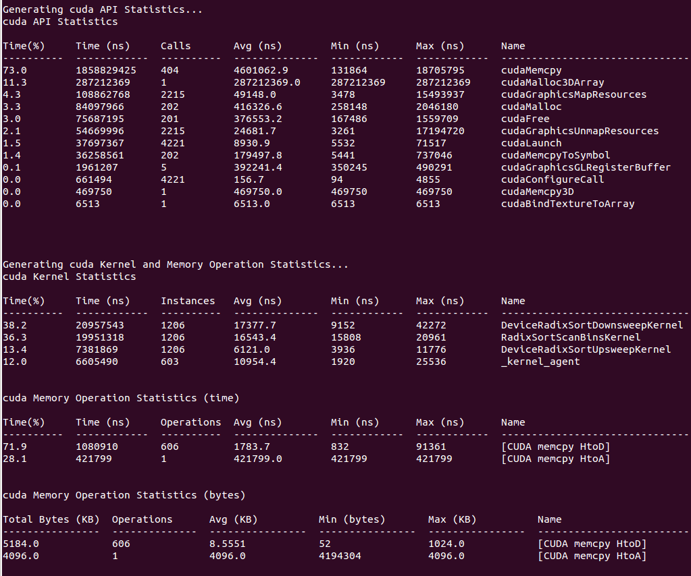
If your run traces OS runtime events or NVTX push-pop ranges:
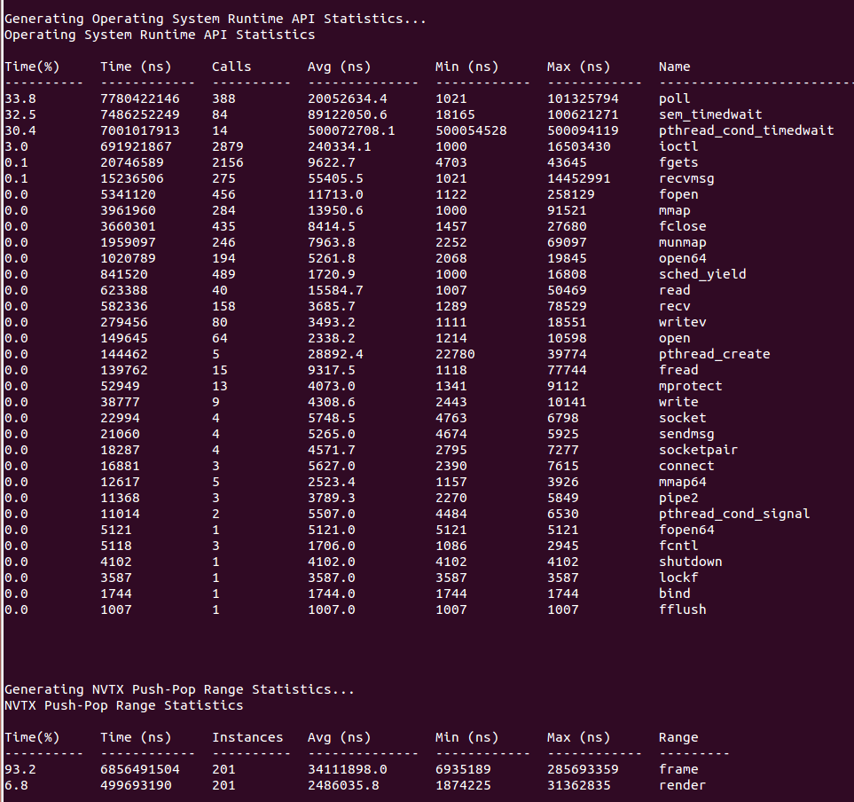
If your run traces graphics debug markers these include DX11 debug markers, DX12 debug markers, Vulkan debug markers or KHR debug markers:
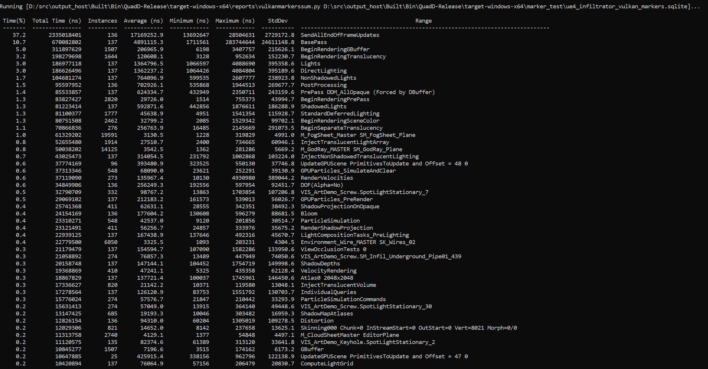
Recipes for these statistics as well as documentation on how to create your own metrics will be available in a future version of the tool.
1.8. Importing and Viewing Command Line Results Files
The CLI generates a .qdstrm file. The .qdstrm file is an intermediate result file, not intended for multiple imports. It needs to be processed, either by importing it into the GUI or by using the standalone QdstrmImporter to generate an optimized .nsys-rep file. Use this .nsys-rep file when re-opening the result on the same machine, opening the result on a different machine, or sharing results with teammates.
This version of Nsight Systems will attempt to automatically convert the .qdstrm file to a .nsys-rep file with the same name after the run finishes if the required libraries are available. The ability to turn off auto-conversion will be added in a later version.
Import Into the GUI
The CLI and host GUI versions must match to import a .qdstrm file successfully. The host GUI is backward compatible only with .nsys-rep files.
Copy the .qdstrm file you are interested in viewing to a system where the Nsight Systems host GUI is installed. Launch the Nsight Systems GUI. Select File->Import... and choose the .qdstrm file you wish to open.
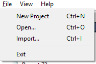
The import of really large, multi-gigabyte, .qdstrm files may take up all of the memory on the host computer and lock up the system. This will be fixed in a later version.
Importing Windows ETL files
For Windows targets, ETL files captured with Xperf or the log.cmd command supplied with GPUView in the Windows Performance Toolkit can be imported to create reports as if they were captured with Nsight Systems's "WDDM trace" and "Custom ETW trace" features. Simply choose the .etl file from the Import dialog to convert it to a .nsys-rep file.
Create .nsys-rep Using QdstrmImporter
The CLI and QdstrmImporter versions must match to convert a .qdstrm file into a .nsys-rep file. This .nsys-rep file can then be opened in the same version or more recent versions of the GUI.
To run QdstrmImporter on the host system, find the QdstrmImporter binary in the Host-x86_64 directory in your installation. QdstrmImporter is available for all host platforms. See options below.
To run QdstrmImporter on the target system, copy the Linux Host-x86_64 directory to the target Linux system or install Nsight Systems for Linux host directly on the target. The Windows or macOS host QdstrmImporter will not work on a Linux Target. See options below.
| Short | Long | Parameter | Description |
|---|---|---|---|
| -h | --help | Help message providing information about available options and their parameters. | |
| -v | --version | Output QdstrmImporter version information | |
| -i | --input-file | filename or path | Import .qdstrm file from this location. |
| -o | --output-file | filename or path | Provide a different file name or path for the resulting .nsys-rep file. Default is the same name and path as the .qdstrm file |
1.9. Using the CLI to Analyze MPI Codes
1.9.1. Tracing MPI API calls
The Nsight Systems CLI has built-in API trace support via --trace=mpi option only for the OpenMPI and MPICH implementations of MPI. It traces a default list of synchronous MPI APIs. If you require more control over the list of traced APIs or if you are using a different MPI implementation, see github nvtx pmpi wrappers.
You can use this documentation to generate a shared object to wrap a list of synchronous MPI APIs with NVTX using the MPI profiling interface (PMPI). If you set your LD_PRELOAD environment variable to the path of that object, nsys will capture and report the MPI API trace information when --trace=nvtx is used. There is no need to use --trace=MPI.
NVTX tracing is automatically enabled when MPI trace is turned on.
1.9.2. Using the CLI to Profile Applications Launched with mpirun
This version of the Nsight Systems CLI supports concurrent use of the nsys profile command. Each instance will create a separate report file.
You cannot use multiple instances of the interactive CLI concurrently, or use the interactive CLI concurrently with nsys profile in this version.
Nsight Systems can be used to profile applications launched with mpirun command. Since concurrent use of the CLI is supported only when using the nsys profile command, Nsight Systems cannot profile each node from the GUI or from the interactive CLI.
To profile everything, putting the data in one file:
nsys [nsys options] mpirun [mpi options]
To profile everything putting the data from each rank into a separate file:
mpirun [mpi options] nsys profile [nsys options]
#!/bin/bash if [[ $OMPI_COMM_WORLD_RANK == 0 ]]; then ~/nsys/nsys profile ./myapp "$@" --mydummyargument else ./myapp "$@" fi
and then execute mpirun ./wrap.sh.
Note:
Currently you will need a dummy argument to the process, so that Nsight Systems can decide which process to profile. This means that your process must accept dummy arguments to take advantage of this workaround. This script as written is for Open MPI, but should be easily adaptable to other MPI implementations.
2. Profiling from the GUI
2.1. Profiling Linux Targets from the GUI
2.1.1. Connecting to the Target Device
Nsight Systems provides a simple interface to profile on localhost or manage multiple connections to Linux or Windows based devices via SSH. The network connections manager can be launched through the device selection dropdown:
On x86_64:

On Tegra:

The dialog has simple controls that allow adding, removing, and modifying connections:

Security notice: SSH is only used to establish the initial connection to a target device, perform checks, and upload necessary files. The actual profiling commands and data are transferred through a raw, unencrypted socket. Nsight Systems should not be used in a network setup where attacker-in-the-middle attack is possible, or where untrusted parties may have network access to the target device.
While connecting to the target device, you will be prompted to input the user's password. Please note that if you choose to remember the password, it will be stored in plain text in the configuration file on the host. Stored passwords are bound to the public key fingerprint of the remote device.
The No authentication option is useful for devices configured for passwordless login using root username. To enable such a configuration, edit the file /etc/ssh/sshd_config on the target and specify the following option:
PermitRootLogin yes
Then set empty password using passwd and restart the SSH service with service ssh restart.
Open ports: The Nsight Systems daemon requires port 22 and port 45555 to be open for listening. You can confirm that these ports are open with the following command:
sudo firewall-cmd --list-ports --permanent sudo firewall-cmd --reload
To open a port use the following command, skip --permanent option to open only for this session:
sudo firewall-cmd --permanent --add-port 45555/tcp sudo firewall-cmd --reload
Likewise, if you are running on a cloud system, you must open port 22 and port 45555 for ingress.
Kernel Version Number - To check for the version number of the kernel support of Nsight Systems on a target device, run the following command on the remote device:
cat /proc/quadd/version
Minimal supported version is 1.82.
Additionally, presence of Netcat command (nc) is required on the target device. For example, on Ubuntu this package can be installed using the following command:
sudo apt-get install netcat-openbsd
2.1.2. System-Wide Profiling Options
2.1.2.1. Linux x86_64
System-wide profiling is available on x86 for Linux targets only when run with root privileges.
Ftrace Events Collection
Select Ftrace events
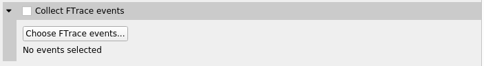
Choose which events you would like to collect.
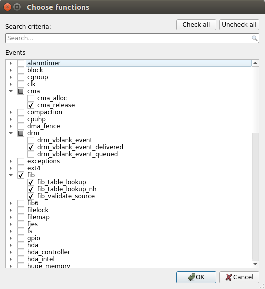
GPU Context Switch Trace
Tracing of context switching on the GPU is enabled with driver r435.17 or higher.
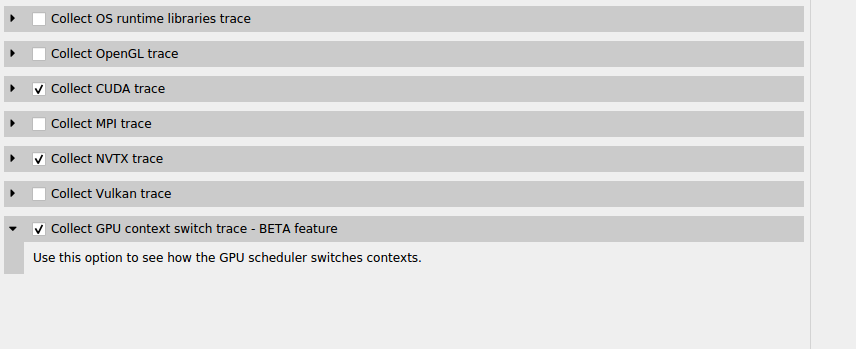
Here is a screenshot showing three CUDA kernels running simultaneously in three different CUDA contexts on a single GPU.
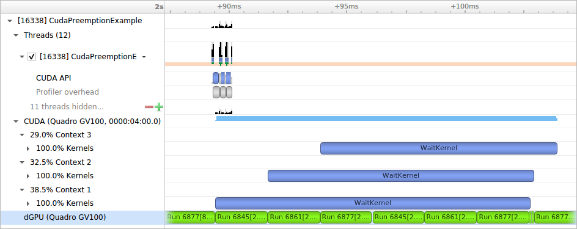
2.1.2.2. Linux for Tegra
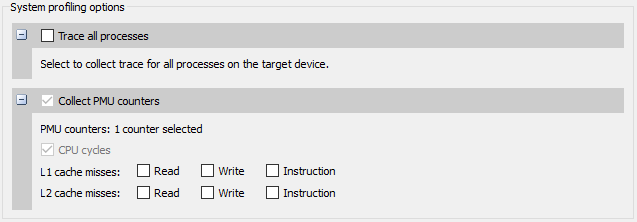
Trace all processes – On compatible devices (with kernel module support version 1.107 or higher), this enables trace of all processes and threads in the system. Scheduler events from all tasks will be recorded.
Collect PMU counters – This allows you to choose which PMU (Performance Monitoring Unit) counters Nsight Systems will sample. Enable specific counters when interested in correlating cache misses to functions in your application.
2.1.3. Target Sampling Options
Target sampling behavior is somewhat different for Nsight Systems Workstation Edition and Nsight Systems Embedded Platforms Edition.
Target Sampling Options for Workstation
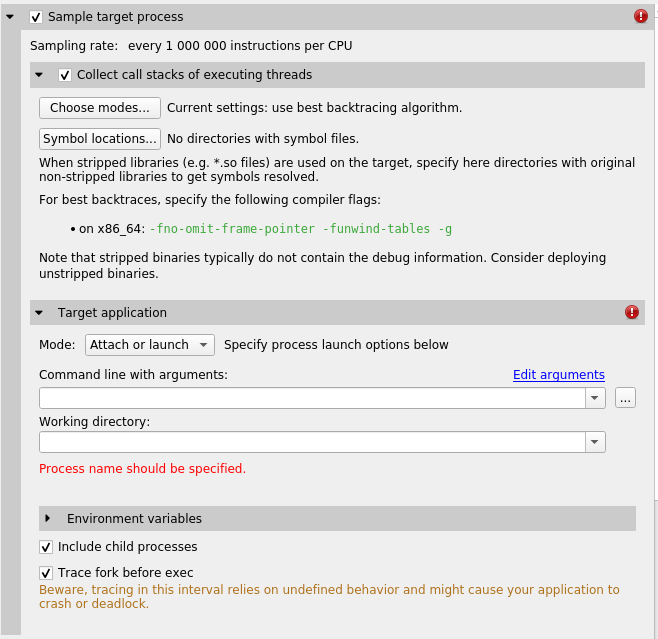
Three different backtrace collections options are available when sampling CPU instruction pointers. Backtraces can be generated using Intel (c) Last Branch Record (LBR) registers. LBR backtraces generate minimal overhead but the backtraces have limited depth. Backtraces can also be generated using DWARF debug data. DWARF backtraces incur more overhead than LBR backtraces but have much better depth. Finally, backtraces can be generated using frame pointers. Frame pointer backtraces incur medium overhead and have good depth but only resolve frames in the portions of the application and its libraries (including 3rd party libraries) that were compiled with frame pointers enabled. Normally, frame pointers are disabled by default during compilation.
By default, Nsight Systems will use Intel(c) LBRs if available and fall back to using dwarf unwind if they are not. Choose modes... will allow you to override the default.
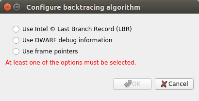
The Include child processes switch controls whether API tracing is only for the launched process, or for all existing and new child processes of the launched process. If you are running your application through a script, for example a bash script, you need to set this checkbox.
The Include child processes switch does not control sampling in this version of Nsight Systems. The full process tree will be sampled regardless of this setting. This will be fixed in a future version of the product.
Nsight Systems can sample one process tree. Sampling here means interrupting each processor after a certain number of events and collecting an instruction pointer (IP)/backtrace sample if the processor is executing the profilee.
When sampling the CPU on a workstation target, Nsight Systems traces thread context switches and infers thread state as either Running or Blocked. Note that Blocked in the timeline indicates the thread may be Blocked (Interruptible) or Blocked (Uninterruptible). Blocked (Uninterruptible) often occurs when a thread has transitioned into the kernel and cannot be interrupted by a signal. Sampling can be enhanced with OS runtime libraries tracing; see OS Runtime Libraries Trace for more information.
Target Sampling Options for Embedded Linux
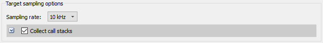
Currently Nsight Systems can only sample one process. Sampling here means that the profilee will be stopped periodically, and backtraces of active threads will be recorded.
Most applications use stripped libraries. In this case, many symbols may stay unresolved. If unstripped libraries exist, paths to them can be specified using the Symbol locations... button. Symbol resolution happens on host, and therefore does not affect performance of profiling on the target.
Additionally, debug versions of ELF files may be picked up from the target system. Refer to Debug Versions of ELF Files for more information.
2.1.4. Hotkey Trace Start/Stop
Nsight Systems Workstation Edition can use hotkeys to control profiling. Press the hotkey to start and/or stop a trace session from within the target application’s graphic window. This is useful when tracing games and graphic applications that use fullscreen display. In these scenarios switching to Nsight Systems' UI would unnecessarily introduce the window manager's footprint into the trace. To enable the use of Hotkey check the Hotkey checkbox in the project settings page:
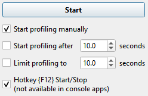
The default hotkey is F12.
2.1.5. Launching and Attaching to Processes
Nsight Systems Embedded Platforms Edition can work with Linux-based devices in three modes:
-
Attaching to a process by name
-
Attaching to a process by name, or launching a new process
-
Attaching to a process by its PID
The purpose of the configuration here is to define which process the profiler will attach to for sampling and tracing. Additionally, the profiler can launch a process prior to attaching to it, ensuring that all environment variables are set correctly to successfully collect trace information.
In Attach only mode, the process is selected by its name and command line arguments, as visible using the ps tool.
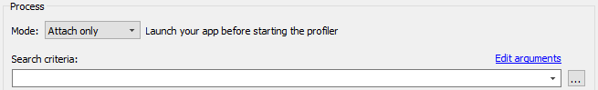
In Attach or launch mode, the process is to first search as if in the Attach only mode, but if it is not found, the process is launched using the same path and command line arguments. If NVTX, CUDA, or other trace settings are selected, the process will be automatically launched with appropriate environment variables.
Note that in some cases, the capabilities of Nsight Systems are not sufficient to correctly launch the application; for example, if certain environment variables have to be corrected. In this case, the application has to be started manually and Nsight Systems should be used in Attach only mode.
The Edit arguments... link will open an editor window, where every command line argument is edited on a separate line. This is convenient when arguments contain spaces or quotes.
To properly populate the Search criteria field based on a currently running process on the target system, use the Select a process button on the right, which has ellipsis as the caption. The list of processes is automatically refreshed upon opening.
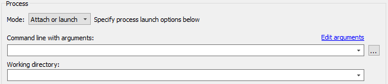
Attach by PID mode should be used to connect to a specific process.
To choose one of the currently running processes on the target system, use the Select a process button on the right.
2.2. Profiling Windows Targets from the GUI
Profiling on Windows devices is similar to the profiling on Linux devices. Please refer to the Profiling Linux Targets from the GUI section for the detailed documentation and connection information. The major differences on the platforms are listed below:
Remoting to a Windows Based Machine
To perform remote profiling to a target Windows based machines, install and configure an OpenSSH Server on the target machine.
Hotkey Trace Start/Stop
Nsight Systems Workstation Edition can use hotkeys to control profiling. Press the hotkey to start and/or stop a trace session from within the target application’s graphic window. This is useful when tracing games and graphic applications that use fullscreen display. In these scenarios switching to Nsight Systems' UI would unnecessarily introduce the window manager's footprint into the trace. To enable the use of Hotkey check the Hotkey checkbox in the project settings page:
The default hotkey is F12.
Changing the Default Hotkey Binding - A different hotkey binding can be configured by setting the HotKeyIntValue configuration field in the config.ini file.
Set the decimal numeric identifier of the hotkey you would like to use for triggering start/stop from the target app graphics window. The default value is 123 which corresponds to 0x7B, or the F12 key.
Virtual key identifiers are detailed in MSDN's Virtual-Key Codes.
Note that you must convert the hexadecimal values detailed in this page to their decimal counterpart before using them in the file. For example, to use the F1 key as a start/stop trace hotkey, use the following settings in the config.ini file:
HotKeyIntValue=112
Target Sampling Options on Windows
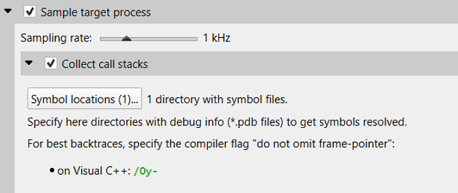
Nsight Systems can sample one process tree. Sampling here means interrupting each processor periodically. The sampling rate is defined in the project settings and is either 100Hz, 1KHz (default value), 2Khz, 4KHz, or 8KHz.
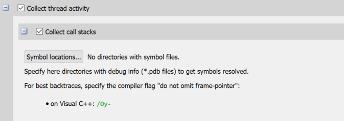
On Windows, Nsight Systems can collect thread activity of one process tree. Collecting thread activity means that each thread context switch event is logged and (optionally) a backtrace is collected at the point that the thread is scheduled back for execution. Thread states are displayed on the timeline.
If it was collected, the thread backtrace is displayed when hovering over a region where the thread execution is blocked.
Symbol Locations
Symbol resolution happens on host, and therefore does not affect performance of profiling on the target.
Press the Symbol locations... button to open the Configure debug symbols location dialog.
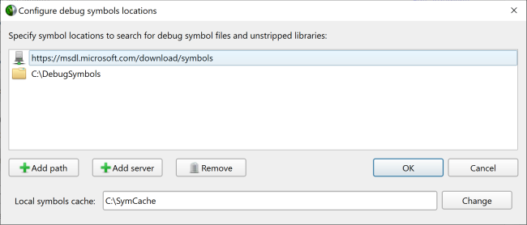
Use this dialog to specify:
-
Paths of PDB files
-
Symbols servers
-
The location of the local symbol cache
To use a symbol server:
-
Install Debugging Tools for Windows, a part of the Windows 10 SDK.
-
Add the symbol server URL using the Add Server button.
Information about Microsoft's public symbol server, which enables getting Windows operating system related debug symbols can be found here.
2.3. Profiling QNX Targets from the GUI
Profiling on QNX devices is similar to the profiling on Linux devices. Please refer to the Profiling Linux Targets from the GUI section for the detailed documentation. The major differences on the platforms are listed below:
-
Backtrace sampling is not supported. Instead backtraces are collected for long OS runtime libraries calls. Please refer to the OS Runtime Libraries Trace section for the detailed documentation.
-
CUDA support is limited to CUDA 9.0+
-
Filesystem on QNX device might be mounted read-only. In that case Nsight Systems is not able to install target-side binaries, required to run the profiling session. Please make sure that target filesystem is writable before connecting to QNX target. For example, make sure the following command works:
echo XX > /xx && ls -l /xx
3. Export Formats
SQLite Schema Reference
Nsight Systems has the ability to export SQLite database files from the .nsys-rep results file. From the CLI, use nsys export. From the GUI, call File->Export....
Note: The .nsys-rep report format is the only data format for Nsight Systems that should be considered forward compatible. The SQLite schema can and will change in the future.
The schema for a concrete database can be obtained with the sqlite3 tool built-in command .schema. The sqlite3 tool can be located in the Target or Host directory of your Nsight Systems installation.
Note: Currently tables are created lazily, and therefore not every table described in the documentation will be present in a particular database. This will change in a future version of the product. If you want a full schema of all possible tables, use nsys export --lazy=false during export phase.
Currently, a table is created for each data type in the exported database. Since usage patterns for exported data may vary greatly and no default use cases have been established, no indexes or extra constraints are created. Instead, refer to the SQLite Examples section for a list of common recipes. This may change in a future version of the product.
To check the version of your exported SQLite file, check the value of EXPORT_SCHEMA_VERSION in the EXPORT_META_DATA table. The schema version is a common three-value major/minor/micro version number. The first value, or major value, indicates the overall format of the database, and is only changed if there is a major re-write or re-factor of the entire database format. It is assumed that if the major version changes, all scripts or queries will break. The middle, or minor, version is changed anytime there is a more localized, but potentially breaking change, such as renaming an existing column, or changing the type of an existing column. The last, or micro version is changed any time there are additions, such as a new table or column, that should not introduce any breaking change when used with well-written, best-practices queries.
This is the schema as of the 2021.5 release, schema version 2.7.1.
CREATE TABLE StringIds (
-- Consolidation of repetitive string values.
id INTEGER NOT NULL PRIMARY KEY, -- ID reference value.
value TEXT NOT NULL -- String value.
);
CREATE TABLE ThreadNames (
nameId INTEGER NOT NULL REFERENCES StringIds(id), -- StringId of the thread name.
priority INTEGER, -- Priority of the thread.
globalTid INTEGER -- Serialized GlobalId.
);
CREATE TABLE ProcessStreams (
globalPid INTEGER NOT NULL, -- Serialized GlobalId.
filenameId INTEGER NOT NULL REFERENCES StringIds(id), -- StringId of the file name.
contentId INTEGER NOT NULL REFERENCES StringIds(id) -- StringId of the stream content.
);
CREATE TABLE TARGET_INFO_SYSTEM_ENV (
globalVid INTEGER NOT NULL, -- Serialized GlobalId.
devStateName TEXT NOT NULL, -- Device state name.
name TEXT NOT NULL, -- Property name.
nameEnum INTEGER NOT NULL, -- Property enum value.
value TEXT NOT NULL -- Property value.
);
CREATE TABLE TARGET_INFO_SESSION_START_TIME (
utcEpochNs INTEGER, -- UTC Epoch timestamp at start of the capture (ns).
utcTime TEXT, -- Start of the capture in UTC.
localTime TEXT -- Start of the capture in local time of target.
);
CREATE TABLE ANALYSIS_DETAILS (
-- Details about the analysis session.
globalVid INTEGER NOT NULL, -- Serialized GlobalId.
duration INTEGER NOT NULL, -- The total time span of the entire trace (ns).
startTime INTEGER NOT NULL, -- Trace start timestamp in nanoseconds.
stopTime INTEGER NOT NULL -- Trace stop timestamp in nanoseconds.
);
CREATE TABLE TARGET_INFO_GPU (
vmId INTEGER NOT NULL, -- Serialized GlobalId.
id INTEGER NOT NULL, -- Device ID.
name TEXT, -- Device name.
busLocation TEXT, -- PCI bus location.
isDiscrete INTEGER, -- True if discrete, false if integrated.
l2CacheSize INTEGER, -- Size of L2 cache (B).
totalMemory INTEGER, -- Total amount of memory on the device (B).
memoryBandwidth INTEGER, -- Amount of memory transferred (B).
clockRate INTEGER, -- Clock frequency (Hz).
smCount INTEGER, -- Number of multiprocessors on the device.
pwGpuId INTEGER, -- PerfWorks GPU ID.
uuid TEXT, -- Device UUID.
luid INTEGER, -- Device LUID.
chipName TEXT, -- Chip name.
cuDevice INTEGER, -- CUDA device ID.
ctxswDevPath TEXT, -- GPU context switch device node path.
ctrlDevPath TEXT, -- GPU control device node path.
revision INTEGER, -- Revision number.
nodeMask INTEGER, -- Device node mask.
constantMemory INTEGER, -- Memory available on device for __constant__ variables (B).
maxIPC INTEGER, -- Maximum instructions per count.
maxRegistersPerBlock INTEGER, -- Maximum number of 32-bit registers available per block.
maxShmemPerBlock INTEGER, -- Maximum optin shared memory per block.
maxShmemPerBlockOptin INTEGER, -- Maximum optin shared memory per block.
maxShmemPerSm INTEGER, -- Maximum shared memory available per multiprocessor (B).
maxRegistersPerSm INTEGER, -- Maximum number of 32-bit registers available per multiprocessor.
threadsPerWarp INTEGER, -- Warp size in threads.
asyncEngines INTEGER, -- Number of asynchronous engines.
maxWarpsPerSm INTEGER, -- Maximum number of warps per multiprocessor.
maxBlocksPerSm INTEGER, -- Maximum number of blocks per multiprocessor.
maxThreadsPerBlock INTEGER, -- Maximum number of threads per block.
maxBlockDimX INTEGER, -- Maximum X-dimension of a block.
maxBlockDimY INTEGER, -- Maximum Y-dimension of a block.
maxBlockDimZ INTEGER, -- Maximum Z-dimension of a block.
maxGridDimX INTEGER, -- Maximum X-dimension of a grid.
maxGridDimY INTEGER, -- Maximum Y-dimension of a grid.
maxGridDimZ INTEGER, -- Maximum Z-dimension of a grid.
computeMajor INTEGER, -- Major compute capability version number.
computeMinor INTEGER, -- Minor compute capability version number.
smMajor INTEGER, -- Major multiprocessor version number.
smMinor INTEGER -- Minor multiprocessor version number.
);
CREATE TABLE TARGET_INFO_XMC_SPEC (
vmId INTEGER NOT NULL, -- Serialized GlobalId.
clientId INTEGER NOT NULL, -- Client ID.
type TEXT NOT NULL, -- Client type.
name TEXT NOT NULL, -- Client name.
groupId TEXT NOT NULL -- Client group ID.
);
CREATE TABLE TARGET_INFO_PROCESS (
processId INTEGER NOT NULL, -- Process ID.
openGlVersion TEXT NOT NULL, -- OpenGL version.
correlationId INTEGER NOT NULL, -- Correlation ID of the kernel.
nameId INTEGER NOT NULL REFERENCES StringIds(id) -- StringId of the function name.
);
CREATE TABLE TARGET_INFO_NVTX_CUDA_DEVICE (
name TEXT NOT NULL, -- CUDA device name assigned using NVTX.
hwId INTEGER NOT NULL, -- Hardware ID.
vmId INTEGER NOT NULL, -- VM ID.
deviceId INTEGER NOT NULL -- Device ID.
);
CREATE TABLE TARGET_INFO_NVTX_CUDA_CONTEXT (
name TEXT NOT NULL, -- CUDA context name assigned using NVTX.
hwId INTEGER NOT NULL, -- Hardware ID.
vmId INTEGER NOT NULL, -- VM ID.
processId INTEGER NOT NULL, -- Process ID.
deviceId INTEGER NOT NULL, -- Device ID.
contextId INTEGER NOT NULL -- Context ID.
);
CREATE TABLE TARGET_INFO_NVTX_CUDA_STREAM (
name TEXT NOT NULL, -- CUDA stream name assigned using NVTX.
hwId INTEGER NOT NULL, -- Hardware ID.
vmId INTEGER NOT NULL, -- VM ID.
processId INTEGER NOT NULL, -- Process ID.
deviceId INTEGER NOT NULL, -- Device ID.
contextId INTEGER NOT NULL, -- Context ID.
streamId INTEGER NOT NULL -- Stream ID.
);
CREATE TABLE TARGET_INFO_CUDA_NULL_STREAM (
streamId INTEGER NOT NULL, -- Stream ID.
hwId INTEGER NOT NULL, -- Hardware ID.
vmId INTEGER NOT NULL, -- VM ID.
processId INTEGER NOT NULL, -- Process ID.
deviceId INTEGER NOT NULL, -- Device ID.
contextId INTEGER NOT NULL -- Context ID.
);
CREATE TABLE TARGET_INFO_CUDA_STREAM (
streamId INTEGER NOT NULL, -- Stream ID.
hwId INTEGER NOT NULL, -- Hardware ID.
vmId INTEGER NOT NULL, -- VM ID.
processId INTEGER NOT NULL, -- Process ID.
contextId INTEGER NOT NULL, -- Context ID.
priority INTEGER NOT NULL, -- Priority of the stream.
flag INTEGER NOT NULL -- Flags for stream creation.
);
CREATE TABLE TARGET_INFO_WDDM_CONTEXTS (
context INTEGER NOT NULL,
engineType INTEGER NOT NULL,
nodeOrdinal INTEGER NOT NULL,
friendlyName TEXT NOT NULL
);
CREATE TABLE EXPORT_META_DATA (
-- information about nsys export process
name TEXT NOT NULL, -- Name of export meta-data record
value TEXT -- Value of export meta-data record
);
CREATE TABLE CUPTI_ACTIVITY_KIND_MEMCPY (
start INTEGER NOT NULL, -- Event start timestamp (ns).
end INTEGER NOT NULL, -- Event end timestamp (ns).
deviceId INTEGER NOT NULL, -- Device ID.
contextId INTEGER NOT NULL, -- Context ID.
streamId INTEGER NOT NULL, -- Stream ID.
correlationId INTEGER REFERENCES CUPTI_ACTIVITY_KIND_RUNTIME(correlationId), -- ID used to identify the API call that launched the event.
globalPid INTEGER, -- Serialized GlobalId.
bytes INTEGER NOT NULL, -- Number of bytes transferred (B).
copyKind INTEGER NOT NULL, -- Type of the memory copy. See enum CUDA_MEMCPY_KIND.
deprecatedSrcId INTEGER, -- Deprecated, use srcDeviceId instead.
srcKind INTEGER, -- Source memory kind See enum CUDA_MEMOPR_MEMORY_KIND.
dstKind INTEGER, -- Destination memory kind. See enum CUDA_MEMOPR_MEMORY_KIND.
srcDeviceId INTEGER, -- Source device ID.
srcContextId INTEGER, -- Source context ID.
dstDeviceId INTEGER, -- Destination device ID.
dstContextId INTEGER, -- Destination context ID.
migrationCause INTEGER, -- UVM migration cause ID. See CUpti_ActivityUnifiedMemoryMigrationCause.
graphNodeId INTEGER REFERENCES CUDA_GRAPH_EVENTS(graphNodeId), -- CUDA graph node creation ID.
virtualAddress INTEGER -- Virtual base address of the page/s being transferred.
);
CREATE TABLE CUPTI_ACTIVITY_KIND_MEMSET (
start INTEGER NOT NULL, -- Event start timestamp (ns).
end INTEGER NOT NULL, -- Event end timestamp (ns).
deviceId INTEGER NOT NULL, -- Device ID.
contextId INTEGER NOT NULL, -- Context ID.
streamId INTEGER NOT NULL, -- Stream ID.
correlationId INTEGER REFERENCES CUPTI_ACTIVITY_KIND_RUNTIME(correlationId), -- ID used to identify the API call that launched the event.
globalPid INTEGER, -- Serialized GlobalId.
value INTEGER NOT NULL, -- Value assigned to memory.
bytes INTEGER NOT NULL, -- Number of bytes set (B).
graphNodeId INTEGER REFERENCES CUDA_GRAPH_EVENTS(graphNodeId), -- CUDA graph node creation ID.
memKind INTEGER -- Type of memory being set. See enum CUDA_MEMOPR_MEMORY_KIND.
);
CREATE TABLE CUPTI_ACTIVITY_KIND_KERNEL (
start INTEGER NOT NULL, -- Event start timestamp (ns).
end INTEGER NOT NULL, -- Event end timestamp (ns).
deviceId INTEGER NOT NULL, -- Device ID.
contextId INTEGER NOT NULL, -- Context ID.
streamId INTEGER NOT NULL, -- Stream ID.
correlationId INTEGER REFERENCES CUPTI_ACTIVITY_KIND_RUNTIME(correlationId), -- ID used to identify the API call that launched the event.
globalPid INTEGER, -- Serialized GlobalId.
demangledName INTEGER NOT NULL, -- StringId of the kernel name
shortName INTEGER NOT NULL, -- StringId of the short function name without arguments.
mangledName INTEGER, -- StringId of the mangled function name.
launchType INTEGER, -- Launch type of the kernel. See docs for specifics.
cacheConfig INTEGER, -- Cache configuration used for the kernel. See enum CUfunc_cache.
registersPerThread INTEGER NOT NULL, -- Number of registers required for each thread executing the kernel.
gridX INTEGER NOT NULL, -- X-dimension grid size.
gridY INTEGER NOT NULL, -- Y-dimension grid size.
gridZ INTEGER NOT NULL, -- Z-dimension grid size.
blockX INTEGER NOT NULL, -- X-dimension block size.
blockY INTEGER NOT NULL, -- Y-dimension block size.
blockZ INTEGER NOT NULL, -- Z-dimension block size.
staticSharedMemory INTEGER NOT NULL, -- Static shared memory allocated for the kernel (B).
dynamicSharedMemory INTEGER NOT NULL, -- Dynamic shared memory reserved for the kernel (B).
localMemoryPerThread INTEGER NOT NULL, -- Amount of local memory reserved for each thread (B).
localMemoryTotal INTEGER NOT NULL, -- Total amount of local memory reserved for the kernel (B).
gridId INTEGER NOT NULL, -- Unique grid ID of the kernel assigned at runtime.
sharedMemoryExecuted INTEGER, -- Shared memory size set by the driver.
graphNodeId INTEGER REFERENCES CUDA_GRAPH_EVENTS(graphNodeId), -- CUDA graph node creation ID.
sharedMemoryLimitConfig INTEGER -- Shared memory limit per block config. See enum CUpti_FuncShmemLimitConfig.
);
CREATE TABLE CUPTI_ACTIVITY_KIND_CUDA_EVENT (
deviceId INTEGER NOT NULL, -- Device ID.
contextId INTEGER NOT NULL, -- Context ID.
streamId INTEGER NOT NULL, -- Stream ID.
correlationId INTEGER, -- Correlation ID of the event record API to which this result is associated.
globalPid INTEGER, -- Serialized GlobalId.
eventId INTEGER NOT NULL -- Event ID for which the event record API is called.
);
CREATE TABLE CUPTI_ACTIVITY_KIND_SYNCHRONIZATION (
start INTEGER NOT NULL, -- Event start timestamp (ns).
end INTEGER NOT NULL, -- Event end timestamp (ns).
deviceId INTEGER NOT NULL, -- Device ID.
contextId INTEGER NOT NULL, -- Context ID.
streamId INTEGER NOT NULL, -- Stream ID.
correlationId INTEGER, -- Correlation ID of the API to which this result is associated.
globalPid INTEGER, -- Serialized GlobalId.
syncType INTEGER NOT NULL, -- Type of synchronization. See enum CUpti_ActivitySynchronizationType.
eventId INTEGER NOT NULL -- Event ID for which the synchronization API is called.
);
CREATE TABLE CUPTI_ACTIVITY_KIND_RUNTIME (
start INTEGER NOT NULL, -- Event start timestamp (ns).
end INTEGER NOT NULL, -- Event end timestamp (ns).
eventClass INTEGER NOT NULL, -- CUDA event class enum value. See docs for specifics.
globalTid INTEGER, -- Serialized GlobalId.
correlationId INTEGER, -- ID used to identify events that this function call has triggered.
nameId INTEGER NOT NULL REFERENCES StringIds(id), -- StringId of the function name.
returnValue INTEGER NOT NULL, -- Return value of the function call.
callchainId INTEGER REFERENCES CUDA_CALLCHAINS(id) -- ID of the attached callchain.
);
CREATE TABLE CUDNN_EVENTS (
start INTEGER NOT NULL, -- Event start timestamp (ns).
end INTEGER NOT NULL, -- Event end timestamp (ns).
eventClass INTEGER NOT NULL, -- CUDA event class enum value. See docs for specifics.
globalTid INTEGER, -- Serialized GlobalId.
nameId INTEGER NOT NULL REFERENCES StringIds(id) -- StringId of the function name.
);
CREATE TABLE CUBLAS_EVENTS (
start INTEGER NOT NULL, -- Event start timestamp (ns).
end INTEGER NOT NULL, -- Event end timestamp (ns).
eventClass INTEGER NOT NULL, -- CUDA event class enum value. See docs for specifics.
globalTid INTEGER, -- Serialized GlobalId.
nameId INTEGER NOT NULL REFERENCES StringIds(id) -- StringId of the function name.
);
CREATE TABLE CUDA_GRAPH_EVENTS (
start INTEGER NOT NULL, -- Event start timestamp (ns).
end INTEGER NOT NULL, -- Event end timestamp (ns).
eventClass INTEGER NOT NULL, -- CUDA event class enum value. See docs for specifics.
globalTid INTEGER, -- Serialized GlobalId.
nameId INTEGER NOT NULL REFERENCES StringIds(id), -- StringId of the function name.
graphNodeId INTEGER NOT NULL REFERENCES CUDA_GRAPH_EVENTS(graphNodeId), -- CUDA graph node creation ID.
originalGraphNodeId INTEGER -- Reference to the original graph node ID, if cloned node.
);
CREATE TABLE CUDA_UM_CPU_PAGE_FAULT_EVENTS (
start INTEGER NOT NULL, -- Event start timestamp (ns).
globalPid INTEGER NOT NULL, -- Serialized GlobalId.
address INTEGER NOT NULL, -- Virtual address of the page that faulted.
originalFaultPc INTEGER, -- Program counter of the CPU instruction that caused the page fault.
CpuInstruction INTEGER NOT NULL REFERENCES StringIds(id), -- StringId of the function name.
module INTEGER NOT NULL REFERENCES StringIds(id), -- StringId of the module name.
unresolvedFaultPc INTEGER -- True if the program counter was not resolved.
);
CREATE TABLE CUDA_UM_GPU_PAGE_FAULT_EVENTS (
start INTEGER NOT NULL, -- Event start timestamp (ns).
end INTEGER NOT NULL, -- Event end timestamp (ns).
globalPid INTEGER NOT NULL, -- Serialized GlobalId.
deviceId INTEGER NOT NULL, -- Device ID.
address INTEGER NOT NULL, -- Virtual address of the page that faulted.
numberOfPageFaults INTEGER NOT NULL, -- Number of page faults for the same page.
faultAccessType INTEGER NOT NULL -- Type of Unified memory accessed. See enum CUpti_ActivityUnifiedMemoryAccessType.
);
CREATE TABLE CUDA_GPU_MEMORY_USAGE_EVENTS (
start INTEGER NOT NULL, -- Event start timestamp (ns).
globalPid INTEGER NOT NULL, -- Serialized GlobalId.
deviceId INTEGER NOT NULL, -- Device ID.
contextId INTEGER NOT NULL, -- Context ID.
address INTEGER NOT NULL, -- Virtual address of the allocation/deallocation.
pc INTEGER NOT NULL, -- Program counter of the allocation/deallocation.
bytes INTEGER NOT NULL, -- Number of bytes allocated/deallocated (B).
memKind INTEGER NOT NULL, -- Type of memory being allocated/deallocated. See enum CUDA_MEMOPR_MEMORY_KIND.
memoryOperationType INTEGER NOT NULL, -- 0 if memory was allocated and 1 if memory was deallocated.
name TEXT, -- Variable name, if available.
correlationId INTEGER -- ID used to identify the API call that launched the event.
);
CREATE TABLE CUDA_CALLCHAINS (
id INTEGER NOT NULL, -- Part of PRIMARY KEY (id, stackDepth).
symbol INTEGER NOT NULL REFERENCES StringIds(id), -- StringId of the function name.
module INTEGER NOT NULL REFERENCES StringIds(id), -- StringId of the module name.
unresolved INTEGER, -- True if the symbol was not resolved.
originalIP INTEGER, -- Instruction pointer value.
stackDepth INTEGER NOT NULL, -- Zero-base index of the given function in call stack.
PRIMARY KEY (id, stackDepth)
);
CREATE TABLE NVTX_EVENTS (
start INTEGER NOT NULL, -- Event start timestamp (ns).
end INTEGER, -- Event end timestamp (ns).
eventType INTEGER NOT NULL, -- NVTX event type enum value. See docs for specifics.
rangeId INTEGER, -- Correlation ID returned from a nvtxRangeStart call.
category INTEGER, -- User-controlled ID that can be used to group events.
color INTEGER, -- Encoded ARGB color value.
text TEXT, -- Optional text message for non registered strings.
globalTid INTEGER, -- Serialized GlobalId.
endGlobalTid INTEGER, -- Serialized GlobalId. See docs for specifics.
textId INTEGER REFERENCES StringIds(id), -- StringId of the NVTX domain registered string.
domainId INTEGER, -- User-controlled ID that can be used to group events.
uint64Value INTEGER, -- One of possible payload value union members.
int64Value INTEGER, -- One of possible payload value union members.
doubleValue REAL, -- One of possible payload value union members.
uint32Value INTEGER, -- One of possible payload value union members.
int32Value INTEGER, -- One of possible payload value union members.
floatValue REAL, -- One of possible payload value union members.
jsonTextId INTEGER, -- One of possible payload value union members.
jsonText TEXT -- One of possible payload value union members.
);
CREATE TABLE OPENGL_API (
start INTEGER NOT NULL, -- Event start timestamp (ns).
end INTEGER NOT NULL, -- Event end timestamp (ns).
eventClass INTEGER NOT NULL, -- OpenGL event class enum value. See docs for specifics.
globalTid INTEGER, -- Serialized GlobalId.
endGlobalTid INTEGER, -- Serialized GlobalId.
correlationId INTEGER, -- First ID matching an API call to GPU workloads.
endCorrelationId INTEGER, -- Last ID matching an API call to GPU workloads.
nameId INTEGER NOT NULL REFERENCES StringIds(id), -- StringId of the first function name.
endNameId INTEGER REFERENCES StringIds(id), -- StringId of the last function name.
returnValue INTEGER NOT NULL, -- Return value of the function call.
frameId INTEGER, -- Index of the graphics frame starting from 1.
contextId INTEGER, -- Context ID.
gpu INTEGER, -- GPU index.
display INTEGER -- Display ID.
);
CREATE TABLE OPENGL_WORKLOAD (
start INTEGER NOT NULL, -- Event start timestamp (ns).
end INTEGER NOT NULL, -- Event end timestamp (ns).
eventClass INTEGER NOT NULL, -- OpenGL event class enum value. See docs for specifics.
globalTid INTEGER, -- Serialized GlobalId.
endGlobalTid INTEGER, -- Serialized GlobalId.
correlationId INTEGER, -- First ID matching an API call to GPU workloads.
endCorrelationId INTEGER, -- Last ID matching an API call to GPU workloads.
nameId INTEGER NOT NULL REFERENCES StringIds(id), -- StringId of the first function name.
endNameId INTEGER REFERENCES StringIds(id), -- StringId of the last function name.
returnValue INTEGER NOT NULL, -- Return value of the function call.
frameId INTEGER, -- Index of the graphics frame starting from 1.
contextId INTEGER, -- Context ID.
gpu INTEGER, -- GPU index.
display INTEGER -- Display ID.
);
CREATE TABLE KHR_DEBUG_EVENTS (
eventClass INTEGER NOT NULL, -- KHR event class enum value. See docs for specifics.
start INTEGER NOT NULL, -- Event start timestamp (ns).
end INTEGER, -- Event end timestamp (ns).
textId INTEGER REFERENCES StringIds(id), -- StringId of the debug marker/group text string.
globalTid INTEGER, -- Serialized GlobalId.
source INTEGER, -- KHR source enum value. See docs for specifics.
khrdType INTEGER, -- KHR type enum value. See docs for specifics.
id INTEGER, -- KHR event ID.
severity INTEGER, -- KHR severity enum value. See docs for specifics.
correlationId INTEGER, -- ID used to correlate KHR CPU trace to GPU trace.
context INTEGER -- Context ID.
);
CREATE TABLE OSRT_API (
-- OS runtime libraries traced to gather information about low-level userspace APIs.
start INTEGER NOT NULL, -- Event start timestamp (ns).
end INTEGER NOT NULL, -- Event end timestamp (ns).
eventClass INTEGER NOT NULL, -- OSRT event class enum value. See docs for specifics.
globalTid INTEGER, -- Serialized GlobalId.
nameId INTEGER NOT NULL REFERENCES StringIds(id), -- StringId of the function name.
returnValue INTEGER NOT NULL, -- Return value of the function call.
nestingLevel INTEGER, -- Zero-base index of the nesting level.
callchainId INTEGER NOT NULL REFERENCES OSRT_CALLCHAINS(id) -- ID of the attached callchain.
);
CREATE TABLE OSRT_CALLCHAINS (
-- Callchains attached to OSRT events, depending on selected profiling settings.
id INTEGER NOT NULL, -- Part of PRIMARY KEY (id, stackDepth).
symbol INTEGER NOT NULL REFERENCES StringIds(id), -- StringId of the function name.
module INTEGER NOT NULL REFERENCES StringIds(id), -- StringId of the module name.
kernelMode INTEGER, -- True if kernel mode.
thumbCode INTEGER, -- True if thumb code.
unresolved INTEGER, -- True if the symbol was not resolved.
specialEntry INTEGER, -- True if artifical entry added during processing callchain.
originalIP INTEGER, -- Instruction pointer value.
unwindMethod INTEGER REFERENCES UnwindMethodType(number), -- Instruction pointer value.
stackDepth INTEGER NOT NULL, -- Zero-base index of the given function in call stack.
PRIMARY KEY (id, stackDepth)
);
CREATE TABLE UnwindMethodType (
number INTEGER PRIMARY KEY,
name TEXT NOT NULL
);
CREATE TABLE PROFILER_OVERHEAD (
start INTEGER NOT NULL, -- Event start timestamp (ns).
end INTEGER NOT NULL, -- Event end timestamp (ns).
globalTid INTEGER, -- Serialized GlobalId.
nameId INTEGER NOT NULL REFERENCES StringIds(id), -- StringId of the function name.
returnValue INTEGER NOT NULL -- Return value of the function call.
);
CREATE TABLE SCHED_EVENTS (
-- Thread scheduling events.
start INTEGER NOT NULL, -- Event start timestamp (ns).
cpu INTEGER NOT NULL, -- ID of CPU this thread was scheduled in or out.
isSchedIn INTEGER NOT NULL, -- 0 if thread was scheduled out, non-zero otherwise.
globalTid INTEGER -- Serialized GlobalId.
);
CREATE TABLE COMPOSITE_EVENTS (
-- Thread sampling events.
id INTEGER NOT NULL PRIMARY KEY, -- ID of the composite event.
start INTEGER NOT NULL, -- Event start timestamp (ns).
cpu INTEGER, -- ID of CPU this thread was running on.
threadState INTEGER, -- Thread state at the moment of sampling. See docs for specifics.
globalTid INTEGER, -- Serialized GlobalId.
cpuCycles INTEGER NOT NULL -- Value of Performance Monitoring Unit (PMU) counter.
);
CREATE TABLE SAMPLING_CALLCHAINS (
-- Callchain entries obtained from composite events, used to construct function table views.
id INTEGER NOT NULL REFERENCES COMPOSITE_EVENTS(id), -- ID of the attached composite event.
symbol INTEGER NOT NULL REFERENCES StringIds(id), -- StringId of the function name.
module INTEGER NOT NULL REFERENCES StringIds(id), -- StringId of the module name.
kernelMode INTEGER, -- True if kernel mode.
thumbCode INTEGER, -- True if thumb code.
unresolved INTEGER, -- True if the symbol was not resolved.
specialEntry INTEGER, -- True if artifical entry added during processing callchain.
originalIP INTEGER, -- Instruction pointer value.
unwindMethod INTEGER REFERENCES UnwindMethodType(number), -- Instruction pointer value.
stackDepth INTEGER NOT NULL, -- Zero-base index of the given function in call stack.
PRIMARY KEY (id, stackDepth)
);
CREATE TABLE SLI_QUERIES (
start INTEGER NOT NULL, -- Event start timestamp (ns).
end INTEGER NOT NULL, -- Event end timestamp (ns).
eventClass INTEGER NOT NULL, -- SLI event class enum value. See docs for specifics.
globalTid INTEGER, -- Serialized GlobalId.
gpu INTEGER NOT NULL, -- GPU index.
frameId INTEGER NOT NULL, -- Index of the graphics frame starting from 1.
occQueryIssued INTEGER NOT NULL, -- Occlusion query issued.
occQueryAsked INTEGER NOT NULL, -- Occlusion query asked.
eventQueryIssued INTEGER NOT NULL, -- Event query issued.
eventQueryAsked INTEGER NOT NULL, -- Event query asked.
numberOfTransferEvents INTEGER NOT NULL, -- Number of transfer events.
amountOfTransferredData INTEGER NOT NULL -- Cumulative size of resource data that was transferred.
);
CREATE TABLE SLI_P2P (
start INTEGER NOT NULL, -- Event start timestamp (ns).
end INTEGER NOT NULL, -- Event end timestamp (ns).
eventClass INTEGER NOT NULL, -- SLI event class enum value. See docs for specifics.
globalTid INTEGER, -- Serialized GlobalId.
gpu INTEGER NOT NULL, -- GPU index.
frameId INTEGER NOT NULL, -- Index of the graphics frame starting from 1.
transferSkipped INTEGER NOT NULL, -- Number of transfers that were skipped.
srcGpu INTEGER NOT NULL, -- Source GPU ID.
dstGpu INTEGER NOT NULL, -- Destination GPU ID.
numSubResources INTEGER NOT NULL, -- Number of sub-resources to transfer.
resourceSize INTEGER NOT NULL, -- Size of resource.
subResourceIdx INTEGER NOT NULL, -- Sub-resource index.
smplWidth INTEGER, -- Sub-resource surface width in samples.
smplHeight INTEGER, -- Sub-resource surface height in samples.
smplDepth INTEGER, -- Sub-resource surface depth in samples.
bytesPerElement INTEGER, -- Number of bytes per element.
dxgiFormat INTEGER, -- Resource data format. See DXGI_FORMAT enum.
logSurfaceNames TEXT, -- Surface name.
transferInfo INTEGER, -- SLI transfer info enum value. See docs for specifics.
isEarlyPushManagedByNvApi INTEGER, -- True if early push managed by NVAPI. False otherwise.
useAsyncP2pForResolve INTEGER, -- True if async Peer-to-Peer used for resolve. False otherwise.
transferFuncName TEXT, -- "A - BE" for asynchronous transfer, "S - BE" for synchronous transfer.
regimeName TEXT, -- Name of the regime scope that includes the resource.
debugName TEXT, -- Debug name assigned to the resource by the application code.
bindType TEXT -- Bind type.
);
CREATE TABLE SLI_STATS (
start INTEGER NOT NULL, -- Event start timestamp (ns).
end INTEGER NOT NULL, -- Event end timestamp (ns).
eventClass INTEGER NOT NULL, -- SLI event class enum value. See docs for specifics.
globalTid INTEGER, -- Serialized GlobalId.
gpu INTEGER NOT NULL, -- GPU index.
countComplexFrames INTEGER NOT NULL, -- Complex frames count.
countStats INTEGER NOT NULL, -- Number of frame statistics collected for the inactive-time histogram.
totalInactiveTime INTEGER NOT NULL, -- Total inactive time (μs).
minPbSize INTEGER NOT NULL, -- Min push buffer size.
maxPbSize INTEGER NOT NULL, -- Max push buffer size.
totalPbSize INTEGER NOT NULL -- Total push buffer size.
);
CREATE TABLE DX12_API (
start INTEGER NOT NULL, -- Event start timestamp (ns).
end INTEGER NOT NULL, -- Event end timestamp (ns).
eventClass INTEGER NOT NULL, -- DX12 event class enum value. See docs for specifics.
globalTid INTEGER, -- Serialized GlobalId.
correlationId INTEGER, -- First ID matching an API call to GPU workloads.
endCorrelationId INTEGER, -- Last ID matching an API call to GPU workloads.
nameId INTEGER NOT NULL REFERENCES StringIds(id), -- StringId of the function name.
shortContextId INTEGER, -- Short form of the COM interface object address.
frameId INTEGER, -- Index of the graphics frame starting from 1.
color INTEGER, -- Encoded ARGB color value.
textId INTEGER, -- StringId of the PIX marker text string.
commandListType INTEGER, -- Type of command list. See enum D3D12_COMMAND_LIST_TYPE.
objectName TEXT, -- StringId of the D3D12 object name.
longContextId INTEGER -- Long form of the COM interface object address.
);
CREATE TABLE DX12_WORKLOAD (
start INTEGER NOT NULL, -- Event start timestamp (ns).
end INTEGER NOT NULL, -- Event end timestamp (ns).
eventClass INTEGER NOT NULL, -- DX12 event class enum value. See docs for specifics.
globalTid INTEGER, -- Serialized GlobalId.
correlationId INTEGER, -- First ID matching an API call to GPU workloads.
endCorrelationId INTEGER, -- Last ID matching an API call to GPU workloads.
nameId INTEGER NOT NULL REFERENCES StringIds(id), -- StringId of the function name.
shortContextId INTEGER, -- Short form of the COM interface object address.
frameId INTEGER, -- Index of the graphics frame starting from 1.
gpu INTEGER, -- GPU index.
color INTEGER, -- Encoded ARGB color value.
textId INTEGER, -- StringId of the PIX marker text string.
commandListType INTEGER, -- Type of command list. See enum D3D12_COMMAND_LIST_TYPE.
objectName TEXT, -- StringId of the D3D12 object name.
longContextId INTEGER -- Long form of the COM interface object address.
);
CREATE TABLE VULKAN_API (
id INTEGER NOT NULL PRIMARY KEY,
start INTEGER NOT NULL, -- Event start timestamp (ns).
end INTEGER NOT NULL, -- Event end timestamp (ns).
eventClass INTEGER NOT NULL, -- Vulkan event class enum value. See docs for specifics.
globalTid INTEGER, -- Serialized GlobalId.
correlationId INTEGER, -- First ID matching an API call to GPU workloads.
endCorrelationId INTEGER, -- Last ID matching an API call to GPU workloads.
nameId INTEGER NOT NULL REFERENCES StringIds(id), -- StringId of the function name.
contextId INTEGER -- Short form of the interface object address.
);
CREATE TABLE VULKAN_WORKLOAD (
start INTEGER NOT NULL, -- Event start timestamp (ns).
end INTEGER NOT NULL, -- Event end timestamp (ns).
eventClass INTEGER NOT NULL, -- Vulkan event class enum value. See docs for specifics.
globalTid INTEGER, -- Serialized GlobalId.
correlationId INTEGER, -- First ID matching an API call to GPU workloads.
endCorrelationId INTEGER, -- Last ID matching an API call to GPU workloads.
nameId INTEGER NOT NULL REFERENCES StringIds(id), -- StringId of the function name.
gpu INTEGER, -- GPU index.
contextId INTEGER, -- Short form of the interface object address.
color INTEGER, -- Encoded ARGB color value.
textId INTEGER -- StringId of the VULKAN CPU debug marker text string.
);
CREATE TABLE VULKAN_DEBUG_API (
start INTEGER NOT NULL, -- Event start timestamp (ns).
end INTEGER NOT NULL, -- Event end timestamp (ns).
eventClass INTEGER NOT NULL, -- Vulkan event class enum value. See docs for specifics.
globalTid INTEGER, -- Serialized GlobalId.
correlationId INTEGER, -- First ID matching an API call to GPU workloads.
endCorrelationId INTEGER, -- Last ID matching an API call to GPU workloads.
nameId INTEGER NOT NULL REFERENCES StringIds(id), -- StringId of the function name.
contextId INTEGER, -- Short form of the interface object address.
color INTEGER, -- Encoded ARGB color value.
textId INTEGER -- StringId of the VULKAN CPU debug marker text string.
);
CREATE TABLE VULKAN_PIPELINE_CREATION_EVENTS (
id INTEGER NOT NULL PRIMARY KEY, -- ID of the pipeline creation event.
duration INTEGER, -- Event duration (ns).
flags INTEGER,
traceEventId INTEGER NOT NULL REFERENCES VULKAN_API(id) -- ID of the attached vulkan API.
);
CREATE TABLE VULKAN_PIPELINE_STAGE_EVENTS (
id INTEGER NOT NULL PRIMARY KEY, -- ID of the pipeline stage event.
duration INTEGER, -- Event duration (ns).
flags INTEGER, -- Vulkan flag enum value. See docs for specifics.
creationEventId INTEGER NOT NULL REFERENCES VULKAN_PIPELINE_CREATION_EVENTS(id) -- ID of the attached pipeline creation event.
);
CREATE TABLE FECS_EVENTS (
tag INTEGER NOT NULL, -- Context switch event type. See docs for specifics.
vmId INTEGER NOT NULL, -- VM ID.
seqNo INTEGER NOT NULL, -- Sequential event number.
contextId INTEGER NOT NULL, -- Context ID.
timestamp INTEGER NOT NULL, -- Event start timestamp (ns).
globalPid INTEGER, -- Serialized GlobalId.
gpuId INTEGER -- GPU index.
);
CREATE TABLE ETW_EVENTS_DEPRECATED_TABLE (
start INTEGER NOT NULL, -- Event start timestamp (ns).
end INTEGER NOT NULL, -- Event end timestamp (ns).
globalTid INTEGER, -- Serialized GlobalId.
providerName INTEGER REFERENCES StringIds(id), -- StringId of tracing events provider name.
taskName INTEGER REFERENCES StringIds(id), -- StringId of the event task name.
description INTEGER REFERENCES StringIds(id) -- StringId of the decoded event value.
);
CREATE TABLE ETW_PROVIDERS (
-- Names and identifiers of ETW providers captured in the report.
providerId INTEGER NOT NULL PRIMARY KEY, -- Provider ID.
providerNameId INTEGER NOT NULL REFERENCES StringIds(id), -- StringId of provider name.
guid TEXT NOT NULL -- ETW Provider GUID.
);
CREATE TABLE ETW_TASKS (
-- Names and identifiers of ETW tasks captured in the report.
taskNameId INTEGER NOT NULL REFERENCES StringIds(id), -- StringId of task name.
taskId INTEGER NOT NULL, -- The event task ID.
providerId INTEGER NOT NULL -- Provider ID.
);
CREATE TABLE ETW_EVENTS (
-- Raw ETW events captured in the report.
timestamp INTEGER NOT NULL, -- Event start timestamp (ns).
processId INTEGER, -- Process ID.
threadId INTEGER, -- Thread ID.
providerId INTEGER NOT NULL, -- Provider ID.
taskId INTEGER NOT NULL, -- The event task ID.
eventId INTEGER NOT NULL, -- Event ID.
version INTEGER NOT NULL, -- The event version.
opcode INTEGER, -- The event opcode.
data TEXT NOT NULL -- JSON encoded event data.
);
CREATE TABLE OPENMP_EVENT_KIND_THREAD (
start INTEGER NOT NULL, -- Event start timestamp (ns).
end INTEGER NOT NULL, -- Event end timestamp (ns).
eventClass INTEGER NOT NULL, -- OpenMP event class enum value. See docs for specifics.
globalTid INTEGER, -- Serialized GlobalId.
correlationId INTEGER, -- Currently unused.
nameId INTEGER NOT NULL REFERENCES StringIds(id), -- StringId of the event name.
eventKind INTEGER, -- OpenMP event kind enum value. See docs for specifics.
threadId INTEGER, -- Internal thread sequence starting from 1.
threadType INTEGER -- See enum ompt_thread_t.
);
CREATE TABLE OPENMP_EVENT_KIND_PARALLEL (
start INTEGER NOT NULL, -- Event start timestamp (ns).
end INTEGER NOT NULL, -- Event end timestamp (ns).
eventClass INTEGER NOT NULL, -- OpenMP event class enum value. See docs for specifics.
globalTid INTEGER, -- Serialized GlobalId.
correlationId INTEGER, -- Currently unused.
nameId INTEGER NOT NULL REFERENCES StringIds(id), -- StringId of the event name.
eventKind INTEGER, -- OpenMP event kind enum value. See docs for specifics.
parallelId INTEGER, -- Internal parallel region sequence starting from 1.
parentTaskId INTEGER -- ID for task that creates this parallel region.
);
CREATE TABLE OPENMP_EVENT_KIND_SYNC_REGION_WAIT (
start INTEGER NOT NULL, -- Event start timestamp (ns).
end INTEGER NOT NULL, -- Event end timestamp (ns).
eventClass INTEGER NOT NULL, -- OpenMP event class enum value. See docs for specifics.
globalTid INTEGER, -- Serialized GlobalId.
correlationId INTEGER, -- Currently unused.
nameId INTEGER NOT NULL REFERENCES StringIds(id), -- StringId of the event name.
eventKind INTEGER, -- OpenMP event kind enum value. See docs for specifics.
parallelId INTEGER, -- ID of the parallel region that this event belongs to.
taskId INTEGER, -- ID of the task that this event belongs to.
kind INTEGER -- See enum ompt_sync_region_t.
);
CREATE TABLE OPENMP_EVENT_KIND_SYNC_REGION (
start INTEGER NOT NULL, -- Event start timestamp (ns).
end INTEGER NOT NULL, -- Event end timestamp (ns).
eventClass INTEGER NOT NULL, -- OpenMP event class enum value. See docs for specifics.
globalTid INTEGER, -- Serialized GlobalId.
correlationId INTEGER, -- Currently unused.
nameId INTEGER NOT NULL REFERENCES StringIds(id), -- StringId of the event name.
eventKind INTEGER, -- OpenMP event kind enum value. See docs for specifics.
parallelId INTEGER, -- ID of the parallel region that this event belongs to.
taskId INTEGER, -- ID of the task that this event belongs to.
kind INTEGER -- See enum ompt_sync_region_t.
);
CREATE TABLE OPENMP_EVENT_KIND_TASK (
start INTEGER NOT NULL, -- Event start timestamp (ns).
end INTEGER NOT NULL, -- Event end timestamp (ns).
eventClass INTEGER NOT NULL, -- OpenMP event class enum value. See docs for specifics.
globalTid INTEGER, -- Serialized GlobalId.
correlationId INTEGER, -- Currently unused.
nameId INTEGER NOT NULL REFERENCES StringIds(id), -- StringId of the event name.
eventKind INTEGER, -- OpenMP event kind enum value. See docs for specifics.
parallelId INTEGER, -- ID of the parallel region that this event belongs to.
taskId INTEGER, -- ID of the task that this event belongs to.
kind INTEGER -- See enum ompt_task_flag_t.
);
CREATE TABLE OPENMP_EVENT_KIND_MASTER (
start INTEGER NOT NULL, -- Event start timestamp (ns).
end INTEGER NOT NULL, -- Event end timestamp (ns).
eventClass INTEGER NOT NULL, -- OpenMP event class enum value. See docs for specifics.
globalTid INTEGER, -- Serialized GlobalId.
correlationId INTEGER, -- Currently unused.
nameId INTEGER NOT NULL REFERENCES StringIds(id), -- StringId of the event name.
eventKind INTEGER, -- OpenMP event kind enum value. See docs for specifics.
parallelId INTEGER, -- ID of the parallel region that this event belongs to.
taskId INTEGER -- ID of the task that this event belongs to.
);
CREATE TABLE OPENMP_EVENT_KIND_REDUCTION (
start INTEGER NOT NULL, -- Event start timestamp (ns).
end INTEGER NOT NULL, -- Event end timestamp (ns).
eventClass INTEGER NOT NULL, -- OpenMP event class enum value. See docs for specifics.
globalTid INTEGER, -- Serialized GlobalId.
correlationId INTEGER, -- Currently unused.
nameId INTEGER NOT NULL REFERENCES StringIds(id), -- StringId of the event name.
eventKind INTEGER, -- OpenMP event kind enum value. See docs for specifics.
parallelId INTEGER, -- ID of the parallel region that this event belongs to.
taskId INTEGER -- ID of the task that this event belongs to.
);
CREATE TABLE OPENMP_EVENT_KIND_TASK_CREATE (
start INTEGER NOT NULL, -- Event start timestamp (ns).
end INTEGER NOT NULL, -- Event end timestamp (ns).
eventClass INTEGER NOT NULL, -- OpenMP event class enum value. See docs for specifics.
globalTid INTEGER, -- Serialized GlobalId.
correlationId INTEGER, -- Currently unused.
nameId INTEGER NOT NULL REFERENCES StringIds(id), -- StringId of the event name.
eventKind INTEGER, -- OpenMP event kind enum value. See docs for specifics.
parentTaskId INTEGER, -- ID of the parent task that is creating a new task.
newTaskId INTEGER -- ID of the new task that is being created.
);
CREATE TABLE OPENMP_EVENT_KIND_TASK_SCHEDULE (
start INTEGER NOT NULL, -- Event start timestamp (ns).
end INTEGER NOT NULL, -- Event end timestamp (ns).
eventClass INTEGER NOT NULL, -- OpenMP event class enum value. See docs for specifics.
globalTid INTEGER, -- Serialized GlobalId.
correlationId INTEGER, -- Currently unused.
nameId INTEGER NOT NULL REFERENCES StringIds(id), -- StringId of the event name.
eventKind INTEGER, -- OpenMP event kind enum value. See docs for specifics.
parallelId INTEGER, -- ID of the parallel region that this event belongs to.
priorTaskId INTEGER, -- ID of the task that is being switched out.
priorTaskStatus INTEGER, -- See enum ompt_task_status_t.
nextTaskId INTEGER -- ID of the task that is being switched in.
);
CREATE TABLE OPENMP_EVENT_KIND_CANCEL (
start INTEGER NOT NULL, -- Event start timestamp (ns).
end INTEGER NOT NULL, -- Event end timestamp (ns).
eventClass INTEGER NOT NULL, -- OpenMP event class enum value. See docs for specifics.
globalTid INTEGER, -- Serialized GlobalId.
correlationId INTEGER, -- Currently unused.
nameId INTEGER NOT NULL REFERENCES StringIds(id), -- StringId of the event name.
eventKind INTEGER, -- OpenMP event kind enum value. See docs for specifics.
taskId INTEGER -- ID of the task that is being cancelled.
);
CREATE TABLE OPENMP_EVENT_KIND_MUTEX_WAIT (
start INTEGER NOT NULL, -- Event start timestamp (ns).
end INTEGER NOT NULL, -- Event end timestamp (ns).
eventClass INTEGER NOT NULL, -- OpenMP event class enum value. See docs for specifics.
globalTid INTEGER, -- Serialized GlobalId.
correlationId INTEGER, -- Currently unused.
nameId INTEGER NOT NULL REFERENCES StringIds(id), -- StringId of the event name.
eventKind INTEGER, -- OpenMP event kind enum value. See docs for specifics.
kind INTEGER, -- See enum ompt_mutex_t.
waitId INTEGER, -- ID indicating the object being waited.
taskId INTEGER -- ID of the task that this event belongs to.
);
CREATE TABLE OPENMP_EVENT_KIND_CRITICAL_SECTION (
start INTEGER NOT NULL, -- Event start timestamp (ns).
end INTEGER NOT NULL, -- Event end timestamp (ns).
eventClass INTEGER NOT NULL, -- OpenMP event class enum value. See docs for specifics.
globalTid INTEGER, -- Serialized GlobalId.
correlationId INTEGER, -- Currently unused.
nameId INTEGER NOT NULL REFERENCES StringIds(id), -- StringId of the event name.
eventKind INTEGER, -- OpenMP event kind enum value. See docs for specifics.
kind INTEGER, -- See enum ompt_mutex_t.
waitId INTEGER -- ID indicating the object being held.
);
CREATE TABLE OPENMP_EVENT_KIND_MUTEX_RELEASED (
start INTEGER NOT NULL, -- Event start timestamp (ns).
end INTEGER NOT NULL, -- Event end timestamp (ns).
eventClass INTEGER NOT NULL, -- OpenMP event class enum value. See docs for specifics.
globalTid INTEGER, -- Serialized GlobalId.
correlationId INTEGER, -- Currently unused.
nameId INTEGER NOT NULL REFERENCES StringIds(id), -- StringId of the event name.
eventKind INTEGER, -- OpenMP event kind enum value. See docs for specifics.
kind INTEGER, -- See enum ompt_mutex_t.
waitId INTEGER, -- ID indicating the object being released.
taskId INTEGER -- ID of the task that this event belongs to.
);
CREATE TABLE OPENMP_EVENT_KIND_LOCK_INIT (
start INTEGER NOT NULL, -- Event start timestamp (ns).
end INTEGER NOT NULL, -- Event end timestamp (ns).
eventClass INTEGER NOT NULL, -- OpenMP event class enum value. See docs for specifics.
globalTid INTEGER, -- Serialized GlobalId.
correlationId INTEGER, -- Currently unused.
nameId INTEGER NOT NULL REFERENCES StringIds(id), -- StringId of the event name.
eventKind INTEGER, -- OpenMP event kind enum value. See docs for specifics.
kind INTEGER, -- See enum ompt_mutex_t.
waitId INTEGER -- ID indicating object being created/destroyed.
);
CREATE TABLE OPENMP_EVENT_KIND_LOCK_DESTROY (
start INTEGER NOT NULL, -- Event start timestamp (ns).
end INTEGER NOT NULL, -- Event end timestamp (ns).
eventClass INTEGER NOT NULL, -- OpenMP event class enum value. See docs for specifics.
globalTid INTEGER, -- Serialized GlobalId.
correlationId INTEGER, -- Currently unused.
nameId INTEGER NOT NULL REFERENCES StringIds(id), -- StringId of the event name.
eventKind INTEGER, -- OpenMP event kind enum value. See docs for specifics.
kind INTEGER, -- See enum ompt_mutex_t.
waitId INTEGER -- ID indicating object being created/destroyed.
);
CREATE TABLE OPENMP_EVENT_KIND_WORKSHARE (
start INTEGER NOT NULL, -- Event start timestamp (ns).
end INTEGER NOT NULL, -- Event end timestamp (ns).
eventClass INTEGER NOT NULL, -- OpenMP event class enum value. See docs for specifics.
globalTid INTEGER, -- Serialized GlobalId.
correlationId INTEGER, -- Currently unused.
nameId INTEGER NOT NULL REFERENCES StringIds(id), -- StringId of the event name.
eventKind INTEGER, -- OpenMP event kind enum value. See docs for specifics.
kind INTEGER, -- See enum ompt_work_t.
parallelId INTEGER, -- ID of the parallel region that this event belongs to.
taskId INTEGER, -- ID of the task that this event belongs to.
count INTEGER -- Measure of the quantity of work involved in the region.
);
CREATE TABLE OPENMP_EVENT_KIND_DISPATCH (
start INTEGER NOT NULL, -- Event start timestamp (ns).
end INTEGER NOT NULL, -- Event end timestamp (ns).
eventClass INTEGER NOT NULL, -- OpenMP event class enum value. See docs for specifics.
globalTid INTEGER, -- Serialized GlobalId.
correlationId INTEGER, -- Currently unused.
nameId INTEGER NOT NULL REFERENCES StringIds(id), -- StringId of the event name.
eventKind INTEGER, -- OpenMP event kind enum value. See docs for specifics.
kind INTEGER, -- See enum ompt_dispatch_t
parallelId INTEGER, -- ID of the parallel region that this event belongs to.
taskId INTEGER -- ID of the task that this event belongs to.
);
CREATE TABLE OPENMP_EVENT_KIND_FLUSH (
start INTEGER NOT NULL, -- Event start timestamp (ns).
end INTEGER NOT NULL, -- Event end timestamp (ns).
eventClass INTEGER NOT NULL, -- OpenMP event class enum value. See docs for specifics.
globalTid INTEGER, -- Serialized GlobalId.
correlationId INTEGER, -- Currently unused.
nameId INTEGER NOT NULL REFERENCES StringIds(id), -- StringId of the event name.
eventKind INTEGER, -- OpenMP event kind enum value. See docs for specifics.
threadId INTEGER -- ID of the thread that this event belongs to.
);
CREATE TABLE D3D11_PIX_DEBUG_API (
-- D3D11 debug marker events.
start INTEGER NOT NULL, -- Event start timestamp (ns).
end INTEGER NOT NULL, -- Event end timestamp (ns).
globalTid INTEGER, -- Serialized GlobalId.
correlationId INTEGER, -- First ID matching an API call to GPU workloads.
endCorrelationId INTEGER, -- Last ID matching an API call to GPU workloads.
nameId INTEGER NOT NULL REFERENCES StringIds(id), -- StringId of the function name.
shortContextId INTEGER, -- Short form of the COM interface object address.
frameId INTEGER, -- Index of the graphics frame starting from 1.
color INTEGER, -- Encoded ARGB color value.
textId INTEGER -- StringId of the PIX marker text string.
);
CREATE TABLE D3D12_PIX_DEBUG_API (
-- D3D12 debug marker events.
start INTEGER NOT NULL, -- Event start timestamp (ns).
end INTEGER NOT NULL, -- Event end timestamp (ns).
globalTid INTEGER, -- Serialized GlobalId.
correlationId INTEGER, -- First ID matching an API call to GPU workloads.
endCorrelationId INTEGER, -- Last ID matching an API call to GPU workloads.
nameId INTEGER NOT NULL REFERENCES StringIds(id), -- StringId of the function name.
shortContextId INTEGER, -- Short form of the COM interface object address.
frameId INTEGER, -- Index of the graphics frame starting from 1.
color INTEGER, -- Encoded ARGB color value.
textId INTEGER, -- StringId of the PIX marker text string.
commandListType INTEGER, -- Type of command list. See enum D3D12_COMMAND_LIST_TYPE.
objectName TEXT, -- StringId of the D3D12 object name.
longContextId INTEGER -- Long form of the COM interface object address.
);
CREATE TABLE WDDM_EVICT_ALLOCATION_EVENTS (
-- Raw ETW EvictAllocation events.
start INTEGER NOT NULL, -- Event start timestamp (ns).
end INTEGER NOT NULL, -- Event end timestamp (ns).
globalTid INTEGER, -- Serialized GlobalId.
gpu INTEGER NOT NULL, -- GPU index.
allocationHandle INTEGER NOT NULL -- Global allocation handle.
);
CREATE TABLE WDDM_PAGING_QUEUE_PACKET_START_EVENTS (
-- Raw ETW PagingQueuePacketStart events.
start INTEGER NOT NULL, -- Event start timestamp (ns).
end INTEGER NOT NULL, -- Event end timestamp (ns).
globalTid INTEGER, -- Serialized GlobalId.
gpu INTEGER NOT NULL, -- GPU index.
dxgDevice INTEGER, -- Address of an IDXGIDevice.
dxgAdapter INTEGER, -- Address of an IDXGIAdapter.
pagingQueue INTEGER NOT NULL, -- Address of the paging queue.
pagingQueuePacket INTEGER NOT NULL, -- Address of the paging queue packet.
sequenceId INTEGER NOT NULL, -- Internal sequence starting from 0.
alloc INTEGER, -- Allocation handle.
vidMmOpType INTEGER NOT NULL, -- VIDMM operation type enum value. See docs for specifics.
pagingQueueType INTEGER NOT NULL -- Paging queue type enum value. See docs for specifics.
);
CREATE TABLE WDDM_PAGING_QUEUE_PACKET_STOP_EVENTS (
-- Raw ETW PagingQueuePacketStop events.
start INTEGER NOT NULL, -- Event start timestamp (ns).
end INTEGER NOT NULL, -- Event end timestamp (ns).
globalTid INTEGER, -- Serialized GlobalId.
gpu INTEGER NOT NULL, -- GPU index.
pagingQueue INTEGER NOT NULL, -- Address of the paging queue.
pagingQueuePacket INTEGER NOT NULL, -- Address of the paging queue packet.
sequenceId INTEGER NOT NULL -- Internal sequence starting from 0.
);
CREATE TABLE WDDM_PAGING_QUEUE_PACKET_INFO_EVENTS (
-- Raw ETW PagingQueuePacketInfo events.
start INTEGER NOT NULL, -- Event start timestamp (ns).
end INTEGER NOT NULL, -- Event end timestamp (ns).
globalTid INTEGER, -- Serialized GlobalId.
gpu INTEGER NOT NULL, -- GPU index.
pagingQueue INTEGER NOT NULL, -- Address of the paging queue.
pagingQueuePacket INTEGER NOT NULL, -- Address of the paging queue packet.
sequenceId INTEGER NOT NULL -- Internal sequence starting from 0.
);
CREATE TABLE WDDM_QUEUE_PACKET_START_EVENTS (
-- Raw ETW QueuePacketStart events.
start INTEGER NOT NULL, -- Event start timestamp (ns).
end INTEGER NOT NULL, -- Event end timestamp (ns).
globalTid INTEGER, -- Serialized GlobalId.
gpu INTEGER NOT NULL, -- GPU index.
context INTEGER NOT NULL, -- The context ID of WDDM queue.
dmaBufferSize INTEGER NOT NULL, -- The dma buffer size.
dmaBuffer INTEGER NOT NULL, -- The reported address of dma buffer.
queuePacket INTEGER NOT NULL, -- The address of queue packet.
progressFenceValue INTEGER NOT NULL, -- The fence value.
packetType INTEGER NOT NULL, -- The type of the packet.
submitSequence INTEGER NOT NULL, -- Internal sequence starting from 1.
allocationListSize INTEGER NOT NULL, -- The number of allocations referenced.
patchLocationListSize INTEGER NOT NULL, -- The number of patch locations.
present INTEGER NOT NULL, -- True or False if the packet is a present packet.
engineType INTEGER NOT NULL, -- The engine type.
syncObject INTEGER -- The address of fence object.
);
CREATE TABLE WDDM_QUEUE_PACKET_STOP_EVENTS (
-- Raw ETW QueuePacketStop events.
start INTEGER NOT NULL, -- Event start timestamp (ns).
end INTEGER NOT NULL, -- Event end timestamp (ns).
globalTid INTEGER, -- Serialized GlobalId.
gpu INTEGER NOT NULL, -- GPU index.
context INTEGER NOT NULL, -- The context ID of WDDM queue.
queuePacket INTEGER NOT NULL, -- The address of queue packet.
packetType INTEGER NOT NULL, -- The type of the packet.
submitSequence INTEGER NOT NULL, -- Internal sequence starting from 1.
preempted INTEGER NOT NULL, -- True or False if the packet is preempted.
timeouted INTEGER NOT NULL, -- True or False if the packet is timeouted.
engineType INTEGER NOT NULL -- The engine type.
);
CREATE TABLE WDDM_QUEUE_PACKET_INFO_EVENTS (
-- Raw ETW QueuePacketInfo events.
start INTEGER NOT NULL, -- Event start timestamp (ns).
end INTEGER NOT NULL, -- Event end timestamp (ns).
globalTid INTEGER, -- Serialized GlobalId.
gpu INTEGER NOT NULL, -- GPU index.
context INTEGER NOT NULL, -- The context ID of WDDM queue.
packetType INTEGER NOT NULL, -- The address of queue packet.
submitSequence INTEGER NOT NULL, -- Internal sequence starting from 1.
engineType INTEGER NOT NULL -- The engine type.
);
CREATE TABLE WDDM_DMA_PACKET_START_EVENTS (
-- Raw ETW DmaPacketStart events.
start INTEGER NOT NULL, -- Event start timestamp (ns).
end INTEGER NOT NULL, -- Event end timestamp (ns).
globalTid INTEGER, -- Serialized GlobalId.
gpu INTEGER NOT NULL, -- GPU index.
context INTEGER NOT NULL, -- The context ID of WDDM queue.
queuePacketContext INTEGER NOT NULL, -- The queue packet context.
uliSubmissionId INTEGER NOT NULL, -- The queue packet submission ID.
dmaBuffer INTEGER NOT NULL, -- The reported address of dma buffer.
packetType INTEGER NOT NULL, -- The type of the packet.
ulQueueSubmitSequence INTEGER NOT NULL, -- Internal sequence starting from 1.
quantumStatus INTEGER NOT NULL, -- The quantum Status.
engineType INTEGER NOT NULL -- The engine type.
);
CREATE TABLE WDDM_DMA_PACKET_STOP_EVENTS (
-- Raw ETW DmaPacketStop events.
start INTEGER NOT NULL, -- Event start timestamp (ns).
end INTEGER NOT NULL, -- Event end timestamp (ns).
globalTid INTEGER, -- Serialized GlobalId.
gpu INTEGER NOT NULL, -- GPU index.
context INTEGER NOT NULL, -- The context ID of WDDM queue.
uliCompletionId INTEGER NOT NULL, -- The queue packet completion ID.
packetType INTEGER NOT NULL, -- The type of the packet.
ulQueueSubmitSequence INTEGER NOT NULL, -- Internal sequence starting from 1.
preempted INTEGER NOT NULL, -- True or False if the packet is preempted.
engineType INTEGER NOT NULL -- The engine type.
);
CREATE TABLE WDDM_DMA_PACKET_INFO_EVENTS (
-- Raw ETW DmaPacketInfo events.
start INTEGER NOT NULL, -- Event start timestamp (ns).
end INTEGER NOT NULL, -- Event end timestamp (ns).
globalTid INTEGER, -- Serialized GlobalId.
gpu INTEGER NOT NULL, -- GPU index.
context INTEGER NOT NULL, -- The context ID of WDDM queue.
uliCompletionId INTEGER NOT NULL, -- The queue packet completion ID.
faultedVirtualAddress INTEGER NOT NULL, -- The virtual address of faulted process.
faultedProcessHandle INTEGER NOT NULL, -- The address of faulted process.
packetType INTEGER NOT NULL, -- The type of the packet.
ulQueueSubmitSequence INTEGER NOT NULL, -- Internal sequence starting from 1.
interruptType INTEGER NOT NULL, -- The DMA interrupt type.
quantumStatus INTEGER NOT NULL, -- The quantum Status.
pageFaultFlags INTEGER NOT NULL, -- The page fault flag ID.
engineType INTEGER NOT NULL -- The engine type.
);
CREATE TABLE WDDM_HW_QUEUE_EVENTS (
-- Raw ETW HwQueueStart events.
start INTEGER NOT NULL, -- Event start timestamp (ns).
end INTEGER NOT NULL, -- Event end timestamp (ns).
globalTid INTEGER, -- Serialized GlobalId.
gpu INTEGER NOT NULL, -- GPU index.
context INTEGER NOT NULL, -- The context ID of WDDM queue.
hwQueue INTEGER NOT NULL, -- The address of HW queue.
parentDxgHwQueue INTEGER NOT NULL -- The address of parent Dxg HW queue.
);
CREATE TABLE NVVIDEO_ENCODER_API (
-- NV Video Encoder API traced to gather information about NVIDIA Video Codek SDK Encoder APIs.
start INTEGER NOT NULL, -- Event start timestamp (ns).
end INTEGER NOT NULL, -- Event end timestamp (ns).
eventClass INTEGER NOT NULL, -- NVIDIA Video event class enum value. See docs for specifics.
globalTid INTEGER, -- Serialized GlobalId.
nameId INTEGER NOT NULL REFERENCES StringIds(id) -- StringId of the function name.
);
CREATE TABLE NVVIDEO_DECODER_API (
-- NV Video Encoder API traced to gather information about NVIDIA Video Codek SDK Decoder APIs.
start INTEGER NOT NULL, -- Event start timestamp (ns).
end INTEGER NOT NULL, -- Event end timestamp (ns).
eventClass INTEGER NOT NULL, -- NVIDIA Video event class enum value. See docs for specifics.
globalTid INTEGER, -- Serialized GlobalId.
nameId INTEGER NOT NULL REFERENCES StringIds(id) -- StringId of the function name.
);
CREATE TABLE GPU_MEMORY_BUDGET_EVENTS (
-- Raw ETW VidMmProcessBudgetChange events.
timestamp INTEGER NOT NULL, -- Event start timestamp (ns).
globalTid INTEGER, -- Serialized GlobalId.
gpu INTEGER NOT NULL, -- GPU index.
newBudget INTEGER, -- The new budget size in bytes.
segmentGroup INTEGER -- The segment group ID.
);
CREATE TABLE GPU_MEMORY_USAGE_EVENTS (
-- Raw ETW VidMmProcessUsageChange events.
timestamp INTEGER NOT NULL, -- Event start timestamp (ns).
globalTid INTEGER, -- Serialized GlobalId.
gpu INTEGER NOT NULL, -- GPU index.
newUsage INTEGER, -- The new usage size in bytes.
segmentGroup INTEGER -- The segment group ID.
);
CREATE TABLE DEMOTED_BYTES_EVENTS (
-- Raw ETW VidMmProcessDemotedCommitmentChange events.
timestamp INTEGER NOT NULL, -- Event start timestamp (ns).
globalTid INTEGER, -- Serialized GlobalId.
gpu INTEGER NOT NULL, -- GPU index.
commitment INTEGER -- Total demoted bytes.
);
CREATE TABLE TOTAL_BYTES_RESIDENT_IN_SEGMENT_EVENTS (
-- Raw ETW TotalBytesResidentInSegment events.
timestamp INTEGER NOT NULL, -- Event start timestamp (ns).
globalTid INTEGER, -- Serialized GlobalId.
gpu INTEGER NOT NULL, -- GPU index.
totalBytesResident INTEGER, -- Total bytes resident in segment.
segmentGroup INTEGER, -- The segment group ID.
segmentId INTEGER -- The segment ID.
);
CREATE TABLE NV_LOAD_BALANCE_MASTER_EVENTS (
-- Raw ETW NV-wgf2um LoadBalanceMaster events.
start INTEGER NOT NULL, -- Event start timestamp (ns).
end INTEGER NOT NULL, -- Event end timestamp (ns).
globalTid INTEGER NOT NULL, -- Serialized GlobalId.
gpu INTEGER NOT NULL, -- GPU index.
eventId INTEGER NOT NULL, -- Event ID.
task TEXT NOT NULL, -- The task name.
frameCount INTEGER NOT NULL, -- The frame ID.
frameTime REAL NOT NULL, -- Frame duration.
averageFrameTime REAL NOT NULL, -- Average of frame duration.
averageLatency REAL NOT NULL, -- Average of latency.
minLatency REAL NOT NULL, -- The minimum latency.
averageQueuedFrames REAL NOT NULL, -- Average number of queued frames.
totalActiveMs REAL NOT NULL, -- Total active time in milliseconds.
totalIdleMs REAL NOT NULL, -- Total idle time in milliseconds.
idlePercent REAL NOT NULL, -- The percentage of idle time.
isGPUAlmostOneFrameAhead INTEGER NOT NULL -- True or False if GPU is almost one frame ahead.
);
CREATE TABLE NV_LOAD_BALANCE_EVENTS (
-- Raw ETW NV-wgf2um LoadBalance events.
start INTEGER NOT NULL, -- Event start timestamp (ns).
end INTEGER NOT NULL, -- Event end timestamp (ns).
globalTid INTEGER NOT NULL, -- Serialized GlobalId.
gpu INTEGER NOT NULL, -- GPU index.
eventId INTEGER NOT NULL, -- Event ID.
task TEXT NOT NULL, -- The task name.
averageFPS REAL NOT NULL, -- Average frame per second.
queuedFrames REAL NOT NULL, -- The amount of queued frames.
averageQueuedFrames REAL NOT NULL, -- Average number of queued frames.
currentCPUTime REAL NOT NULL, -- The current CPU time.
averageCPUTime REAL NOT NULL, -- Average CPU time.
averageStallTime REAL NOT NULL, -- Average of stall time.
averageCPUIdleTime REAL NOT NULL, -- Average CPU idle time.
isGPUAlmostOneFrameAhead INTEGER NOT NULL -- True or False if GPU is almost one frame ahead.
);
CREATE TABLE PROCESSES (
-- Names and identifiers of processes captured in the report.
globalPid INTEGER, -- Serialized GlobalId.
pid INTEGER, -- The process ID.
name TEXT -- The process name.
);
CREATE TABLE CUPTI_ACTIVITY_KIND_OPENACC_DATA (
-- OpenACC data events collected using CUPTI.
start INTEGER NOT NULL, -- Event start timestamp (ns).
end INTEGER NOT NULL, -- Event end timestamp (ns).
nameId INTEGER NOT NULL REFERENCES StringIds(id), -- StringId of the event name.
globalTid INTEGER, -- Serialized GlobalId.
eventKind INTEGER NOT NULL, -- CUPTI OpenACC event kind. See enum CUpti_OpenAccEventKind.
DeviceType INTEGER NOT NULL, -- Device type. See enum acc_device_t.
lineNo INTEGER NOT NULL, -- Line number of the directive or program construct.
cuDeviceId INTEGER NOT NULL, -- CUDA device ID. Valid only if deviceType is acc_device_nvidia.
cuContextId INTEGER NOT NULL, -- CUDA context ID. Valid only if deviceType is acc_device_nvidia.
cuStreamId INTEGER NOT NULL, -- CUDA stream ID. Valid only if deviceType is acc_device_nvidia.
srcFile INTEGER REFERENCES StringIds(id), -- StringId of the source file name or path.
funcName INTEGER REFERENCES StringIds(id), -- StringId of the function in which the event occurred.
bytes INTEGER, -- Number of bytes.
varName INTEGER REFERENCES StringIds(id) -- StringId of the variable name.
);
CREATE TABLE CUPTI_ACTIVITY_KIND_OPENACC_LAUNCH (
-- OpenACC launch events collected using CUPTI.
start INTEGER NOT NULL, -- Event start timestamp (ns).
end INTEGER NOT NULL, -- Event end timestamp (ns).
nameId INTEGER NOT NULL REFERENCES StringIds(id), -- StringId of the event name.
globalTid INTEGER, -- Serialized GlobalId.
eventKind INTEGER NOT NULL, -- CUPTI OpenACC event kind. See enum CUpti_OpenAccEventKind.
DeviceType INTEGER NOT NULL, -- Device type. See enum acc_device_t.
lineNo INTEGER NOT NULL, -- Line number of the directive or program construct.
cuDeviceId INTEGER NOT NULL, -- CUDA device ID. Valid only if deviceType is acc_device_nvidia.
cuContextId INTEGER NOT NULL, -- CUDA context ID. Valid only if deviceType is acc_device_nvidia.
cuStreamId INTEGER NOT NULL, -- CUDA stream ID. Valid only if deviceType is acc_device_nvidia.
srcFile INTEGER REFERENCES StringIds(id), -- StringId of the source file name or path.
funcName INTEGER REFERENCES StringIds(id), -- StringId of the function in which the event occurred.
numGangs INTEGER, -- Number of gangs created for this kernel launch.
numWorkers INTEGER, -- Number of workers created for this kernel launch.
vectorLength INTEGER, -- Number of vector lanes created for this kernel launch.
kernelName INTEGER REFERENCES StringIds(id) -- StringId of the kernel name.
);
CREATE TABLE CUPTI_ACTIVITY_KIND_OPENACC_OTHER (
-- OpenACC other events collected using CUPTI.
start INTEGER NOT NULL, -- Event start timestamp (ns).
end INTEGER NOT NULL, -- Event end timestamp (ns).
nameId INTEGER NOT NULL REFERENCES StringIds(id), -- StringId of the event name.
globalTid INTEGER, -- Serialized GlobalId.
eventKind INTEGER NOT NULL, -- CUPTI OpenACC event kind. See enum CUpti_OpenAccEventKind.
DeviceType INTEGER NOT NULL, -- Device type. See enum acc_device_t.
lineNo INTEGER NOT NULL, -- Line number of the directive or program construct.
cuDeviceId INTEGER NOT NULL, -- CUDA device ID. Valid only if deviceType is acc_device_nvidia.
cuContextId INTEGER NOT NULL, -- CUDA context ID. Valid only if deviceType is acc_device_nvidia.
cuStreamId INTEGER NOT NULL, -- CUDA stream ID. Valid only if deviceType is acc_device_nvidia.
srcFile INTEGER REFERENCES StringIds(id), -- StringId of the source file name or path.
funcName INTEGER REFERENCES StringIds(id) -- StringId of the function in which the event occurred.
);
SQLite Schema Event Values
Here are the set values stored in enums in the Nsight Systems SQLite schema
CUDA Event Class Values
0 - TRACE_PROCESS_EVENT_CUDA_RUNTIME
1 - TRACE_PROCESS_EVENT_CUDA_DRIVER
13 - TRACE_PROCESS_EVENT_CUDA_EGL_DRIVER
28 - TRACE_PROCESS_EVENT_CUDNN
29 - TRACE_PROCESS_EVENT_CUBLAS
33 - TRACE_PROCESS_EVENT_CUDNN_START
34 - TRACE_PROCESS_EVENT_CUDNN_FINISH
35 - TRACE_PROCESS_EVENT_CUBLAS_START
36 - TRACE_PROCESS_EVENT_CUBLAS_FINISH
67 - TRACE_PROCESS_EVENT_CUDABACKTRACE
77 - TRACE_PROCESS_EVENT_CUDA_GRAPH_NODE_CREATION
See CUPTI documentation for detailed information on collected event and data types.
NVTX Event Type Values
33 - NvtxCategory
34 - NvtxMark
39 - NvtxThread
59 - NvtxPushPopRange
60 - NvtxStartEndRange
75 - NvtxDomainCreate
76 - NvtxDomainDestroy
The difference between text and textId columns is that if an NVTX event message was passed via call to nvtxDomainRegisterString function, then the message will be available through textId field, otherwise the text field will contain the message if it was provided.
OpenGL Events
KHR event class values
62 - KhrDebugPushPopRange
63 - KhrDebugGpuPushPopRange
KHR source kind values
0x8249 - GL_DEBUG_SOURCE_THIRD_PARTY
0x824A - GL_DEBUG_SOURCE_APPLICATION
KHR type values
0x824C - GL_DEBUG_TYPE_ERROR 0x824D - GL_DEBUG_TYPE_DEPRECATED_BEHAVIOR 0x824E - GL_DEBUG_TYPE_UNDEFINED_BEHAVIOR 0x824F - GL_DEBUG_TYPE_PORTABILITY 0x8250 - GL_DEBUG_TYPE_PERFORMANCE 0x8251 - GL_DEBUG_TYPE_OTHER 0x8268 - GL_DEBUG_TYPE_MARKER 0x8269 - GL_DEBUG_TYPE_PUSH_GROUP 0x826A - GL_DEBUG_TYPE_POP_GROUP
KHR severity values
0x826B - GL_DEBUG_SEVERITY_NOTIFICATION 0x9146 - GL_DEBUG_SEVERITY_HIGH 0x9147 - GL_DEBUG_SEVERITY_MEDIUM 0x9148 - GL_DEBUG_SEVERITY_LOW
OSRT Event Class Values
OS runtime libraries can be traced to gather information about low-level userspace APIs. This traces the system call wrappers and thread synchronization interfaces exposed by the C runtime and POSIX Threads (pthread) libraries. This does not perform a complete runtime library API trace, but instead focuses on the functions that can take a long time to execute, or could potentially cause your thread be unscheduled from the CPU while waiting for an event to complete.
OSRT events may have callchains attached to them, depending on selected profiling settings. In such cases, one can use callchainId column to select relevant callchains from OSRT_CALLCHAINS table
OSRT event class values
27 - TRACE_PROCESS_EVENT_OS_RUNTIME 31 - TRACE_PROCESS_EVENT_OS_RUNTIME_START 32 - TRACE_PROCESS_EVENT_OS_RUNTIME_FINISH
DX12 Event Class Values
41 - TRACE_PROCESS_EVENT_DX12_API 42 - TRACE_PROCESS_EVENT_DX12_WORKLOAD 43 - TRACE_PROCESS_EVENT_DX12_START 44 - TRACE_PROCESS_EVENT_DX12_FINISH 52 - TRACE_PROCESS_EVENT_DX12_DISPLAY 59 - TRACE_PROCESS_EVENT_DX12_CREATE_OBJECT
PIX Event Class Values
65 - TRACE_PROCESS_EVENT_DX12_DEBUG_API 75 - TRACE_PROCESS_EVENT_DX11_DEBUG_API
Vulkan Event Class Values
53 - TRACE_PROCESS_EVENT_VULKAN_API 54 - TRACE_PROCESS_EVENT_VULKAN_WORKLOAD 55 - TRACE_PROCESS_EVENT_VULKAN_START 56 - TRACE_PROCESS_EVENT_VULKAN_FINISH 60 - TRACE_PROCESS_EVENT_VULKAN_CREATE_OBJECT 66 - TRACE_PROCESS_EVENT_VULKAN_DEBUG_API
Vulkan Flags
VALID_BIT = 0x00000001 CACHE_HIT_BIT = 0x00000002 BASE_PIPELINE_ACCELERATION_BIT = 0x00000004
SLI Event Class Values
62 - TRACE_PROCESS_EVENT_SLI 63 - TRACE_PROCESS_EVENT_SLI_START 64 - TRACE_PROCESS_EVENT_SLI_FINISH
SLI Transfer Info Values
0 - P2P_SKIPPED
1 - P2P_EARLY_PUSH
2 - P2P_PUSH_FAILED
3 - P2P_2WAY_OR_PULL
4 - P2P_PRESENT
5 - P2P_DX12_INIT_PUSH_ON_WRITE
WDDM Event Values
VIDMM operation type values
0 - None 101 - RestoreSegments 102 - PurgeSegments 103 - CleanupPrimary 104 - AllocatePagingBufferResources 105 - FreePagingBufferResources 106 - ReportVidMmState 107 - RunApertureCoherencyTest 108 - RunUnmapToDummyPageTest 109 - DeferredCommand 110 - SuspendMemorySegmentAccess 111 - ResumeMemorySegmentAccess 112 - EvictAndFlush 113 - CommitVirtualAddressRange 114 - UncommitVirtualAddressRange 115 - DestroyVirtualAddressAllocator 116 - PageInDevice 117 - MapContextAllocation 118 - InitPagingProcessVaSpace 200 - CloseAllocation 202 - ComplexLock 203 - PinAllocation 204 - FlushPendingGpuAccess 205 - UnpinAllocation 206 - MakeResident 207 - Evict 208 - LockInAperture 209 - InitContextAllocation 210 - ReclaimAllocation 211 - DiscardAllocation 212 - SetAllocationPriority 1000 - EvictSystemMemoryOfferList
Paging queue type values
0 - VIDMM_PAGING_QUEUE_TYPE_UMD 1 - VIDMM_PAGING_QUEUE_TYPE_Default 2 - VIDMM_PAGING_QUEUE_TYPE_Evict 3 - VIDMM_PAGING_QUEUE_TYPE_Reclaim
Packet type values
0 - DXGKETW_RENDER_COMMAND_BUFFER 1 - DXGKETW_DEFERRED_COMMAND_BUFFER 2 - DXGKETW_SYSTEM_COMMAND_BUFFER 3 - DXGKETW_MMIOFLIP_COMMAND_BUFFER 4 - DXGKETW_WAIT_COMMAND_BUFFER 5 - DXGKETW_SIGNAL_COMMAND_BUFFER 6 - DXGKETW_DEVICE_COMMAND_BUFFER 7 - DXGKETW_SOFTWARE_COMMAND_BUFFER
Engine type values
0 - DXGK_ENGINE_TYPE_OTHER 1 - DXGK_ENGINE_TYPE_3D 2 - DXGK_ENGINE_TYPE_VIDEO_DECODE 3 - DXGK_ENGINE_TYPE_VIDEO_ENCODE 4 - DXGK_ENGINE_TYPE_VIDEO_PROCESSING 5 - DXGK_ENGINE_TYPE_SCENE_ASSEMBLY 6 - DXGK_ENGINE_TYPE_COPY 7 - DXGK_ENGINE_TYPE_OVERLAY 8 - DXGK_ENGINE_TYPE_CRYPTO
DMA interrupt type values
1 = DXGK_INTERRUPT_DMA_COMPLETED 2 = DXGK_INTERRUPT_DMA_PREEMPTED 4 = DXGK_INTERRUPT_DMA_FAULTED 9 = DXGK_INTERRUPT_DMA_PAGE_FAULTED
Queue type values
0 = Queue_Packet 1 = Dma_Packet 2 = Paging_Queue_Packet
Driver Events
Load balance event type values
1 - LoadBalanceEvent_GPU 8 - LoadBalanceEvent_CPU 21 - LoadBalanceMasterEvent_GPU 22 - LoadBalanceMasterEvent_CPU
OpenMP Events
OpenMP event class values
78 - TRACE_PROCESS_EVENT_OPENMP 79 - TRACE_PROCESS_EVENT_OPENMP_START 80 - TRACE_PROCESS_EVENT_OPENMP_FINISH
OpenMP event kind values
15 - OPENMP_EVENT_KIND_TASK_CREATE 16 - OPENMP_EVENT_KIND_TASK_SCHEDULE 17 - OPENMP_EVENT_KIND_CANCEL 20 - OPENMP_EVENT_KIND_MUTEX_RELEASED 21 - OPENMP_EVENT_KIND_LOCK_INIT 22 - OPENMP_EVENT_KIND_LOCK_DESTROY 25 - OPENMP_EVENT_KIND_DISPATCH 26 - OPENMP_EVENT_KIND_FLUSH 27 - OPENMP_EVENT_KIND_THREAD 28 - OPENMP_EVENT_KIND_PARALLEL 29 - OPENMP_EVENT_KIND_SYNC_REGION_WAIT 30 - OPENMP_EVENT_KIND_SYNC_REGION 31 - OPENMP_EVENT_KIND_TASK 32 - OPENMP_EVENT_KIND_MASTER 33 - OPENMP_EVENT_KIND_REDUCTION 34 - OPENMP_EVENT_KIND_MUTEX_WAIT 35 - OPENMP_EVENT_KIND_CRITICAL_SECTION 36 - OPENMP_EVENT_KIND_WORKSHARE
OpenMP thread type values
1 - OpenMP Initial Thread 2 - OpenMP Worker Thread 3 - OpenMP Internal Thread 4 - Unknown
OpenMP sync region kind values
1 - Barrier
2 - Implicit barrier
3 - Explicit barrier
4 - Implementation-dependent barrier
5 - Taskwait
6 - Taskgroup
OpenMP task kind values
1 - Initial task
2 - Implicit task
3 - Explicit task
OpenMP prior task status values
1 - Task completed
2 - Task yielded to another task
3 - Task was cancelled
7 - Task was switched out for other reasons
OpenMP mutex kind values
1 - Waiting for lock
2 - Testing lock
3 - Waiting for nested lock
4 - Tesing nested lock
5 - Waitng for entering critical section region
6 - Waiting for entering atomic region
7 - Waiting for entering ordered region
OpenMP critical section kind values
5 - Critical section region
6 - Atomic region
7 - Ordered region
OpenMP workshare kind values
1 - Loop region
2 - Sections region
3 - Single region (executor)
4 - Single region (waiting)
5 - Workshare region
6 - Distrubute region
7 - Taskloop region
OpenMP dispatch kind values
1 - Iteration
2 - Section
3.3. Common SQLite Examples
Common Helper Commands
When utilizing sqlite3 command line tool, it’s helpful to have data printed as named columns, this can be done with:
.mode column
.headers on
Default column width is determined by the data in the first row of results. If this doesn’t work out well, you can specify widths manually.
.width 10 20 50
Obtaining Sample Report
CLI interface of Nsight Systems was used to profile radixSortThrust CUDA sample, then the resulting .nsys-rep file was exported using the nsys export.
nsys profile --trace=cuda,osrt radixSortThrust nsys export --type sqlite report1.nsys-rep
Serialized Process and Thread Identifiers
Nsight Systems stores identifiers where events originated in serialized form. For events that have globalTid or globalPid fields exported, use the following code to extract numeric TID and PID.
SELECT globalTid / 0x1000000 % 0x1000000 AS PID, globalTid % 0x1000000 AS TID FROM TABLE_NAME;
Note: globalTid field includes both TID and PID values, while globalPid only containes the PID value.
Correlate CUDA Kernel Launches With CUDA API Kernel Launches
ALTER TABLE CUPTI_ACTIVITY_KIND_RUNTIME ADD COLUMN name TEXT;
ALTER TABLE CUPTI_ACTIVITY_KIND_RUNTIME ADD COLUMN kernelName TEXT;
UPDATE CUPTI_ACTIVITY_KIND_RUNTIME SET kernelName =
(SELECT value FROM StringIds
JOIN CUPTI_ACTIVITY_KIND_KERNEL AS cuda_gpu
ON cuda_gpu.shortName = StringIds.id
AND CUPTI_ACTIVITY_KIND_RUNTIME.correlationId = cuda_gpu.correlationId);
UPDATE CUPTI_ACTIVITY_KIND_RUNTIME SET name =
(SELECT value FROM StringIds WHERE nameId = StringIds.id);
Select 10 longest CUDA API ranges that resulted in kernel execution.
SELECT name, kernelName, start, end FROM CUPTI_ACTIVITY_KIND_RUNTIME
WHERE kernelName IS NOT NULL ORDER BY end - start LIMIT 10;
Results:
name kernelName start end
---------------------- ----------------------- ---------- ----------
cudaLaunchKernel_v7000 RadixSortScanBinsKernel 658863435 658868490
cudaLaunchKernel_v7000 RadixSortScanBinsKernel 609755015 609760075
cudaLaunchKernel_v7000 RadixSortScanBinsKernel 632683286 632688349
cudaLaunchKernel_v7000 RadixSortScanBinsKernel 606495356 606500439
cudaLaunchKernel_v7000 RadixSortScanBinsKernel 603114486 603119586
cudaLaunchKernel_v7000 RadixSortScanBinsKernel 802729785 802734906
cudaLaunchKernel_v7000 RadixSortScanBinsKernel 593381170 593386294
cudaLaunchKernel_v7000 RadixSortScanBinsKernel 658759955 658765090
cudaLaunchKernel_v7000 RadixSortScanBinsKernel 681549917 681555059
cudaLaunchKernel_v7000 RadixSortScanBinsKernel 717812527 717817671
Remove Ranges Overlapping With Overhead
Use the this query to count CUDA API ranges overlapping with the overhead ones.
Replace "SELECT COUNT(*)" with "DELETE" to remove such ranges.
SELECT COUNT(*) FROM CUPTI_ACTIVITY_KIND_RUNTIME WHERE rowid IN
(
SELECT cuda.rowid
FROM PROFILER_OVERHEAD as overhead
INNER JOIN CUPTI_ACTIVITY_KIND_RUNTIME as cuda ON
(cuda.start BETWEEN overhead.start and overhead.end)
OR (cuda.end BETWEEN overhead.start and overhead.end)
OR (cuda.start < overhead.start AND cuda.end > overhead.end)
);
Results:
COUNT(*)
----------
1095
Find CUDA API Calls That Resulted in Original Graph Node Creation.
SELECT graph.graphNodeId, api.start, graph.start as graphStart, api.end,
api.globalTid, api.correlationId, api.globalTid,
(SELECT value FROM StringIds where api.nameId == id) as name
FROM CUPTI_ACTIVITY_KIND_RUNTIME as api
JOIN
(
SELECT start, graphNodeId, globalTid from CUDA_GRAPH_EVENTS
GROUP BY graphNodeId
HAVING COUNT(originalGraphNodeId) = 0
) as graph
ON api.globalTid == graph.globalTid AND api.start < graph.start AND api.end > graph.start
ORDER BY graphNodeId;
Results:
graphNodeId start graphStart end globalTid correlationId globalTid name ----------- ---------- ---------- ---------- --------------- ------------- --------------- ----------------------------- 1 584366518 584378040 584379102 281560221750233 109 281560221750233 cudaGraphAddMemcpyNode_v10000 2 584379402 584382428 584383139 281560221750233 110 281560221750233 cudaGraphAddMemsetNode_v10000 3 584390663 584395352 584396053 281560221750233 111 281560221750233 cudaGraphAddKernelNode_v10000 4 584396314 584397857 584398438 281560221750233 112 281560221750233 cudaGraphAddMemsetNode_v10000 5 584398759 584400311 584400812 281560221750233 113 281560221750233 cudaGraphAddKernelNode_v10000 6 584401083 584403047 584403527 281560221750233 114 281560221750233 cudaGraphAddMemcpyNode_v10000 7 584403928 584404920 584405491 281560221750233 115 281560221750233 cudaGraphAddHostNode_v10000 29 632107852 632117921 632121407 281560221750233 144 281560221750233 cudaMemcpyAsync_v3020 30 632122168 632125545 632127989 281560221750233 145 281560221750233 cudaMemsetAsync_v3020 31 632131546 632133339 632135584 281560221750233 147 281560221750233 cudaMemsetAsync_v3020 34 632162514 632167393 632169297 281560221750233 151 281560221750233 cudaMemcpyAsync_v3020 35 632170068 632173334 632175388 281560221750233 152 281560221750233 cudaLaunchHostFunc_v10000
Backtraces for OSRT Ranges
Adding text columns makes results of the query below more human-readable.
ALTER TABLE OSRT_API ADD COLUMN name TEXT; UPDATE OSRT_API SET name = (SELECT value FROM StringIds WHERE OSRT_API.nameId = StringIds.id); ALTER TABLE OSRT_CALLCHAINS ADD COLUMN symbolName TEXT; UPDATE OSRT_CALLCHAINS SET symbolName = (SELECT value FROM StringIds WHERE symbol = StringIds.id); ALTER TABLE OSRT_CALLCHAINS ADD COLUMN moduleName TEXT; UPDATE OSRT_CALLCHAINS SET moduleName = (SELECT value FROM StringIds WHERE module = StringIds.id);
Print backtrace of the longest OSRT range
SELECT globalTid / 0x1000000 % 0x1000000 AS PID, globalTid % 0x1000000 AS TID,
start, end, name, callchainId, stackDepth, symbolName, moduleName
FROM OSRT_API LEFT JOIN OSRT_CALLCHAINS ON callchainId == OSRT_CALLCHAINS.id
WHERE OSRT_API.rowid IN (SELECT rowid FROM OSRT_API ORDER BY end - start DESC LIMIT 1)
ORDER BY stackDepth LIMIT 10;
Results:
PID TID start end name callchainId stackDepth symbolName moduleName ---------- ---------- ---------- ---------- ---------------------- ----------- ---------- ------------------------------ ---------------------------------------- 19163 19176 360897690 860966851 pthread_cond_timedwait 88 0 pthread_cond_timedwait@GLIBC_2 /lib/x86_64-linux-gnu/libpthread-2.27.so 19163 19176 360897690 860966851 pthread_cond_timedwait 88 1 0x7fbc983b7227 /usr/lib/x86_64-linux-gnu/libcuda.so.418 19163 19176 360897690 860966851 pthread_cond_timedwait 88 2 0x7fbc9835d5c7 /usr/lib/x86_64-linux-gnu/libcuda.so.418 19163 19176 360897690 860966851 pthread_cond_timedwait 88 3 0x7fbc983b64a8 /usr/lib/x86_64-linux-gnu/libcuda.so.418 19163 19176 360897690 860966851 pthread_cond_timedwait 88 4 start_thread /lib/x86_64-linux-gnu/libpthread-2.27.so 19163 19176 360897690 860966851 pthread_cond_timedwait 88 5 __clone /lib/x86_64-linux-gnu/libc-2.27.so
Profiled processes output streams
ALTER TABLE ProcessStreams ADD COLUMN filename TEXT; UPDATE ProcessStreams SET filename = (SELECT value FROM StringIds WHERE ProcessStreams.filenameId = StringIds.id); ALTER TABLE ProcessStreams ADD COLUMN content TEXT; UPDATE ProcessStreams SET content = (SELECT value FROM StringIds WHERE ProcessStreams.contentId = StringIds.id);
Select all collected stdout and stderr streams.
select globalPid / 0x1000000 % 0x1000000 AS PID, filename, content from ProcessStreams;
Results:
PID filename content ---------- ------------------------------------------------------- -------------------------------------------------------------------------------------------------------------------- 19163 /tmp/nvidia/nsight_systems/streams/pid_19163_stdout.log /home/user_name/NVIDIA_CUDA-10.1_Samples/6_Advanced/radixSortThrust/radixSortThrust Starting... GPU Device 0: "Quadro P2000" with compute capability 6.1 Sorting 1048576 32-bit unsigned int keys and values radixSortThrust, Throughput = 401.0872 MElements/s, Time = 0.00261 s, Size = 1048576 elements Test passed 19163 /tmp/nvidia/nsight_systems/streams/pid_19163_stderr.log
Thread Summary
Please note, that Nsight Systems applies additional logic during sampling events processing to work around lost events. This means that the results of the below query might differ slightly from the ones shown in “Analysis summary” tab.
Thread summary calculated using CPU cycles (when available).
SELECT
globalTid / 0x1000000 % 0x1000000 AS PID,
globalTid % 0x1000000 AS TID,
ROUND(100.0 * SUM(cpuCycles) /
(
SELECT SUM(cpuCycles) FROM COMPOSITE_EVENTS
GROUP BY globalTid / 0x1000000000000 % 0x100
),
2
) as CPU_utilization,
(SELECT value FROM StringIds WHERE id =
(
SELECT nameId FROM ThreadNames
WHERE ThreadNames.globalTid = COMPOSITE_EVENTS.globalTid
)
) as thread_name
FROM COMPOSITE_EVENTS
GROUP BY globalTid
ORDER BY CPU_utilization DESC
LIMIT 10;
Results:
PID TID CPU_utilization thread_name ---------- ---------- --------------- --------------- 19163 19163 98.4 radixSortThrust 19163 19168 1.35 CUPTI worker th 19163 19166 0.25 [NS]
Thread running time may be calculated using scheduling data, when PMU counter data was not collected.
CREATE INDEX sched_start ON SCHED_EVENTS (start);
CREATE TABLE CPU_USAGE AS
SELECT
first.globalTid as globalTid,
(SELECT nameId FROM ThreadNames WHERE ThreadNames.globalTid = first.globalTid) as nameId,
sum(second.start - first.start) as total_duration,
count() as ranges_count
FROM SCHED_EVENTS as first
LEFT JOIN SCHED_EVENTS as second
ON second.rowid =
(
SELECT rowid
FROM SCHED_EVENTS
WHERE start > first.start AND globalTid = first.globalTid
ORDER BY start ASC
LIMIT 1
)
WHERE first.isSchedIn != 0
GROUP BY first.globalTid
ORDER BY total_duration DESC;
SELECT
globalTid / 0x1000000 % 0x1000000 AS PID,
globalTid % 0x1000000 AS TID,
(SELECT value FROM StringIds where nameId == id) as thread_name,
ROUND(100.0 * total_duration / (SELECT SUM(total_duration) FROM CPU_USAGE), 2) as CPU_utilization
FROM CPU_USAGE
ORDER BY CPU_utilization DESC;
Results:
PID TID thread_name CPU_utilization ---------- ---------- --------------- --------------- 19163 19163 radixSortThrust 93.74 19163 19169 radixSortThrust 3.22 19163 19168 CUPTI worker th 2.46 19163 19166 [NS] 0.44 19163 19172 radixSortThrust 0.07 19163 19167 [NS Comms] 0.05 19163 19176 radixSortThrust 0.02 19163 19170 radixSortThrust 0.0
Function Table
These examples demonstrate how to calculate Flat and BottomUp (for top level only) views statistics.
To set up:
ALTER TABLE SAMPLING_CALLCHAINS ADD COLUMN symbolName TEXT; UPDATE SAMPLING_CALLCHAINS SET symbolName = (SELECT value FROM StringIds WHERE symbol = StringIds.id); ALTER TABLE SAMPLING_CALLCHAINS ADD COLUMN moduleName TEXT; UPDATE SAMPLING_CALLCHAINS SET moduleName = (SELECT value FROM StringIds WHERE module = StringIds.id);
To get flat view:
SELECT symbolName, moduleName, ROUND(100.0 * sum(cpuCycles) /
(SELECT SUM(cpuCycles) FROM COMPOSITE_EVENTS), 2) AS flatTimePercentage
FROM SAMPLING_CALLCHAINS
LEFT JOIN COMPOSITE_EVENTS ON SAMPLING_CALLCHAINS.id == COMPOSITE_EVENTS.id
GROUP BY symbol, module
ORDER BY flatTimePercentage DESC
LIMIT 5;
To get BottomUp view (top level only):
SELECT symbolName, moduleName, ROUND(100.0 * sum(cpuCycles) /
(SELECT SUM(cpuCycles) FROM COMPOSITE_EVENTS), 2) AS selfTimePercentage
FROM SAMPLING_CALLCHAINS
LEFT JOIN COMPOSITE_EVENTS ON SAMPLING_CALLCHAINS.id == COMPOSITE_EVENTS.id
WHERE stackDepth == 0
GROUP BY symbol, module
ORDER BY selfTimePercentage DESC
LIMIT 5;
Results:
symbolName moduleName flatTimePercentage ----------- ----------- ------------------ [Max depth] [Max depth] 99.92 thrust::zip /home/user_ 24.17 thrust::zip /home/user_ 24.17 thrust::det /home/user_ 24.17 thrust::det /home/user_ 24.17 symbolName moduleName selfTimePercentage -------------- ------------------------------------------- ------------------ 0x7fbc984982b6 /usr/lib/x86_64-linux-gnu/libcuda.so.418.39 5.29 0x7fbc982d0010 /usr/lib/x86_64-linux-gnu/libcuda.so.418.39 2.81 thrust::iterat /home/user_name/NVIDIA_CUDA-10.1_Samples/6_ 2.23 thrust::iterat /home/user_name/NVIDIA_CUDA-10.1_Samples/6_ 1.55 void thrust::i /home/user_name/NVIDIA_CUDA-10.1_Samples/6_ 1.55
DX12 API Frame Duration Histogram
The example demonstrates how to calculate DX12 CPU frames durartion and construct a histogram out of it.
CREATE INDEX DX12_API_ENDTS ON DX12_API (end);
CREATE TEMP VIEW DX12_API_FPS AS SELECT end AS start,
(SELECT end FROM DX12_API
WHERE end > outer.end AND nameId == (SELECT id FROM StringIds
WHERE value == "IDXGISwapChain::Present")
ORDER BY end ASC LIMIT 1) AS end
FROM DX12_API AS outer
WHERE nameId == (SELECT id FROM StringIds WHERE value == "IDXGISwapChain::Present")
ORDER BY end;
Number of frames with a duration of [X, X + 1) milliseconds.
SELECT
CAST((end - start) / 1000000.0 AS INT) AS duration_ms,
count(*)
FROM DX12_API_FPS
WHERE end IS NOT NULL
GROUP BY duration_ms
ORDER BY duration_ms;
Results:
duration_ms count(*) ----------- ---------- 3 1 4 2 5 7 6 153 7 19 8 116 9 16 10 8 11 2 12 2 13 1 14 4 16 3 17 2 18 1
GPU Context Switch Events Enumeration
GPU context duration is between first BEGIN and a matching END event.
SELECT (CASE tag WHEN 8 THEN "BEGIN" WHEN 7 THEN "END" END) AS tag,
globalPid / 0x1000000 % 0x1000000 AS PID,
vmId, seqNo, contextId, timestamp, gpuId FROM FECS_EVENTS
WHERE tag in (7, 8) ORDER BY seqNo LIMIT 10;
Results:
tag PID vmId seqNo contextId timestamp gpuId ---------- ---------- ---------- ---------- ---------- ---------- ---------- BEGIN 23371 0 0 1048578 56759171 0 BEGIN 23371 0 1 1048578 56927765 0 BEGIN 23371 0 3 1048578 63799379 0 END 23371 0 4 1048578 63918806 0 BEGIN 19397 0 5 1048577 64014692 0 BEGIN 19397 0 6 1048577 64250369 0 BEGIN 19397 0 8 1048577 1918310004 0 END 19397 0 9 1048577 1918521098 0 BEGIN 19397 0 10 1048577 2024164744 0 BEGIN 19397 0 11 1048577 2024358650 0
Resolve NVTX Category Name
The example demonstrates how to resolve NVTX category name for NVTX marks and ranges.
WITH
event AS (
SELECT *
FROM NVTX_EVENTS
WHERE eventType IN (34, 59, 60) -- mark, push/pop, start/end
),
category AS (
SELECT
category,
domainId,
text AS categoryName
FROM NVTX_EVENTS
WHERE eventType == 33 -- new category
)
SELECT
start,
end,
globalTid,
eventType,
domainId,
category,
categoryName,
text
FROM event JOIN category USING (category, domainId)
ORDER BY start;
Results:
start end globalTid eventType domainId category categoryName text ---------- ---------- --------------- ---------- ---------- ---------- ------------------------- ---------------- 18281150 18311960 281534938484214 59 0 1 FirstCategoryUnderDefault Push Pop Range A 18288187 18306674 281534938484214 59 0 2 SecondCategoryUnderDefaul Push Pop Range B 18294247 281534938484214 34 0 1 FirstCategoryUnderDefault Mark A 18300034 281534938484214 34 0 2 SecondCategoryUnderDefaul Mark B 18345546 18372595 281534938484214 60 1 1 FirstCategoryUnderMyDomai Start End Range 18352924 18378342 281534938484214 60 1 2 SecondCategoryUnderMyDoma Start End Range 18359634 281534938484214 34 1 1 FirstCategoryUnderMyDomai Mark A 18365448 281534938484214 34 1 2 SecondCategoryUnderMyDoma Mark B
Rename CUDA Kernels with NVTX
The example demonstrates how to map innermost NVTX push-pop range to a matching CUDA kernel run.
ALTER TABLE CUPTI_ACTIVITY_KIND_KERNEL ADD COLUMN nvtxRange TEXT;
CREATE INDEX nvtx_start ON NVTX_EVENTS (start);
UPDATE CUPTI_ACTIVITY_KIND_KERNEL SET nvtxRange = (
SELECT NVTX_EVENTS.text
FROM NVTX_EVENTS JOIN CUPTI_ACTIVITY_KIND_RUNTIME ON
NVTX_EVENTS.eventType == 59 AND
NVTX_EVENTS.globalTid == CUPTI_ACTIVITY_KIND_RUNTIME.globalTid AND
NVTX_EVENTS.start <= CUPTI_ACTIVITY_KIND_RUNTIME.start AND
NVTX_EVENTS.end >= CUPTI_ACTIVITY_KIND_RUNTIME.end
WHERE
CUPTI_ACTIVITY_KIND_KERNEL.correlationId == CUPTI_ACTIVITY_KIND_RUNTIME.correlationId
ORDER BY NVTX_EVENTS.start DESC LIMIT 1
);
SELECT start, end, globalPid, StringIds.value as shortName, nvtxRange
FROM CUPTI_ACTIVITY_KIND_KERNEL JOIN StringIds ON shortName == id
ORDER BY start LIMIT 6;
Results:
start end globalPid shortName nvtxRange ---------- ---------- ----------------- ------------- ---------- 526545376 526676256 72057700439031808 MatrixMulCUDA 526899648 527030368 72057700439031808 MatrixMulCUDA Add 527031648 527162272 72057700439031808 MatrixMulCUDA Add 527163584 527294176 72057700439031808 MatrixMulCUDA My Kernel 527296160 527426592 72057700439031808 MatrixMulCUDA My Range 527428096 527558656 72057700439031808 MatrixMulCUDA
Select CUDA Calls With Backtraces
ALTER TABLE CUPTI_ACTIVITY_KIND_RUNTIME ADD COLUMN name TEXT;
UPDATE CUPTI_ACTIVITY_KIND_RUNTIME SET name = (SELECT value FROM StringIds WHERE CUPTI_ACTIVITY_KIND_RUNTIME.nameId = StringIds.id);
ALTER TABLE CUDA_CALLCHAINS ADD COLUMN symbolName TEXT;
UPDATE CUDA_CALLCHAINS SET symbolName = (SELECT value FROM StringIds WHERE symbol = StringIds.id);
SELECT globalTid % 0x1000000 AS TID,
start, end, name, callchainId, stackDepth, symbolName
FROM CUDA_CALLCHAINS JOIN CUPTI_ACTIVITY_KIND_RUNTIME ON callchainId == CUDA_CALLCHAINS.id
ORDER BY callchainId, stackDepth LIMIT 11;
Results:
TID start end name callchainId stackDepth symbolName ---------- ---------- ---------- ------------- ----------- ---------- -------------- 11928 168976467 169077826 cuMemAlloc_v2 1 0 0x7f13c44f02ab 11928 168976467 169077826 cuMemAlloc_v2 1 1 0x7f13c44f0b8f 11928 168976467 169077826 cuMemAlloc_v2 1 2 0x7f13c44f3719 11928 168976467 169077826 cuMemAlloc_v2 1 3 cuMemAlloc_v2 11928 168976467 169077826 cuMemAlloc_v2 1 4 cudart::driver 11928 168976467 169077826 cuMemAlloc_v2 1 5 cudart::cudaAp 11928 168976467 169077826 cuMemAlloc_v2 1 6 cudaMalloc 11928 168976467 169077826 cuMemAlloc_v2 1 7 cudaError cuda 11928 168976467 169077826 cuMemAlloc_v2 1 8 main 11928 168976467 169077826 cuMemAlloc_v2 1 9 __libc_start_m 11928 168976467 169077826 cuMemAlloc_v2 1 10 _start
SLI Peer-to-Peer Query
The example demonstrates how to query SLI Peer-to-Peer events with resource size greater than value and within a time range sorted by resource size descending.
SELECT * FROM SLI_P2P WHERE resourceSize < 98304 AND start > 1568063100 AND end < 1579468901 ORDER BY resourceSize DESC;
Results:
start end eventClass globalTid gpu frameId transferSkipped srcGpu dstGpu numSubResources resourceSize subResourceIdx smplWidth smplHeight smplDepth bytesPerElement dxgiFormat logSurfaceNames transferInfo isEarlyPushManagedByNvApi useAsyncP2pForResolve transferFuncName regimeName debugName bindType ---------- ---------- ---------- ----------------- ---------- ---------- --------------- ---------- ---------- --------------- ------------ -------------- ---------- ---------- ---------- --------------- ---------- --------------- ------------ ------------------------- --------------------- ---------------- ---------- ---------- ---------- 1570351100 1570351101 62 72057698056667136 0 771 0 256 512 1 1048576 0 256 256 1 16 2 3 0 0 1570379300 1570379301 62 72057698056667136 0 771 0 256 512 1 1048576 0 64 64 64 4 31 3 0 0 1572316400 1572316401 62 72057698056667136 0 773 0 256 512 1 1048576 0 256 256 1 16 2 3 0 0 1572345400 1572345401 62 72057698056667136 0 773 0 256 512 1 1048576 0 64 64 64 4 31 3 0 0 1574734300 1574734301 62 72057698056667136 0 775 0 256 512 1 1048576 0 256 256 1 16 2 3 0 0 1574767200 1574767201 62 72057698056667136 0 775 0 256 512 1 1048576 0 64 64 64 4 31 3 0 0
Generic Events
Syscall usage histogram by PID:
SELECT json_extract(data, '$.common_pid') AS PID, count(*) AS total FROM GENERIC_EVENTS WHERE PID IS NOT NULL AND typeId = ( SELECT typeId FROM GENERIC_EVENT_TYPES WHERE json_extract(data, '$.Name') = "raw_syscalls:sys_enter") GROUP BY PID ORDER BY total DESC LIMIT 10;
Results:
PID total ---------- ---------- 5551 32811 9680 3988 4328 1477 9564 1246 4376 1204 4377 1167 4357 656 4355 655 4356 640 4354 633
Fetching Generic Events in JSON Format
Text and JSON export modes don’t include generic events. Use the below queries (without LIMIT clause) to extract JSON lines representation of generic events, types and sources.
SELECT json_insert('{}',
'$.sourceId', sourceId,
'$.data', json(data)
)
FROM GENERIC_EVENT_SOURCES LIMIT 2;
SELECT json_insert('{}',
'$.typeId', typeId,
'$.sourceId', sourceId,
'$.data', json(data)
)
FROM GENERIC_EVENT_TYPES LIMIT 2;
SELECT json_insert('{}',
'$.rawTimestamp', rawTimestamp,
'$.timestamp', timestamp,
'$.typeId', typeId,
'$.data', json(data)
)
FROM GENERIC_EVENTS LIMIT 2;
Results:
json_insert('{}',
'$.sourceId', sourceId,
'$.data', json(data)
)
---------------------------------------------------------------------------------------------------------------
{"sourceId":72057602627862528,"data":{"Name":"FTrace","TimeSource":"ClockMonotonicRaw","SourceGroup":"FTrace"}}
json_insert('{}',
'$.typeId', typeId,
'$.sourceId', sourceId,
'$.data', json(data)
)
--------------------------------------------------------------------------------------------------------------------
{"typeId":72057602627862547,"sourceId":72057602627862528,"data":{"Name":"raw_syscalls:sys_enter","Format":"\"NR %ld (%lx, %lx, %lx, %lx, %lx, %lx)\", REC->id, REC->args[0], REC->args[1], REC->args[2], REC->args[3], REC->args[4], REC->args[5]","Fields":[{"Name":"common_pid","Prefix":"int","Suffix":""},{"Name":"id","Prefix":"long","S
{"typeId":72057602627862670,"sourceId":72057602627862528,"data":{"Name":"irq:irq_handler_entry","Format":"\"irq=%d name=%s\", REC->irq, __get_str(name)","Fields":[{"Name":"common_pid","Prefix":"int","Suffix":""},{"Name":"irq","Prefix":"int","Suffix":""},{"Name":"name","Prefix":"__data_loc char[]","Suffix":""},{"Name":"common_type",
json_insert('{}',
'$.rawTimestamp', rawTimestamp,
'$.timestamp', timestamp,
'$.typeId', typeId,
'$.data', json(data)
)
--------------------------------------------------------------------------------------------------------------------
{"rawTimestamp":1183694330725221,"timestamp":6236683,"typeId":72057602627862670,"data":{"common_pid":"0","irq":"66","name":"327696","common_type":"142","common_flags":"9","common_preempt_count":"0"}}
{"rawTimestamp":1183694333695687,"timestamp":9207149,"typeId":72057602627862670,"data":{"common_pid":"0","irq":"66","name":"327696","common_type":"142","common_flags":"9","common_preempt_count":"0"}}
Arrow Format Description
The Arrow type exported file uses the IPC stream format to store the data in a file. The produced file comprises only the tables that contain data, meaning that depending on the profiled applications, some tables might not appear in the output file. The tables can be read by opening the file as an arrow stream. For example one can use the open_stream function from the arrow python package. For more information one can refer to the Apache Arrow documentation [1, 2].
The name of each table is included in the schema metadata. Thus, while reading each table, the user can extract the table title from the metadata. The table name metadata field has the key table_name. The titles of all the available tables can be found in section SQLite Schema Reference.
JSON and Text Format Description
JSON and TXT export formats are generated by serializing buffered messages, each on a new line. First, all collected events are processed. Then strings are serialized, followed by stdout, stderr streams if any, followed by thread names.
Output layout:
{Event #1}
{Event #2}
...
{Event #N}
{Strings}
{Streams}
{Threads}
For easier grepping of JSON output, the --separate-strings switch may be used to force manual splitting of strings, streams and thread names data.
Example line split: nsys export --export-json --separate-strings sample.nsys-rep -- -
{"type":"String","id":"3720","value":"Process 14944 was launched by the profiler"}
{"type":"String","id":"3721","value":"Profiling has started."}
{"type":"String","id":"3722","value":"Profiler attached to the process."}
{"type":"String","id":"3723","value":"Profiling has stopped."}
{"type":"ThreadName","globalTid":"72057844756653436","nameId":"14","priority":"10"}
{"type":"ThreadName","globalTid":"72057844756657940","nameId":"15","priority":"10"}
{"type":"ThreadName","globalTid":"72057844756654400","nameId":"24","priority":"10"}
Compare with: nsys export --export-json sample.nsys-rep -- -
{"data":["[Unknown]","[Unknown kernel module]","[Max depth]","[Broken backtraces]",
"[Called from Java]","QnxKernelTrace","mm_","task_submit","class_id","syncpt_id",
"syncpt_thresh","pid","tid","FTrace","[NSys]","[NSys Comms]", "..." ,"Process
14944 was launched by the profiler","Profiling has started.","Profiler attached
to the process.","Profiling has stopped."]}
{"data":[{"nameIdx":"14","priority":"10","globalTid":"72057844756653436"},
{"nameIdx":"15","priority":"10","globalTid":"72057844756657940"},{"nameIdx":"24",
"priority":"10","globalTid":"72057844756654400"}]}
Note, that only last few lines are shown here for clarity and that carriage returns and indents were added to avoid wrapping documentation.
4. Report Scripts
Report Scripts Shipped With Nsight Systems
The Nsight Systems development team created and maintains a set of report scripts for some of the commonly requested reports. These scripts will be updated to adapt to any changes in SQLite schema or internal data structures.
These scripts are located in the Nsight Systems package in the Target-<architecture>/reports directory. The following standard reports are available:
apigpusum[:base] -- CUDA API & GPU Summary (CUDA API + kernels + memory ops)
Arguments
- base - Optional argument, if given, will cause summary to be over the base name of the kernel, rather than the templated name.
Output: All time values given in nanoseconds
- Time(%) : Percentage of Total Time
- Total Time : The total time used by all executions of this kernel
- Instances: The number of executions of this object
- Average : The average execution time of this kernel
- Minimum : The smallest execution time of this kernel
- Maximum : The largest execution time of this kernel
- Category : The category of the operation
- Operation : The name of the kernel
This report provides a summary of CUDA API calls, kernels and memory operations, and their execution times. Note that the Time(%) column is calculated using a summation of the Total Time column, and represents that API call's, kernel's, or memory operation's percent of the execution time of the APIs, kernels and memory operations listed, and not a percentage of the application wall or CPU execution time.
This report combines data from the cudaapisum, gpukernsum, and gpumemsizesum reports. It is very similar to profile section of nvprof --dependency-analysis.
cudaapisum -- CUDA API Summary
Arguments - None
Output: All time values given in nanoseconds
- Time(%) : Percentage of Total Time
- Total Time : The total time used by all executions of this function
- Num Calls : The number of calls to this function
- Average : The average execution time of this function
- Minimum : The smallest execution time of this function
- Maximum : The largest execution time of this function
- Name : The name of the function
This report provides a summary of CUDA API functions and their execution times. Note that the Time(%) column is calculated using a summation of the Total Time column, and represents that function's percent of the execution time of the functions listed, and not a percentage of the application wall or CPU execution time.
cudaapitrace -- CUDA API Trace
Arguments - None
Output: All time values given in nanoseconds
- Start : Timestamp when API call was made
- Duration : Length of API calls
- Name : API function name
- Result : return value of API call
- CorrID : Correlation used to map to other CUDA calls
- Pid : Process ID that made the call
- Tid : Thread ID that made the call
- T-Pri : Run priority of call thread
- Thread Name : Name of thread that called API function
This report provides a trace record of CUDA API function calls and their execution times.
gpukernsum[:base] -- CUDA GPU Kernel Summary
Arguments
- base - Optional argument, if given, will cause summary to be over the base name of the kernel, rather than the templated name.
Output: All time values given in nanoseconds
- Time(%) : Percentage of Total Time
- Total Time : The total time used by all executions of this kernel
- Instances : The number of calls to this kernel
- Average : The average execution time of this kernel
- Minimum : The smallest execution time of this kernel
- Maximum : The largest execution time of this kernel
- Name : The name of the kernel
This report provides a summary of CUDA kernels and their execution times. Note that the Time(%) column is calculated using a summation of the Total Time column, and represents that kernel's percent of the execution time of the kernels listed, and not a percentage of the application wall or CPU execution time.
gpumemsizesum -- GPU Memory Operations Summary (by Size)
Arguments - None
Output: All memory values given in KiB
- Total : Total number of KiB utilized by this operation
- Operations : Number of executions of this operation
- Average : The average memory size of this operation
- Minimum : The smallest memory size of this operation
- Maximum : The largest memory size of this operation
- Name : The name of the operation
This report provides a summary of GPU memory operations and the amount of memory they utilize.
gpumemtimesum -- GPU Memory Operations Summary (by Time)
Arguments - None
Output: All memory values given in KiB
- Time(%) : Percentage of Total Time
- Total Time : The total time used by all executions of this operation
- Operations: The number of operations of this type
- Average : The average execution time of this operation
- Minimum : The smallest execution time of this operation
- Maximum : The largest execution time of this operation
- Operation : The name of the memory operation
This report provides a summary of GPU memory operations and their execution times. Note that the Time(%) column is calculated using a summation of the Total Time column, and represents that operation's percent of the execution time of the operations listed, and not a percentage of the application wall or CPU execution time.
gpusum[:base] -- GPU Summary (kernels + memory operations)
Arguments
- base - Optional argument, if given, will cause summary to be over the base name of the kernel, rather than the templated name.
Output: All time values given in nanoseconds
- Time(%) : Percentage of Total Time
- Total Time : The total time used by all executions of this kernel
- Instances : The number of executions of this object
- Average : The average execution time of this kernel
- Minimum : The smallest execution time of this kernel
- Maximum : The largest execution time of this kernel
- Category : The category of the operation
- Name : The name of the kernel
This report provides a summary of CUDA kernels and memory operations, and their execution times. Note that the Time(%) column is calculated using a summation of the Total Time column, and represents that kernel's or memory operation's percent of the execution time of the kernels and memory operations listed, and not a\ percentage of the application wall or CPU execution time.
This report combines data from the gpukernsum and gpumemtimesum reports. This report is very similar to output of the command nvprof --print-gpu-summary.
gputrace -- CUDA GPU Trace
Arguments - None
Output:
- Start : Start time of trace event in seconds
- Duration : Length of event in nanoseconds
- CorrId : Correlation ID
- GrdX, GrdY, GrdZ : Grid values
- BlkX, BlkY, BlkZ : Block values
- Reg/Trd : Registers per thread
- StcSMem : Size of Static Shared Memory
- DymSMem : Size of Dynamic Shared Memory
- Bytes : Size of memory operation
- Thru : Throughput in MB per Second
- SrcMemKd : Memcpy source memory kind or memset memory kind
- DstMemKd : Memcpy destination memory kind
- Device : GPU device name and ID
- Ctx : Context ID
- Strm : Stream ID
- Name : Trace event name
This report displays a trace of CUDA kernels and memory operations. Items are sorted by start time.
nvtxppsum -- NVTX Push/Pop Range Summary
Arguments - None
Output: All time values given in nanoseconds
- Time(%) : Percentage of Total Time
- Total Time : The total time used by all instances of this range
- Instances : The number of instances of this range
- Average : The average execution time of this range
- Minimum : The smallest execution time of this range
- Maximum : The largest execution time of this range
- Range : The name of the range
This report provides a summary of NV Tools Extensions Push/Pop Ranges and their execution times. Note that the Time(%) column is calculated using a summation of the Total Time column, and represents that range's percent of the execution time of the ranges listed, and not a percentage of the application wall or CPU execution time.
openmpevtsum -- OpenMP Event Summary
Arguments - None
Output: All time values given in nanoseconds
- Time(%) : Percentage of Total Time
- Total Time : The total time used by all executions of event type
- Count : The number of event type
- Average : The average execution time of event type
- Minimum : The smallest execution time of event type
- Maximum : The largest execution time of event type
- Name : The name of the event
This report provides a summary of OpenMP events and their execution times. Note that the Time(%) column is calculated using a summation of the Total Time column, and represents that event type's percent of the execution time of the events listed, and not a percentage of the application wall or CPU execution time.
osrtsum -- OS Runtime Summary
Arguments - None
Output: All time values given in nanoseconds
- Time(%) : Percentage of Total Time
- Total Time : The total time used by all executions of this function
- Num Calls : The number of calls to this function
- Average : The average execution time of this function
- Minimum : The smallest execution time of this function
- Maximum : The largest execution time of this function
- Name : The name of the function
This report provides a summary of operating system functions and their execution times. Note that the Time(%) column is calculated using a summation of the Total Time column, and represents that function's percent of the execution time of the functions listed, and not a percentage of the application wall or CPU execution time.
vulkanmarkerssum -- Vulkan Range Summary
Arguments - None
Output: All time values given in nanoseconds
- Time(%) : Percentage of Total Time
- Total Time : The total time used by all executions of this function
- Instances : The number of instances of this range
- Average : The average execution time of this function
- Minimum : The smallest execution time of this function
- Maximum : The largest execution time of this function
- StdDev : The standard deviation of execution time of this range
- Range : The name of the range
This report provides a summary of Vulkan debug markers on the CPU, and their execution times. Note that the Time(%) column is calculated using a summation of the Total Time column, and represents that function's percent of the execution time of the functions listed, and not a percentage of the application wall or CPU execution time.
pixsum -- PIX Range Summary
Arguments - None
Output: All time values given in nanoseconds
- Time(%) : Percentage of Total Time
- Total Time : The total time used by all executions of this function
- Instances : The number of instances of this range
- Average : The average execution time of this function
- Minimum : The smallest execution time of this function
- Maximum : The largest execution time of this function
- StdDev : The standard deviation of execution time of this range
- Range : The name of the range
This report provides a summary of PIX CPU debug markers, and their execution times. Note that the Time(%) column is calculated using a summation of the Total Time column, and represents that function's percent of the execution time of the functions listed, and not a percentage of the application wall or CPU execution time.
khrdebugsum -- OpenGL KHR_debug Range Summary
Arguments - None
Output: All time values given in nanoseconds
- Time(%) : Percentage of Total Time
- Total Time : The total time used by all executions of this function
- Instances : The number of instances of this range
- Average : The average execution time of this function
- Minimum : The smallest execution time of this function
- Maximum : The largest execution time of this function
- StdDev : The standard deviation of execution time of this range
- Range : The name of the range
This report provides a summary of OpenGL KHR_debug CPU PUSH/POP debug Ranges, and their execution times. Note that the Time(%) column is calculated using a summation of the Total Time column, and represents that function's percent of the execution time of the functions listed, and not a percentage of the application wall or CPU execution time.
Report Formatters Shipped With Nsight Systems
The following formats are available in Nsight Systems
Column
Usage:
column[:nohdr][:nolimit][:nofmt][:<width>[:<width>]...]
Arguments
- nohdr : Do not display the header
- nolimit : Remove 100 character limit from auto-width columns Note: This can result in extremely wide columns.
- nofmt : Do not reformat numbers.
- <width>... : Define the explicit width of one or more columns. If the value "." is given, the column will auto-adjust. If a width of 0 is given, the column will not be displayed.
The column formatter presents data in vertical text columns. It is primarily designed to be a human-readable format for displaying data on a console display.
Text data will be left-justified, while numeric data will be right-justified. If the data overflows the available column width, it will be marked with a "…" character, to indicate the data values were clipped. Clipping always occurs on the right-hand side, even for numeric data.
Numbers will be reformatted to make easier to visually scan and understand. This includes adding thousands-separators. This process requires that the string representation of the number is converted into its native representation (integer or floating point) and then converted back into a string representation to print. This conversion process attempts to preserve elements of number presentation, such as the number of decimal places, or the use of scientific notation, but the conversion is not always perfect (the number should always be the same, but the presentation may not be). To disable the reformatting process, use the argument nofmt.
If no explicit width is given, the columns auto-adjust their width based off the header size and the first 100 lines of data. This auto-adjustment is limited to a maximum width of 100 characters. To allow larger auto-width columns, pass the initial argument nolimit. If the first 100 lines do not calculate the correct column width, it is suggested that explicit column widths be provided.
Table
Usage:
table[:nohdr][:nolimit][:nofmt][:<width>[:<width>]...]
Arguments
- nohdr : Do not display the header
- nolimit : Remove 100 character limit from auto-width columns Note: This can result in extremely wide columns.
- nofmt : Do not reformat numbers.
- <width>... : Define the explicit width of one or more columns. If the value "." is given, the column will auto-adjust. If a width of 0 is given, the column will not be displayed.
The table formatter presents data in vertical text columns inside text boxes. Other than the lines between columns, it is identical to the column formatter.
CSV
Usage:
csv[:nohdr]
Arguments
- nohdr : Do not display the header
The csv formatter outputs data as comma-separated values. This format is commonly used for import into other data applications, such as spread-sheets and databases.
There are many different standards for CSV files. Most differences are in how escapes are handled, meaning data values that contain a comma or space.
This CSV formatter will escape commas by surrounding the whole value in double-quotes.
TSV
Usage:
tsv[:nohdr][:esc]
Arguments
- nohdr : Do not display the header
- esc : escape tab characters, rather than removing them
The tsv formatter outputs data as tab-separated values. This format is sometimes used for import into other data applications, such as spreadsheets and databases.
Most TSV import/export systems disallow the tab character in data values. The formatter will normally replace any tab characters with a single space. If the esc argument has been provided, any tab characters will be replaced with the literal characters "\t".
JSON
Usage:
json
Arguments: no arguments
The json formatter outputs data as an array of JSON objects. Each object represents one line of data, and uses the column names as field labels. All objects have the same fields. The formatter attempts to recognize numeric values, as well as JSON keywords, and converts them. Empty values are passed as an empty string (and not nil, or as a missing field).
At this time the formatter does not escape quotes, so if a data value includes double-quotation marks, it will corrupt the JSON file.
HDoc
Usage:
hdoc[:title=<title>][:css=<URL>]
Arguments:
- title : string for HTML document title
- css : URL of CSS document to include
The hdoc formatter generates a complete, verifiable (mostly), standalone HTML document. It is designed to be opened in a web browser, or included in a larger document via an <iframe>.
HTable
Usage:
htable
Arguments: no arguments
The htable formatter outputs a raw HTML <table> without any of the surrounding HTML document. It is designed to be included into a larger HTML document. Although most web browsers will open and display the document, it is better to use the hdoc format for this type of use.
5. Migrating from NVIDIA nvprof
Using the Nsight Systems CLI nvprof Command
The nvprof command of the Nsight Systems CLI is intended to help former nvprof users transition to nsys. Many nvprof switches are not supported by nsys, often because they are now part of NVIDIA Nsight Compute.
The full nvprof documentation can be found at https://docs.nvidia.com/cuda/profiler-users-guide.
The nvprof transition guide for Nsight Compute can be found at https://docs.nvidia.com/nsight-compute/NsightComputeCli/index.html#nvprof-guide.
Any nvprof switch not listed below is not supported by the nsys nvprof command. No additional nsys functionality is available through this command. New features will not be added to this command in the future.
CLI nvprof Command Switch Options
After choosing the nvprof command switch, the following options are available. When you are ready to move to using Nsight Systems CLI directly, see Command Line Options documentation for the nsys switch(es) given below. Note that the nsys implementation and output may vary from nvprof.
Usage.
nsys nvprof [options]| Switch | Parameters (Default in Bold) | nsys switch | Switch Description |
|---|---|---|---|
| --annotate-mpi | off, openmpi, mpich | --trace=mpi AND --mpi-impl | Automatically annotate MPI calls with NVTX markers. Specify the MPI implementation installed on your machine. Only OpenMPI and MPICH implementations are supported. |
| --cpu-thread-tracing | on, off | --trace=osrt | Collect information about CPU thread API activity. |
| --profile-api-trace | none, runtime, driver,all | --trace=cuda | Turn on/off CUDA runtime and driver API tracing. For Nsight Systems there is no separate CUDA runtime and CUDA driver trace, so selecting runtime or driver is equivalent to selecting all . |
| --profile-from-start | on, off | if off use --capture-range=cudaProfilerApi | Enable/disable profiling from the start of the application. If disabled, the application can use {cu,cuda}Profiler{Start,Stop} to turn on/off profiling. |
| -t,--timeout | <nanoseconds> default=0 | --duration=seconds | If greater than 0, stop the collection and kill the launched application after timeout seconds. nvprof started counting when the CUDA driver is initialized. nsys starts counting immediately. |
| --cpu-profiling | on, off | --sampling=cpu | Turn on/off CPU profiling |
| --openacc-profiling | on, off | --trace=openacc to turn on | Enable/disable recording information from the OpenACC profiling interface. Note: OpenACC profiling interface depends on the presence of the OpenACC runtime. For supported runtimes, see CUDA Trace section of documentation |
| -o, --export-profile | <filename> | --output={filename} and/or --export=sqlite | Export named file to be imported or opened in the Nsight Systems GUI. %q{ENV_VAR} in string will be replaced with the set value of the environment variable. If not set this is an error. %h in the string is replaced with the system hostname. %% in the string is replaced with %. %p in the string is not supported currently. Any other character following % is illegal. The default is report1, with the number incrementing to avoid overwriting files, in users working directory. |
| -f, --force-overwrite | --force-overwrite=true | Force overwriting all output files with same name. | |
| -h, --help | --help | Print Nsight Systems CLI help | |
| -V, --version | --version | Print Nsight Systems CLI version information |
Next Steps
NVIDIA Visual Profiler (NVVP) and NVIDIA nvprof are deprecated. New GPUs and features will not be supported by those tools. We encourage you to make the move to Nsight Systems now. For additional information, suggestions, and rationale, see the blog series in Other Resources.
6. Profiling in a Docker on Linux Devices
Collecting data within a Docker
The following information assumes the reader is knowledgeable regarding Docker containers. For further information about Docker use in general, see the Docker documentation.
Enable Docker Collection
When starting the Docker to perform a Nsight Systems collection, additional steps are required to enable the perf_event_open system call. This is required in order to utilize the Linux kernel’s perf subsystem which provides sampling information to Nsight Systems.
There are three ways to enable the perf_event_open syscall. You can enable it by using the --privileged=true switch, adding --cap-add=SYS_ADMIN switch to your docker run command file, or you can enable it by setting the seccomp security profile if your system meets the requirements.
Secure computing mode (seccomp) is a feature of the Linux kernel that can be used to restrict an application's access. This feature is available only if the kernel is enabled with seccomp support. To check for seccomp support:
$ grep CONFIG_SECCOMP= /boot/config-$(uname -r)
The official Docker documentation says:
"Seccomp profiles require seccomp 2.2.1 which is not available on Ubuntu 14.04, Debian Wheezy, or Debian Jessie. To use seccomp on these distributions, you must download the latest static Linux binaries (rather than packages)."
{
"name": "perf_event_open",
"action": "SCMP_ACT_ALLOW",
"args": []
},Then you will be able to use the following switch when starting the Docker to apply the new seccomp profile.
--security-opt seccomp=default_with_perf.json
Launch Docker Collection
Here is an example command that has been used to launch a Docker for testing with Nsight Systems:
sudo nvidia-docker run --network=host --security-opt seccomp=default_with_perf.json --rm -ti caffe-demo2 bash
There is a known issue where Docker collections terminate prematurely with older versions of the driver and the CUDA Toolkit. If collection is ending unexpectedly, please update to the latest versions.
After the Docker has been started, use the Nsight Systems CLI to launch a collection within the Docker. The resulting .qdstrm file can be imported into the Nsight Systems host like any other CLI result.
7. Direct3D Trace
Nsight Systems has the ability to trace both the Direct3D 11 API and the Direct3D 12 API on Windows targets.
7.1. D3D11 API trace
Nsight Systems can capture information about Direct3D 11 API calls made by the profiled process. This includes capturing the execution time of D3D11 API functions, performance markers, and frame durations.
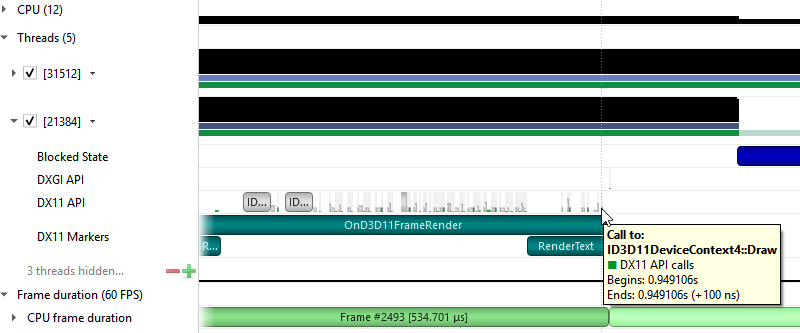
SLI Trace
Trace SLI queries and peer-to-peer transfers of D3D11 applications. Requires SLI hardware and an active SLI profile definition in the NVIDIA console.
7.2. D3D12 API Trace
Direct3D 12 is a low-overhead 3D graphics and compute API for Microsoft Windows. Information about Direct3D 12 can be found at the Direct3D 12 Programming Guide.
Nsight Systems can capture information about Direct3D 12 usage by the profiled process. This includes capturing the execution time of D3D12 API functions, corresponding workloads executed on the GPU, performance markers, and frame durations.

The Command List Creation row displays time periods when command lists were being created. This enables developers to improve their application’s multi-threaded command list creation. Command list creation time period is measured between the call to ID3D12GraphicsCommandList::Reset and the call to ID3D12GraphicsCommandList::Close.
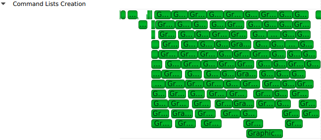
The GPU row shows an aggregated view of D3D12 API calls and GPU workloads. Note that not all D3D12 API calls are logged.
A Command Queue row is displayed for each D3D12 command queue created by the profiled application. The row’s header displays the queue's running index and its type (Direct, Compute, Copy).
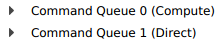
The DX12 API Memory Ops row displays all API memory operations and non-persistent resource mappings. Event ranges in the row are color-coded by the heap type they belong to (Default, Readback, Upload, Custom, or CPU-Visible VRAM), with usage warnings highlighted in yellow. A breakdown of the operations can be found by expanding the row to show rows for each individual heap type.
The following operations and warnings are shown:
-
Calls to ID3D12Device::CreateCommittedResource, ID3D12Device4::CreateCommittedResource1, and ID3D12Device8::CreateCommittedResource2
-
A warning will be reported if D3D12_HEAP_FLAG_CREATE_NOT_ZEROED is not set in the method's HeapFlags parameter
-
-
Calls to ID3D12Device::CreateHeap and ID3D12Device4::CreateHeap1
-
A warning will be reported if D3D12_HEAP_FLAG_CREATE_NOT_ZEROED is not set in the Flags field of the method's pDesc parameter
-
-
Calls to ID3D12Resource::ReadFromSubResource
-
A warning will be reported if the read is to a D3D12_CPU_PAGE_PROPERTY_WRITE_COMBINE CPU page or from a D3D12_HEAP_TYPE_UPLOAD resource
-
-
Calls to ID3D12Resource::WriteToSubResource
-
A warning will be reported if the write is from a D3D12_CPU_PAGE_PROPERTY_WRITE_BACK CPU page or to a D3D12_HEAP_TYPE_READBACK resource
-
-
Calls to ID3D12Resource::Map and ID3D12Resource::Unmap will be matched into [Map, Unmap] ranges for non-persistent mappings. If a mapping range is nested, only the most external range (reference count = 1) will be shown.
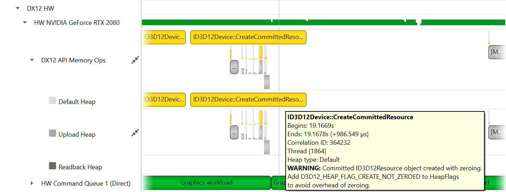
The API row displays time periods where ID3D12CommandQueue::ExecuteCommandLists was called. The GPU Workload row displays time periods where workloads were executed by the GPU. The workload’s type (Graphics, Compute, Copy, etc.) is displayed on the bar representing the workload’s GPU execution.
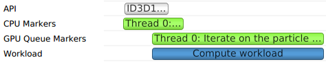
In addition, you can see the PIX command queue CPU-side performance markers, GPU-side performance markers and the GPU Command List performance markers, each in their row.

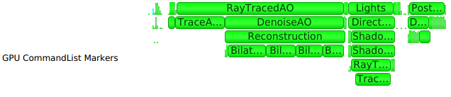
Clicking on a GPU workload highlights the corresponding ID3D12CommandQueue::ExecuteCommandLists, ID3D12GraphicsCommandList::Reset and ID3D12GraphicsCommandList::Close API calls, and vice versa.
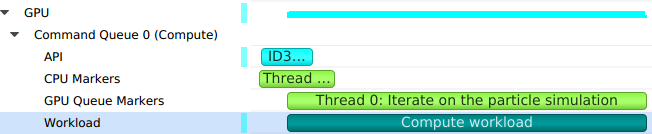
-
The CPU thread pushing a signal command and fence value into the command queue. This is displayed on the DX12 Synchronization sub-row of the calling thread.
-
The GPU executing that command, setting the fence value and signaling the fence. This is displayed on the GPU Queue Synchronization sub-row.
-
The CPU thread calling a Win32 wait API to block-wait until the fence is signaled. This is displayed on the Thread's OS runtime libraries row.
Clicking one of these will highlight it and the corresponding other two calls.
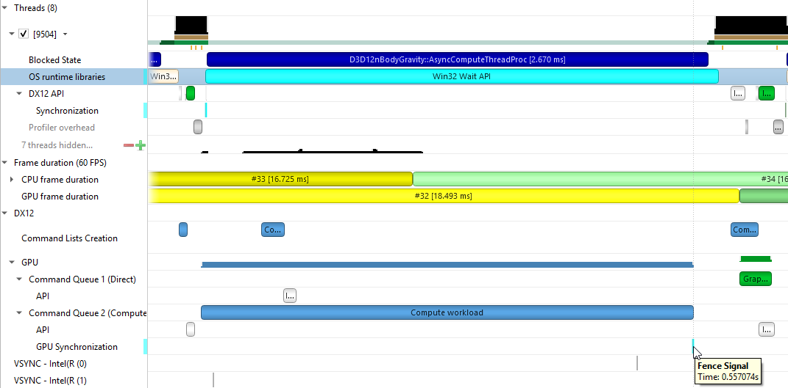
8. WDDM Queues
The Windows Display Driver Model (WDDM) architecture uses queues to send work packets from the CPU to the GPU. Each D3D device in each process is associated with one or more contexts. Graphics, compute, and copy commands that the profiled application uses are associated with a context, batched in a command buffer, and pushed into the relevant queue associated with that context.
Nsight Systems can capture the state of these queues during the trace session.
Enabling the "Collect additional range of ETW events" option will also capture extended DxgKrnl events such as context status, allocations, sync wait, signal events, etc.
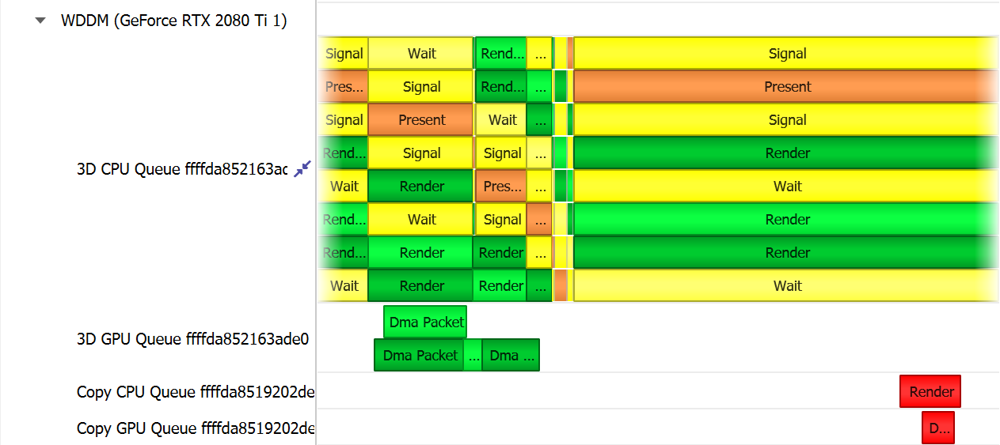
-
Render
-
Deferred
-
System
-
MMIOFlip
-
Wait
-
Signal
-
Device
-
Software
It may also be marked as a Present buffer, indicating that the application has finished rendering and requests to display the source surface.
See the Microsoft documentation for the WDDM architecture and the DXGKETW_QUEUE_PACKET_TYPE enumeration.
To retain the .etl trace files captured, so that they can be viewed in other tools (e.g. GPUView), change the "Save ETW log files in project folder" option under "Profile Behavior" in Nsight Systems's global Options dialog. The .etl files will appear in the same folder as the .nsys-rep file, accessible by right-clicking the report in the Project Explorer and choosing "Show in Folder...". Data collected from each ETW provider will appear in its own .etl file, and an additional .etl file named "Report XX-Merged-*.etl", containing the events from all captured sources, will be created as well.
9. Vulkan API Trace
9.1. Vulkan Overview
Vulkan is a low-overhead, cross-platform 3D graphics and compute API, targeting a wide variety of devices from PCs to mobile phones and embedded platforms. The Vulkan API is defined by the Khronos Group. Information about Vulkan and the Khronos Group can be found at the Khronos Vulkan Site.
Nsight Systems can capture information about Vulkan usage by the profiled process. This includes capturing the execution time of Vulkan API functions, corresponding GPU workloads, debug util labels, and frame durations. Vulkan profiling is supported on both Windows and x86 Linux operating systems.
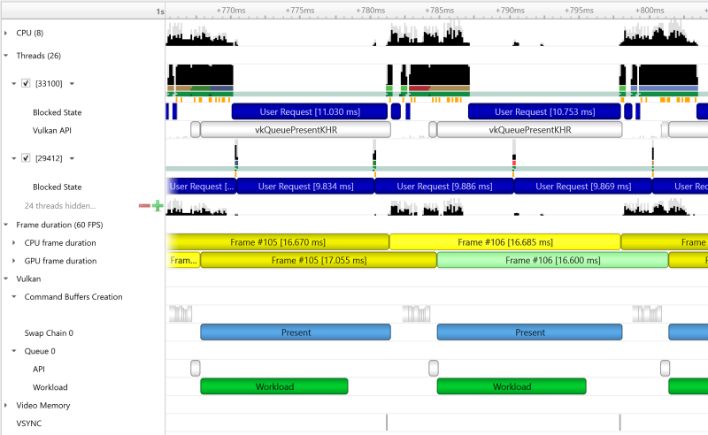
The Command Buffer Creation row displays time periods when command buffers were being created. This enables developers to improve their application’s multi-threaded command buffer creation. Command buffer creation time period is measured between the call to vkBeginCommandBuffer and the call to vkEndCommandBuffer.
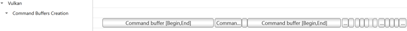
The Swap chains row displays the available swap chains and the time periods where vkQueuePresentKHR was executed on each swap chain.
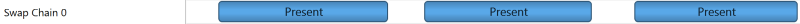
A Queue row is displayed for each Vulkan queue created by the profiled application. The API sub-row displays time periods where vkQueueSubmit was called. The GPU Workload sub-row displays time periods where workloads were executed by the GPU.
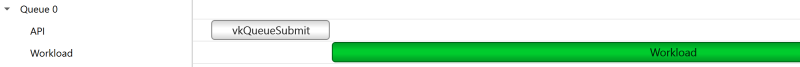
In addition, you can see Vulkan debug util labels on both the CPU and the GPU.
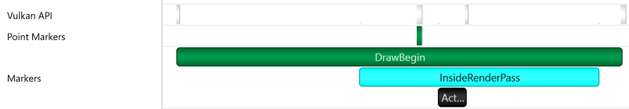
Clicking on a GPU workload highlights the corresponding vkQueueSubmit call, and vice versa.
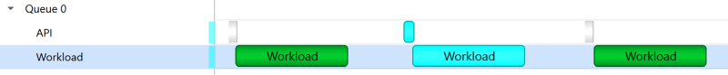
9.2. Pipeline Creation Feedback
When tracing target application calls to Vulkan pipeline creation APIs, Nsight Systems leverages the Pipeline Creation Feedback extension to collect more details about the duration of individual pipeline creation stages.
See Pipeline Creation Feedback extension for details about this extension.
Vulkan pipeline creation feedback is available on NVIDIA driver release 435 or later.
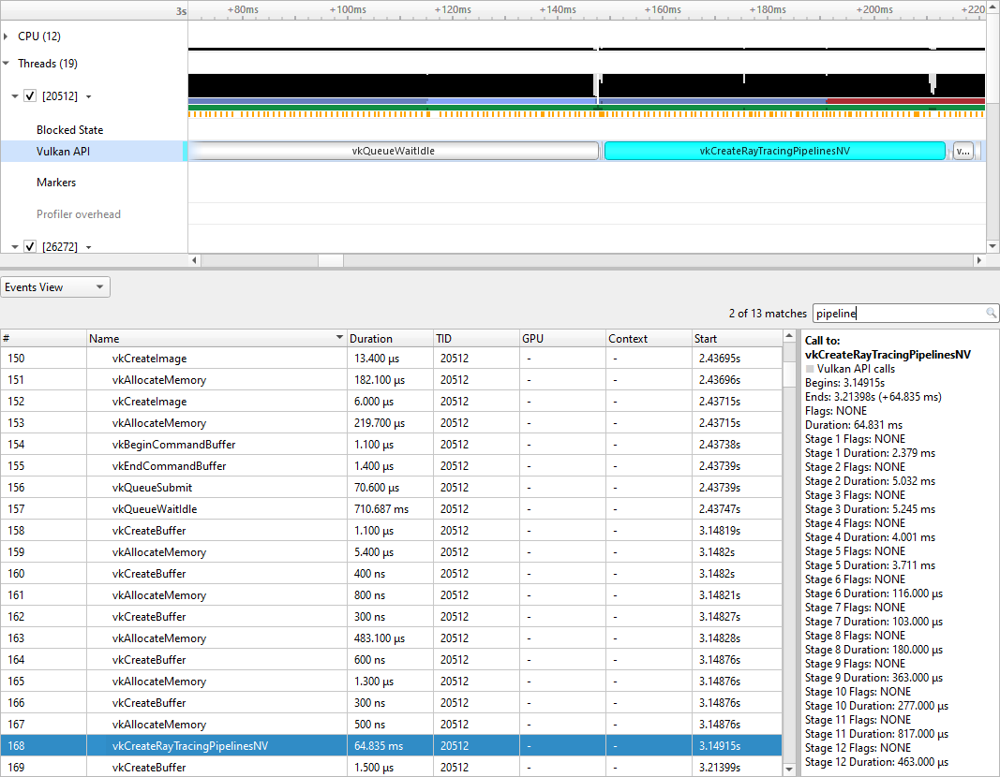
9.3. Vulkan GPU Trace Notes
-
Vulkan GPU trace is available only when tracing apps that use NVIDIA GPUs.
-
The endings of Vulkan Command Buffers execution ranges on Compute and Transfer queues may appear earlier on the timeline than their actual occurrence.
10. Stutter Analysis
10.1. FPS Overview
The Frame Duration section displays frame durations on both the CPU and the GPU.

-
Number of CPU frames shown of the total number captured
-
Average, minimal, and maximal CPU frame time of the currently displayed time range
-
Average FPS value for the currently displayed frames
-
The 99th percentile value of the frame lengths (such that only 1% of the frames in the range are longer than this value).

The stutter row highlights frames that are significantly longer than the other frames in their immediate vicinity.
The stutter row uses an algorithm that compares the duration of each frame to the median duration of the surrounding 19 frames. Duration difference under 4 milliseconds is never considered a stutter, to avoid cluttering the display with frames whose absolute stutter is small and not noticeable to the user.
-
Median duration is 10 ms. Frame with 13 ms time will not be reported (relative difference > 20%, absolute difference < 4 ms)
-
Median duration is 60 ms. Frame with 71 ms time will not be reported (relative difference < 20%, absolute difference > 4 ms)
-
Median duration is 60 ms. Frame with 80 ms is a stutter (relative difference > 20%, absolute difference > 4 ms, both conditions met)
OSC detection
The "19 frame window median" algorithm by itself may not work well with some cases of "oscillation" (consecutive fast and slow frames), resulting in some false positives. The median duration is not meaningful in cases of oscillation and can be misleading.
-
For every frame, calculate the median duration, 1st and 3rd quartiles of 19-frames window.
-
Calculate the delta and ratio between 1st and 3rd quartiles.
-
If the 90th percentile of 3rd – 1st quartile delta array > 4 ms AND the 90th percentile of 3rd/1st quartile array > 1.2 (120%) then mark the results with "OSC" text.
Right-clicking the Frame Duration row caption lets you choose the target frame rate (30, 60, 90 or custom frames per second).

By clicking the Customize FPS Display option, a customization dialog pops up. In the dialog, you can now define the frame duration threshold to customize the view of the potentially problematic frames. In addition, you can define the threshold for the stutter analysis frames.
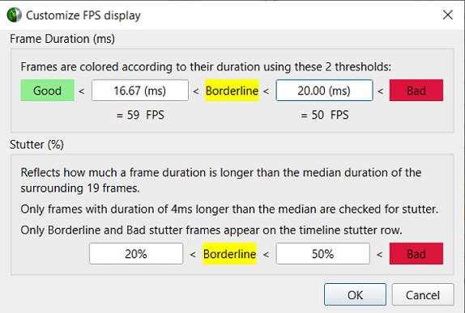
-
Green, the frame duration is shorter than required by the target FPS ratio.
-
Yellow, duration is slightly longer than required by the target FPS rate.
-
Red, duration far exceeds that required to maintain the target FPS rate.

-
The OpenGL frame boundaries are eglSwapBuffers/glXSwapBuffers/SwapBuffers calls.
-
The D3D11 and D3D12 frame boundaries are IDXGISwapChainX::Present calls.
-
The Vulkan frame boundaries are vkQueuePresentKHR calls.
-
The start time of the first GPU workload execution of this frame.
-
The start time of the first GPU workload execution of the next frame.
Reflex SDK
NVIDIA Reflex SDK is a series of NVAPI calls that allow applications to integrate the Ultra Low Latency driver feature more directly into their game to further optimize synchronization between simulation and rendering stages and lower the latency between user input and final image rendering. For more details about Reflex SDK, see Reflex SDK Site.
Nsight Systems will automatically capture NVAPI functions when either Direct3D 11, Direct3D 12, or Vulkan API trace are enabled.
-
RenderSubmit.
-
Simulation.
-
Present.
-
Driver.
-
OS Render Queue.
-
GPU Render.

10.2. Frame Health
The Frame Health row displays actions that took significantly a longer time during the current frame, compared to the median time of the same actions executed during the surrounding 19-frames. This is a great tool for detecting the reason for frame time stuttering. Such actions may be: shader compilation, present, memory mapping, and more. Nsight Systems measures the accumulated time of such actions in each frame. For example: calculating the accumulated time of shader compilations in each frame and comparing it to the accumulated time of shader compilations in the surrounding 19 frames.
Example of a Vulkan frame health row:


10.3. GPU Memory Utilization
The Memory Utilization row displays the amount of used local GPU memory and the commit limit for each GPU.
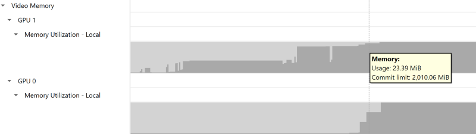Note that this is not the same as the CUDA kernel memory allocation graph, see CUDA GPU Memory Graph for that functionality.
10.4. Vertical Synchronization
The VSYNC rows display when the monitor's vertical synchronizations occur.
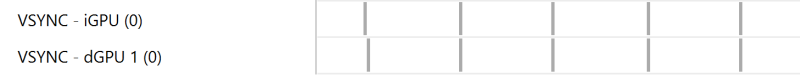
11. OpenMP Trace
Nsight Systems for Linux x86_64 and Power targets is capable of capturing information about OpenMP events. This functionality is built on the OpenMP Tools Interface (OMPT), full support is available only for runtime libraries supporting tools interface defined in OpenMP 5.0 or greater.
As an example, LLVM OpenMP runtime library partially implements tools interface. If you use PGI compiler <= 20.4 to build your OpenMP applications, add -mp=libomp switch to use LLVM OpenMP runtime and enable OMPT based tracing. If you use Clang, make sure the LLVM OpenMP runtime library you link to was compiled with tools interface enabled.
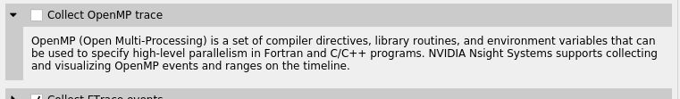
Only a subset of the OMPT callbacks are processed:
ompt_callback_parallel_begin ompt_callback_parallel_end ompt_callback_sync_region ompt_callback_task_create ompt_callback_task_schedule ompt_callback_implicit_task ompt_callback_master ompt_callback_reduction ompt_callback_task_create ompt_callback_cancel ompt_callback_mutex_acquire, ompt_callback_mutex_acquired ompt_callback_mutex_acquired, ompt_callback_mutex_released ompt_callback_mutex_released ompt_callback_work ompt_callback_dispatch ompt_callback_flush
Note:
The raw OMPT events are used to generate ranges indicating the runtime of OpenMP operations and constructs.
Example screenshot:
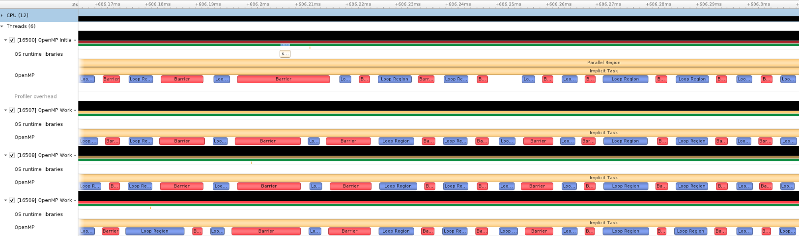
12. OS Runtime Libraries Trace
On Linux, OS runtime libraries can be traced to gather information about low-level userspace APIs. This traces the system call wrappers and thread synchronization interfaces exposed by the C runtime and POSIX Threads (pthread) libraries. This does not perform a complete runtime library API trace, but instead focuses on the functions that can take a long time to execute, or could potentially cause your thread be unscheduled from the CPU while waiting for an event to complete. OS runtime trace is not available for Windows targets.
-
Visualizing when the process is communicating with the hardware, controlling resources, performing multi-threading synchronization or interacting with the kernel scheduler.
-
Adding additional thread states by correlating how OS runtime libraries traces affect the thread scheduling:
-
Waiting — the thread is not scheduled on a CPU, it is inside of an OS runtime libraries trace and is believed to be waiting on the firmware to complete a request.
-
In OS runtime library function — the thread is scheduled on a CPU and inside of an OS runtime libraries trace. If the trace represents a system call, the process is likely running in kernel mode.
-
-
Collecting backtraces for long OS runtime libraries call. This provides a way to gather blocked-state backtraces, allowing you to gain more context about why the thread was blocked so long, yet avoiding unnecessary overhead for short events.
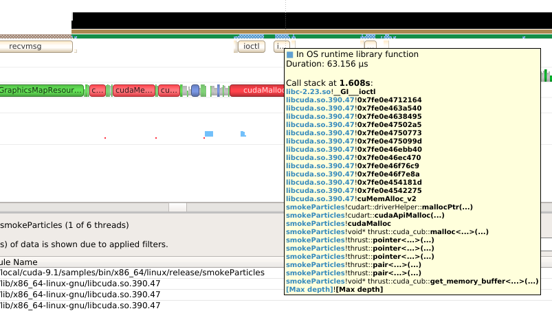
To enable OS runtime libraries tracing from Nsight Systems:
CLI — Use the -t, --trace option with the osrt parameter. See Command Line Options for more information.
GUI — Select the Collect OS runtime libraries trace checkbox.
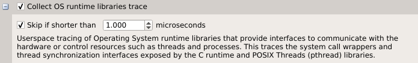
You can also use Skip if shorter than. This will skip calls shorter than the given threshold. Enabling this option will improve performances as well as reduce noise on the timeline. We strongly encourage you to skip OS runtime libraries call shorter than 1 μs.
12.1. Locking a Resource
The functions listed below receive a special treatment. If the tool detects that the resource is already acquired by another thread and will induce a blocking call, we always trace it. Otherwise, it will never be traced.
pthread_mutex_lock pthread_rwlock_rdlock pthread_rwlock_wrlock pthread_spin_lock sem_wait
Note that even if a call is determined as potentially blocking, there is a chance that it may not actually block after a few cycles have elapsed. The call will still be traced in this scenario.
12.2. Limitations
-
Nsight Systems only traces syscall wrappers exposed by the C runtime. It is not able to trace syscall invoked through assembly code.
-
Additional thread states, as well as backtrace collection on long calls, are only enabled if sampling is turned on.
-
It is not possible to configure the depth and duration threshold when collecting backtraces. Currently, only OS runtime libraries calls longer than 80 μs will generate a backtrace with a maximum of 24 frames. This limitation will be removed in a future version of the product.
-
It is required to compile your application and libraries with the -funwind-tables compiler flag in order for Nsight Systems to unwind the backtraces correctly.
12.3. OS Runtime Libraries Trace Filters
The OS runtime libraries tracing is limited to a select list of functions. It also depends on the version of the C runtime linked to the application.
12.4. OS Runtime Default Function List
Libc system call wrappers
accept accept4 acct alarm arch_prctl bind bpf brk chroot clock_nanosleep connect copy_file_range creat creat64 dup dup2 dup3 epoll_ctl epoll_pwait epoll_wait fallocate fallocate64 fcntl fdatasync flock fork fsync ftruncate futex ioctl ioperm iopl kill killpg listen membarrier mlock mlock2 mlockall mmap mmap64 mount move_pages mprotect mq_notify mq_open mq_receive mq_send mq_timedreceive mq_timedsend mremap msgctl msgget msgrcv msgsnd msync munmap nanosleep nfsservctl open open64 openat openat64 pause pipe pipe2 pivot_root poll ppoll prctl pread pread64 preadv preadv2 preadv64 process_vm_readv process_vm_writev pselect6 ptrace pwrite pwrite64 pwritev pwritev2 pwritev64 read readv reboot recv recvfrom recvmmsg recvmsg rt_sigaction rt_sigqueueinfo rt_sigsuspend rt_sigtimedwait sched_yield seccomp select semctl semget semop semtimedop send sendfile sendfile64 sendmmsg sendmsg sendto shmat shmctl shmdt shmget shutdown sigaction sigsuspend sigtimedwait socket socketpair splice swapoff swapon sync sync_file_range syncfs tee tgkill tgsigqueueinfo tkill truncate umount2 unshare uselib vfork vhangup vmsplice wait wait3 wait4 waitid waitpid write writev _sysctl
POSIX Threads
pthread_barrier_wait pthread_cancel pthread_cond_broadcast pthread_cond_signal pthread_cond_timedwait pthread_cond_wait pthread_create pthread_join pthread_kill pthread_mutex_lock pthread_mutex_timedlock pthread_mutex_trylock pthread_rwlock_rdlock pthread_rwlock_timedrdlock pthread_rwlock_timedwrlock pthread_rwlock_tryrdlock pthread_rwlock_trywrlock pthread_rwlock_wrlock pthread_spin_lock pthread_spin_trylock pthread_timedjoin_np pthread_tryjoin_np pthread_yield sem_timedwait sem_trywait sem_wait
I/O
aio_fsync aio_fsync64 aio_suspend aio_suspend64 fclose fcloseall fflush fflush_unlocked fgetc fgetc_unlocked fgets fgets_unlocked fgetwc fgetwc_unlocked fgetws fgetws_unlocked flockfile fopen fopen64 fputc fputc_unlocked fputs fputs_unlocked fputwc fputwc_unlocked fputws fputws_unlocked fread fread_unlocked freopen freopen64 ftrylockfile fwrite fwrite_unlocked getc getc_unlocked getdelim getline getw getwc getwc_unlocked lockf lockf64 mkfifo mkfifoat posix_fallocate posix_fallocate64 putc putc_unlocked putwc putwc_unlocked
Miscellaneous
forkpty popen posix_spawn posix_spawnp sigwait sigwaitinfo sleep system usleep
13. NVTX Trace
The NVIDIA Tools Extension Library (NVTX) is a powerful mechanism that allows users to manually instrument their application. Nsight Systems can then collect the information and present it on the timeline.
Nsight Systems supports version 3.0 of the NVTX specification.
The following features are supported:
-
Domains
nvtxDomainCreate(), nvtxDomainDestroy()
nvtxDomainRegisterString()
-
Push-pop ranges (nested ranges that start and end in the same thread).
nvtxRangePush(), nvtxRangePushEx()
nvtxRangePop()
nvtxDomainRangePushEx()
nvtxDomainRangePop()
-
Start-end ranges (ranges that are global to the process and are not restricted to a single thread)
nvtxRangeStart(), nvtxRangeStartEx()
nvtxRangeEnd()
nvtxDomainRangeStartEx()
nvtxDomainRangeEnd()
-
Marks
nvtxMark(), nvtxMarkEx()
nvtxDomainMarkEx()
-
Thread names
nvtxNameOsThread()
-
Categories
nvtxNameCategory()
nvtxDomainNameCategory()
To learn more about specific features of NVTX, please refer to the NVTX header file: nvToolsExt.h or the NVTX documentation.
-
Add #include "nvtx3/nvToolsExt.h" in your source code. The nvtx3 directory is located in the Nsight Systems package in the Target-<architecture>/nvtx/include directory and is available via github at http://github.com/NVIDIA/NVTX.
-
Add the following compiler flag: -ldl
-
Add calls to the NVTX API functions. For example, try adding nvtxRangePush("main") in the beginning of the main() function, and nvtxRangePop() just before the return statement in the end.
For convenience in C++ code, consider adding a wrapper that implements RAII (resource acquisition is initialization) pattern, which would guarantee that every range gets closed.
-
In the project settings, select the Collect NVTX trace checkbox.
-
If you are on Linux on Tegra, if launching the application manually, the following environment variables should be specified:
-
For ARMv7 processes:
NVTX_INJECTION32_PATH=/opt/nvidia/nsight_systems/libToolsInjection32.so
-
For ARMv8 processes:
NVTX_INJECTION64_PATH=/opt/nvidia/nsight_systems/libToolsInjection64.so
-
In addition, by enabling the "Insert NVTX Marker hotkey" option it is possible to add NVTX markers to a running non-console applications by pressing the F11 key. These will appear in the report under the NVTX Domain named "HotKey markers".
Typically calls to NVTX functions can be left in the source code even if the application is not being built for profiling purposes, since the overhead is very low when the profiler is not attached.
NVTX is not intended to annotate very small pieces of code that are being called very frequently. A good rule of thumb to use: if code being annotated usually takes less than 1 microsecond to execute, adding an NVTX range around this code should be done carefully.
Note:
Range annotations should be matched carefully. If many ranges are opened but not closed, Nsight Systems has no meaningful way to visualize it. A rule of thumb is to not have more than a couple dozen ranges open at any point in time. Nsight Systems does not support reports with many unclosed ranges.
NVTX Domains and Categories
NVTX domains enable scoping of annotations. Unless specified differently, all events and annotations are in the default domain. Additionally, categories can be used to group events.
Nsight Systems gives the user the ability to include or exclude NVTX events from a particular domain. This can be especially useful if you are profiling across multiple libraries and are only interested in nvtx events from some of them.
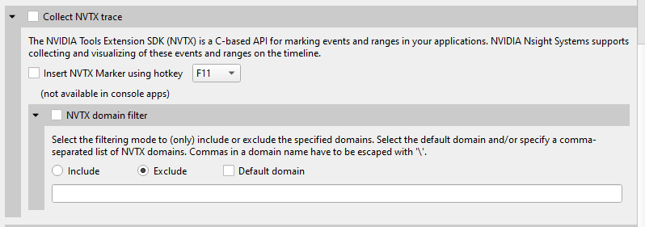
This functionality is also available from the CLI. See the CLI documentation for --nvtx-domain-include and --nvtx-domain-exclude for more details.
Categories that are set in by the user will be recognized and displayed in the GUI.
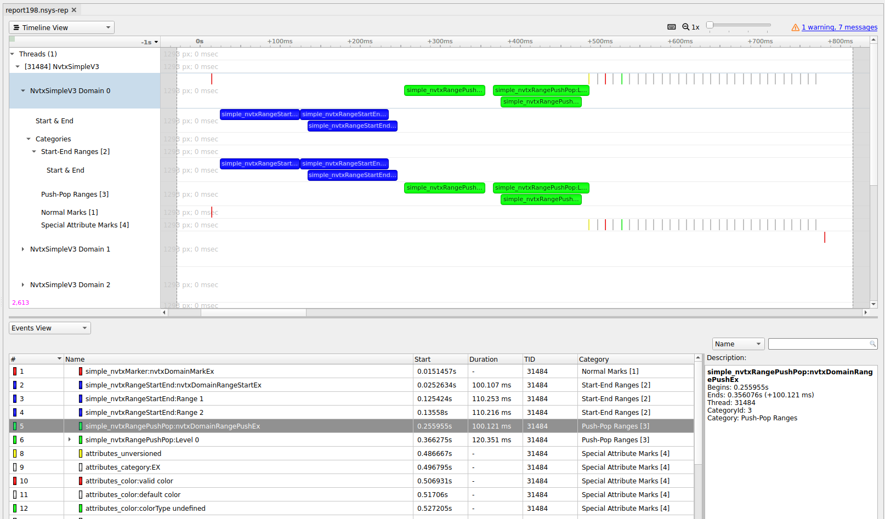
14. CUDA Trace
Nsight Systems is capable of capturing information about CUDA execution in the profiled process.
-
CUDA API trace — trace of CUDA Runtime and CUDA Driver calls made by the application.
-
CUDA Runtime calls typically start with cuda prefix (e.g. cudaLaunch).
-
CUDA Driver calls typically start with cu prefix (e.g. cuDeviceGetCount).
-
-
CUDA workload trace — trace of activity happening on the GPU, which includes memory operations (e.g., Host-to-Device memory copies) and kernel executions. Within the threads that use the CUDA API, additional child rows will appear in the timeline tree.
-
On Nsight Systems Workstation Edition, cuDNN and cuBLAS API tracing and OpenACC tracing.
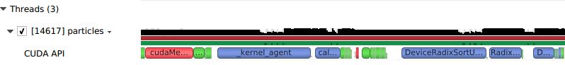
Near the bottom of the timeline row tree, the GPU node will appear and contain a CUDA node. Within the CUDA node, each CUDA context used within the process will be shown along with its corresponding CUDA streams. Steams will contain memory operations and kernel launches on the GPU. Kernel launches are represented by blue, while memory transfers are displayed in red.
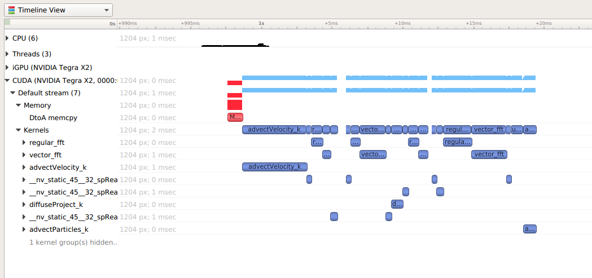
The easiest way to capture CUDA information is to launch the process from Nsight Systems, and it will setup the environment for you. To do so, simply set up a normal launch and select the Collect CUDA trace checkbox.
For Nsight Systems Workstation Edition this looks like:
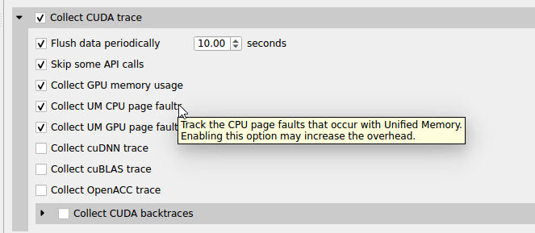
For Nsight Systems Embedded Platforms Edition this looks like:
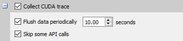
Additional configuration parameters are available:
-
Collect backtraces for API calls longer than X seconds - turns on collection of CUDA API backtraces and sets the minimum time a CUDA API event must take before its backtraces are collected. Setting this value too low can cause high application overhead and seriously increase the size of your results file.
-
Flush data periodically — specifies the period after which an attempt to flush CUDA trace data will be made. Normally, in order to collect full CUDA trace, the application needs to finalize the device used for CUDA work (call cudaDeviceReset(), and then let the application gracefully exit (as opposed to crashing).
This option allows flushing CUDA trace data even before the device is finalized. However, it might introduce additional overhead to a random CUDA Driver or CUDA Runtime API call.
-
Skip some API calls — avoids tracing insignificant CUDA Runtime API calls (namely, cudaConfigureCall(), cudaSetupArgument(), cudaHostGetDevicePointers()). Not tracing these functions allows Nsight Systems to significantly reduce the profiling overhead, without losing any interesting data. (See CUDA Trace Filters, below)
-
Collect GPU Memory Usage - collects information used to generate a graph of CUDA allocated memory across time. Note that this will increase overhead. See section on CUDA GPU Memory Allocation Graph below.
-
Collect Unified Memory CPU page faults - collects information on page faults that occur when CPU code tries to access a memory page that resides on the device. See section on Unified Memory CPU Page Faults in the Unified Memory Transfer Trace documentation below.
-
Collect Unified Memory GPU page faults - collects information on page faults that occur when GPU code tries to access a memory page that resides on the CPU. See section on Unified Memory GPU Page Faults in the Unified Memory Transfer Trace documentation below.
-
For Nsight Systems Workstation Edition, Collect cuDNN trace, Collect cuBLAS trace, Collect OpenACC trace - selects which (if any) extra libraries that depend on CUDA to trace.
OpenACC versions 2.0, 2.5, and 2.6 are supported when using PGI runtime version 15.7 or greater and not compiling statically. In order to differentiate constructs, a PGI runtime of 16.1 or later is required. Note that Nsight Systems Workstation Edition does not support the GCC implementation of OpenACC at this time.
-
For Nsight Systems Embedded Platforms Edition if desired, the target application can be manually set up to collect CUDA trace. To capture information about CUDA execution, the following requirements should be satisfied:
-
The profiled process should be started with the specified environment variable, depending on the architecture of the process:
-
For ARMv7 (32-bit) processes: CUDA_INJECTION32_PATH, which should point to the injection library:
/opt/nvidia/nsight_systems/libToolsInjection32.so
-
For ARMv8 (64-bit) processes: CUDA_INJECTION64_PATH, which should point to the injection library:
/opt/nvidia/nsight_systems/libToolsInjection64.so
-
-
If the application is started by Nsight Systems, all required environment variables will be set automatically.
-
Please note that if your application crashes before all collected CUDA trace data has been copied out, some or all data might be lost and not present in the report.
14.1. CUDA GPU Memory Allocation Graph
When the Collect GPU Memory Usage option is selected from the Collect CUDA trace option set, Nsight Systems will track CUDA GPU memory allocations and deallocations and present a graph of this information in the timeline. This is not the same as the GPU memory graph generated during stutter analysis on the Windows target (see Stutter Memory Trace)
Below, in the report on the left, memory is allocated and freed during the collection. In the report on the right, memory is allocated, but not freed during the collection.
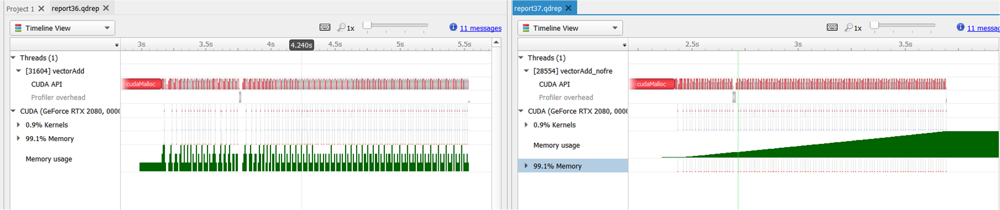
Here is another example, where allocations are happening on multiple GPUs
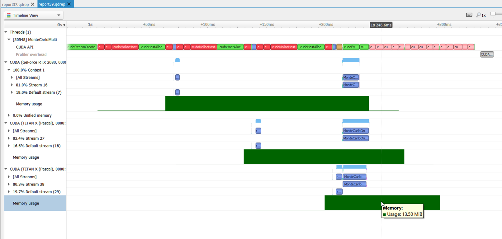
14.2. Unified Memory Transfer Trace
For Nsight Systems Workstation Edition, Unified Memory (also called Managed Memory) transfer trace is enabled automatically in Nsight Systems when CUDA trace is selected. It incurs no overhead in programs that do not perform any Unified Memory transfers. Data is displayed in the Managed Memory area of the timeline:
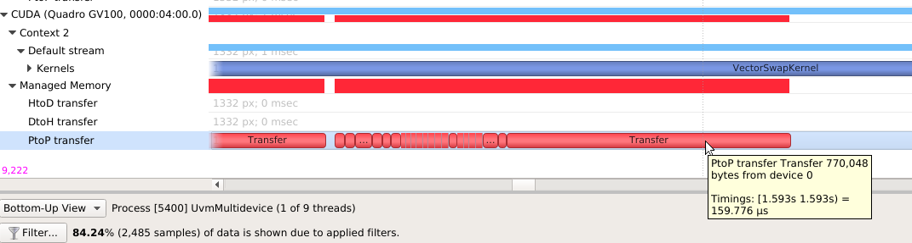
HtoD transfer indicates the CUDA kernel accessed managed memory that was residing on the host, so the kernel execution paused and transferred the data to the device. Heavy traffic here will incur performance penalties in CUDA kernels, so consider using manual cudaMemcpy operations from pinned host memory instead.
PtoP transfer indicates the CUDA kernel accessed managed memory that was residing on a different device, so the kernel execution paused and transferred the data to this device. Heavy traffic here will incur performance penalties, so consider using manual cudaMemcpyPeer operations to transfer from other devices' memory instead. The row showing these events is for the destination device -- the source device is shown in the tooltip for each transfer event.
DtoH transfer indicates the CPU accessed managed memory that was residing on a CUDA device, so the CPU execution paused and transferred the data to system memory. Heavy traffic here will incur performance penalties in CPU code, so consider using manual cudaMemcpy operations from pinned host memory instead.
Some Unified Memory transfers are highlighted with red to indicate potential performance issues:
-
Coherence
Unified Memory migration occurred to guarantee data coherence. SMs (streaming multiprocessors) stop until the migration completes. -
Eviction
Unified Memory migrated to the CPU because it was evicted to make room for another block of memory on the GPU. This happens due to memory overcommitment which is available on Linux with Compute Capability ≥ 6.
Unified Memory CPU Page Faults
The Unified Memory CPU page faults feature in Nsight Systems tracks the page faults that occur when CPU code tries to access a memory page that resides on the device.
Note:
Collecting Unified Memory CPU page faults can cause overhead of up to 70% in testing. Please use this functionality only when needed.
Unified Memory GPU Page Faults
The Unified Memory GPU page faults feature in Nsight Systems tracks the page faults that occur when GPU code tries to access a memory page that resides on the host.
Note:
Collecting Unified Memory GPU page faults can cause overhead of up to 70% in testing. Please use this functionality only when needed.
14.3. CUDA Default Function List for CLI
CUDA Runtime API
cudaBindSurfaceToArray cudaBindTexture cudaBindTexture2D cudaBindTextureToArray cudaBindTextureToMipmappedArray cudaConfigureCall cudaCreateSurfaceObject cudaCreateTextureObject cudaD3D10MapResources cudaD3D10RegisterResource cudaD3D10UnmapResources cudaD3D10UnregisterResource cudaD3D9MapResources cudaD3D9MapVertexBuffer cudaD3D9RegisterResource cudaD3D9RegisterVertexBuffer cudaD3D9UnmapResources cudaD3D9UnmapVertexBuffer cudaD3D9UnregisterResource cudaD3D9UnregisterVertexBuffer cudaDestroySurfaceObject cudaDestroyTextureObject cudaDeviceReset cudaDeviceSynchronize cudaEGLStreamConsumerAcquireFrame cudaEGLStreamConsumerConnect cudaEGLStreamConsumerConnectWithFlags cudaEGLStreamConsumerDisconnect cudaEGLStreamConsumerReleaseFrame cudaEGLStreamConsumerReleaseFrame cudaEGLStreamProducerConnect cudaEGLStreamProducerDisconnect cudaEGLStreamProducerReturnFrame cudaEventCreate cudaEventCreateFromEGLSync cudaEventCreateWithFlags cudaEventDestroy cudaEventQuery cudaEventRecord cudaEventRecord_ptsz cudaEventSynchronize cudaFree cudaFreeArray cudaFreeHost cudaFreeMipmappedArray cudaGLMapBufferObject cudaGLMapBufferObjectAsync cudaGLRegisterBufferObject cudaGLUnmapBufferObject cudaGLUnmapBufferObjectAsync cudaGLUnregisterBufferObject cudaGraphicsD3D10RegisterResource cudaGraphicsD3D11RegisterResource cudaGraphicsD3D9RegisterResource cudaGraphicsEGLRegisterImage cudaGraphicsGLRegisterBuffer cudaGraphicsGLRegisterImage cudaGraphicsMapResources cudaGraphicsUnmapResources cudaGraphicsUnregisterResource cudaGraphicsVDPAURegisterOutputSurface cudaGraphicsVDPAURegisterVideoSurface cudaHostAlloc cudaHostRegister cudaHostUnregister cudaLaunch cudaLaunchCooperativeKernel cudaLaunchCooperativeKernelMultiDevice cudaLaunchCooperativeKernel_ptsz cudaLaunchKernel cudaLaunchKernel_ptsz cudaLaunch_ptsz cudaMalloc cudaMalloc3D cudaMalloc3DArray cudaMallocArray cudaMallocHost cudaMallocManaged cudaMallocMipmappedArray cudaMallocPitch cudaMemGetInfo cudaMemPrefetchAsync cudaMemPrefetchAsync_ptsz cudaMemcpy cudaMemcpy2D cudaMemcpy2DArrayToArray cudaMemcpy2DArrayToArray_ptds cudaMemcpy2DAsync cudaMemcpy2DAsync_ptsz cudaMemcpy2DFromArray cudaMemcpy2DFromArrayAsync cudaMemcpy2DFromArrayAsync_ptsz cudaMemcpy2DFromArray_ptds cudaMemcpy2DToArray cudaMemcpy2DToArrayAsync cudaMemcpy2DToArrayAsync_ptsz cudaMemcpy2DToArray_ptds cudaMemcpy2D_ptds cudaMemcpy3D cudaMemcpy3DAsync cudaMemcpy3DAsync_ptsz cudaMemcpy3DPeer cudaMemcpy3DPeerAsync cudaMemcpy3DPeerAsync_ptsz cudaMemcpy3DPeer_ptds cudaMemcpy3D_ptds cudaMemcpyArrayToArray cudaMemcpyArrayToArray_ptds cudaMemcpyAsync cudaMemcpyAsync_ptsz cudaMemcpyFromArray cudaMemcpyFromArrayAsync cudaMemcpyFromArrayAsync_ptsz cudaMemcpyFromArray_ptds cudaMemcpyFromSymbol cudaMemcpyFromSymbolAsync cudaMemcpyFromSymbolAsync_ptsz cudaMemcpyFromSymbol_ptds cudaMemcpyPeer cudaMemcpyPeerAsync cudaMemcpyToArray cudaMemcpyToArrayAsync cudaMemcpyToArrayAsync_ptsz cudaMemcpyToArray_ptds cudaMemcpyToSymbol cudaMemcpyToSymbolAsync cudaMemcpyToSymbolAsync_ptsz cudaMemcpyToSymbol_ptds cudaMemcpy_ptds cudaMemset cudaMemset2D cudaMemset2DAsync cudaMemset2DAsync_ptsz cudaMemset2D_ptds cudaMemset3D cudaMemset3DAsync cudaMemset3DAsync_ptsz cudaMemset3D_ptds cudaMemsetAsync cudaMemsetAsync_ptsz cudaMemset_ptds cudaPeerRegister cudaPeerUnregister cudaStreamAddCallback cudaStreamAddCallback_ptsz cudaStreamAttachMemAsync cudaStreamAttachMemAsync_ptsz cudaStreamCreate cudaStreamCreateWithFlags cudaStreamCreateWithPriority cudaStreamDestroy cudaStreamQuery cudaStreamQuery_ptsz cudaStreamSynchronize cudaStreamSynchronize_ptsz cudaStreamWaitEvent cudaStreamWaitEvent_ptsz cudaThreadSynchronize cudaUnbindTexture
CUDA Primary API
cu64Array3DCreate cu64ArrayCreate cu64D3D9MapVertexBuffer cu64GLMapBufferObject cu64GLMapBufferObjectAsync cu64MemAlloc cu64MemAllocPitch cu64MemFree cu64MemGetInfo cu64MemHostAlloc cu64Memcpy2D cu64Memcpy2DAsync cu64Memcpy2DUnaligned cu64Memcpy3D cu64Memcpy3DAsync cu64MemcpyAtoD cu64MemcpyDtoA cu64MemcpyDtoD cu64MemcpyDtoDAsync cu64MemcpyDtoH cu64MemcpyDtoHAsync cu64MemcpyHtoD cu64MemcpyHtoDAsync cu64MemsetD16 cu64MemsetD16Async cu64MemsetD2D16 cu64MemsetD2D16Async cu64MemsetD2D32 cu64MemsetD2D32Async cu64MemsetD2D8 cu64MemsetD2D8Async cu64MemsetD32 cu64MemsetD32Async cu64MemsetD8 cu64MemsetD8Async cuArray3DCreate cuArray3DCreate_v2 cuArrayCreate cuArrayCreate_v2 cuArrayDestroy cuBinaryFree cuCompilePtx cuCtxCreate cuCtxCreate_v2 cuCtxDestroy cuCtxDestroy_v2 cuCtxSynchronize cuD3D10CtxCreate cuD3D10CtxCreateOnDevice cuD3D10CtxCreate_v2 cuD3D10MapResources cuD3D10RegisterResource cuD3D10UnmapResources cuD3D10UnregisterResource cuD3D11CtxCreate cuD3D11CtxCreateOnDevice cuD3D11CtxCreate_v2 cuD3D9CtxCreate cuD3D9CtxCreateOnDevice cuD3D9CtxCreate_v2 cuD3D9MapResources cuD3D9MapVertexBuffer cuD3D9MapVertexBuffer_v2 cuD3D9RegisterResource cuD3D9RegisterVertexBuffer cuD3D9UnmapResources cuD3D9UnmapVertexBuffer cuD3D9UnregisterResource cuD3D9UnregisterVertexBuffer cuEGLStreamConsumerAcquireFrame cuEGLStreamConsumerConnect cuEGLStreamConsumerConnectWithFlags cuEGLStreamConsumerDisconnect cuEGLStreamConsumerReleaseFrame cuEGLStreamProducerConnect cuEGLStreamProducerDisconnect cuEGLStreamProducerPresentFrame cuEGLStreamProducerReturnFrame cuEventCreate cuEventCreateFromEGLSync cuEventCreateFromNVNSync cuEventDestroy cuEventDestroy_v2 cuEventQuery cuEventRecord cuEventRecord_ptsz cuEventSynchronize cuGLCtxCreate cuGLCtxCreate_v2 cuGLInit cuGLMapBufferObject cuGLMapBufferObjectAsync cuGLMapBufferObjectAsync_v2 cuGLMapBufferObjectAsync_v2_ptsz cuGLMapBufferObject_v2 cuGLMapBufferObject_v2_ptds cuGLRegisterBufferObject cuGLUnmapBufferObject cuGLUnmapBufferObjectAsync cuGLUnregisterBufferObject cuGraphicsD3D10RegisterResource cuGraphicsD3D11RegisterResource cuGraphicsD3D9RegisterResource cuGraphicsEGLRegisterImage cuGraphicsGLRegisterBuffer cuGraphicsGLRegisterImage cuGraphicsMapResources cuGraphicsMapResources_ptsz cuGraphicsUnmapResources cuGraphicsUnmapResources_ptsz cuGraphicsUnregisterResource cuGraphicsVDPAURegisterOutputSurface cuGraphicsVDPAURegisterVideoSurface cuInit cuLaunch cuLaunchCooperativeKernel cuLaunchCooperativeKernelMultiDevice cuLaunchCooperativeKernel_ptsz cuLaunchGrid cuLaunchGridAsync cuLaunchKernel cuLaunchKernel_ptsz cuLinkComplete cuLinkCreate cuLinkCreate_v2 cuLinkDestroy cuMemAlloc cuMemAllocHost cuMemAllocHost_v2 cuMemAllocManaged cuMemAllocPitch cuMemAllocPitch_v2 cuMemAlloc_v2 cuMemFree cuMemFreeHost cuMemFree_v2 cuMemGetInfo cuMemGetInfo_v2 cuMemHostAlloc cuMemHostAlloc_v2 cuMemHostRegister cuMemHostRegister_v2 cuMemHostUnregister cuMemPeerRegister cuMemPeerUnregister cuMemPrefetchAsync cuMemPrefetchAsync_ptsz cuMemcpy cuMemcpy2D cuMemcpy2DAsync cuMemcpy2DAsync_v2 cuMemcpy2DAsync_v2_ptsz cuMemcpy2DUnaligned cuMemcpy2DUnaligned_v2 cuMemcpy2DUnaligned_v2_ptds cuMemcpy2D_v2 cuMemcpy2D_v2_ptds cuMemcpy3D cuMemcpy3DAsync cuMemcpy3DAsync_v2 cuMemcpy3DAsync_v2_ptsz cuMemcpy3DPeer cuMemcpy3DPeerAsync cuMemcpy3DPeerAsync_ptsz cuMemcpy3DPeer_ptds cuMemcpy3D_v2 cuMemcpy3D_v2_ptds cuMemcpyAsync cuMemcpyAsync_ptsz cuMemcpyAtoA cuMemcpyAtoA_v2 cuMemcpyAtoA_v2_ptds cuMemcpyAtoD cuMemcpyAtoD_v2 cuMemcpyAtoD_v2_ptds cuMemcpyAtoH cuMemcpyAtoHAsync cuMemcpyAtoHAsync_v2 cuMemcpyAtoHAsync_v2_ptsz cuMemcpyAtoH_v2 cuMemcpyAtoH_v2_ptds cuMemcpyDtoA cuMemcpyDtoA_v2 cuMemcpyDtoA_v2_ptds cuMemcpyDtoD cuMemcpyDtoDAsync cuMemcpyDtoDAsync_v2 cuMemcpyDtoDAsync_v2_ptsz cuMemcpyDtoD_v2 cuMemcpyDtoD_v2_ptds cuMemcpyDtoH cuMemcpyDtoHAsync cuMemcpyDtoHAsync_v2 cuMemcpyDtoHAsync_v2_ptsz cuMemcpyDtoH_v2 cuMemcpyDtoH_v2_ptds cuMemcpyHtoA cuMemcpyHtoAAsync cuMemcpyHtoAAsync_v2 cuMemcpyHtoAAsync_v2_ptsz cuMemcpyHtoA_v2 cuMemcpyHtoA_v2_ptds cuMemcpyHtoD cuMemcpyHtoDAsync cuMemcpyHtoDAsync_v2 cuMemcpyHtoDAsync_v2_ptsz cuMemcpyHtoD_v2 cuMemcpyHtoD_v2_ptds cuMemcpyPeer cuMemcpyPeerAsync cuMemcpyPeerAsync_ptsz cuMemcpyPeer_ptds cuMemcpy_ptds cuMemcpy_v2 cuMemsetD16 cuMemsetD16Async cuMemsetD16Async_ptsz cuMemsetD16_v2 cuMemsetD16_v2_ptds cuMemsetD2D16 cuMemsetD2D16Async cuMemsetD2D16Async_ptsz cuMemsetD2D16_v2 cuMemsetD2D16_v2_ptds cuMemsetD2D32 cuMemsetD2D32Async cuMemsetD2D32Async_ptsz cuMemsetD2D32_v2 cuMemsetD2D32_v2_ptds cuMemsetD2D8 cuMemsetD2D8Async cuMemsetD2D8Async_ptsz cuMemsetD2D8_v2 cuMemsetD2D8_v2_ptds cuMemsetD32 cuMemsetD32Async cuMemsetD32Async_ptsz cuMemsetD32_v2 cuMemsetD32_v2_ptds cuMemsetD8 cuMemsetD8Async cuMemsetD8Async_ptsz cuMemsetD8_v2 cuMemsetD8_v2_ptds cuMipmappedArrayCreate cuMipmappedArrayDestroy cuModuleLoad cuModuleLoadData cuModuleLoadDataEx cuModuleLoadFatBinary cuModuleUnload cuStreamAddCallback cuStreamAddCallback_ptsz cuStreamAttachMemAsync cuStreamAttachMemAsync_ptsz cuStreamBatchMemOp cuStreamBatchMemOp_ptsz cuStreamCreate cuStreamCreateWithPriority cuStreamDestroy cuStreamDestroy_v2 cuStreamSynchronize cuStreamSynchronize_ptsz cuStreamWaitEvent cuStreamWaitEvent_ptsz cuStreamWaitValue32 cuStreamWaitValue32_ptsz cuStreamWaitValue64 cuStreamWaitValue64_ptsz cuStreamWriteValue32 cuStreamWriteValue32_ptsz cuStreamWriteValue64 cuStreamWriteValue64_ptsz cuSurfObjectCreate cuSurfObjectDestroy cuSurfRefCreate cuSurfRefDestroy cuTexObjectCreate cuTexObjectDestroy cuTexRefCreate cuTexRefDestroy cuVDPAUCtxCreate cuVDPAUCtxCreate_v2
14.4. cuDNN Function List for X86 CLI
cuDNN API functions
cudnnActivationBackward cudnnActivationBackward_v3 cudnnActivationBackward_v4 cudnnActivationForward cudnnActivationForward_v3 cudnnActivationForward_v4 cudnnAddTensor cudnnBatchNormalizationBackward cudnnBatchNormalizationBackwardEx cudnnBatchNormalizationForwardInference cudnnBatchNormalizationForwardTraining cudnnBatchNormalizationForwardTrainingEx cudnnCTCLoss cudnnConvolutionBackwardBias cudnnConvolutionBackwardData cudnnConvolutionBackwardFilter cudnnConvolutionBiasActivationForward cudnnConvolutionForward cudnnCreate cudnnCreateAlgorithmPerformance cudnnDestroy cudnnDestroyAlgorithmPerformance cudnnDestroyPersistentRNNPlan cudnnDivisiveNormalizationBackward cudnnDivisiveNormalizationForward cudnnDropoutBackward cudnnDropoutForward cudnnDropoutGetReserveSpaceSize cudnnDropoutGetStatesSize cudnnFindConvolutionBackwardDataAlgorithm cudnnFindConvolutionBackwardDataAlgorithmEx cudnnFindConvolutionBackwardFilterAlgorithm cudnnFindConvolutionBackwardFilterAlgorithmEx cudnnFindConvolutionForwardAlgorithm cudnnFindConvolutionForwardAlgorithmEx cudnnFindRNNBackwardDataAlgorithmEx cudnnFindRNNBackwardWeightsAlgorithmEx cudnnFindRNNForwardInferenceAlgorithmEx cudnnFindRNNForwardTrainingAlgorithmEx cudnnFusedOpsExecute cudnnIm2Col cudnnLRNCrossChannelBackward cudnnLRNCrossChannelForward cudnnMakeFusedOpsPlan cudnnMultiHeadAttnBackwardData cudnnMultiHeadAttnBackwardWeights cudnnMultiHeadAttnForward cudnnOpTensor cudnnPoolingBackward cudnnPoolingForward cudnnRNNBackwardData cudnnRNNBackwardDataEx cudnnRNNBackwardWeights cudnnRNNBackwardWeightsEx cudnnRNNForwardInference cudnnRNNForwardInferenceEx cudnnRNNForwardTraining cudnnRNNForwardTrainingEx cudnnReduceTensor cudnnReorderFilterAndBias cudnnRestoreAlgorithm cudnnRestoreDropoutDescriptor cudnnSaveAlgorithm cudnnScaleTensor cudnnSoftmaxBackward cudnnSoftmaxForward cudnnSpatialTfGridGeneratorBackward cudnnSpatialTfGridGeneratorForward cudnnSpatialTfSamplerBackward cudnnSpatialTfSamplerForward cudnnTransformFilter cudnnTransformTensor cudnnTransformTensorEx
15. OpenACC Trace
Nsight Systems for Linux x86_64 and Power targets is capable of capturing information about OpenACC execution in the profiled process.
OpenACC versions 2.0, 2.5, and 2.6 are supported when using PGI runtime version 15.7 or later. In order to differentiate constructs (see tooltip below), a PGI runtime of 16.0 or later is required. Note that Nsight Systems does not support the GCC implementation of OpenACC at this time.
Under the CPU rows in the timeline tree, each thread that uses OpenACC will show OpenACC trace information. You can click on a OpenACC API call to see correlation with the underlying CUDA API calls (highlighted in teal):
If the OpenACC API results in GPU work, that will also be highlighted:
Hovering over a particular OpenACC construct will bring up a tooltip with details about that construct:
To capture OpenACC information from the Nsight Systems GUI, select the Collect OpenACC trace checkbox under Collect CUDA trace configurations. Note that turning on OpenACC tracing will also turn on CUDA tracing.
Please note that if your application crashes before all collected OpenACC trace data has been copied out, some or all data might be lost and not present in the report.
16. OpenGL Trace
OpenGL and OpenGL ES APIs can be traced to assist in the analysis of CPU and GPU interactions.
A few usage examples are:
-
Visualize how long eglSwapBuffers (or similar) is taking.
-
API trace can easily show correlations between thread state and graphics driver's behavior, uncovering where the CPU may be waiting on the GPU.
-
Spot bubbles of opportunity on the GPU, where more GPU workload could be created.
-
Use KHR_debug extension to trace GL events on both the CPU and GPU.
OpenGL trace feature in Nsight Systems consists of two different activities which will be shown in the CPU rows for those threads
-
CPU trace: interception of API calls that an application does to APIs (such as OpenGL, OpenGL ES, EGL, GLX, WGL, etc.).
-
GPU trace (or workload trace): trace of GPU workload (activity) triggered by use of OpenGL or OpenGL ES. Since draw calls are executed back-to-back, the GPU workload trace ranges include many OpenGL draw calls and operations in order to optimize performance overhead, rather than tracing each individual operation.
To collect GPU trace, the glQueryCounter() function is used to measure how much time batches of GPU workload take to complete.

Ranges defined by the KHR_debug calls are represented similarly to OpenGL API and OpenGL GPU workload trace. GPU ranges in this case represent incremental draw cost. They cannot fully account for GPUs that can execute multiple draw calls in parallel. In this case, Nsight Systems will not show overlapping GPU ranges.
16.1. OpenGL Trace Using Command Line
For general information on using the target CLI, see CLI Profiling on Linux. For the CLI, the functions that are traced are set to the following list:
glWaitSync glReadPixels glReadnPixelsKHR glReadnPixelsEXT glReadnPixelsARB glReadnPixels glFlush glFinishFenceNV glFinish glClientWaitSync glClearTexSubImage glClearTexImage glClearStencil glClearNamedFramebufferuiv glClearNamedFramebufferiv glClearNamedFramebufferfv glClearNamedFramebufferfi glClearNamedBufferSubDataEXT glClearNamedBufferSubData glClearNamedBufferDataEXT glClearNamedBufferData glClearIndex glClearDepthx glClearDepthf glClearDepthdNV glClearDepth glClearColorx glClearColorIuiEXT glClearColorIiEXT glClearColor glClearBufferuiv glClearBufferSubData glClearBufferiv glClearBufferfv glClearBufferfi glClearBufferData glClearAccum glClear glDispatchComputeIndirect glDispatchComputeGroupSizeARB glDispatchCompute glComputeStreamNV glNamedFramebufferDrawBuffers glNamedFramebufferDrawBuffer glMultiDrawElementsIndirectEXT glMultiDrawElementsIndirectCountARB glMultiDrawElementsIndirectBindlessNV glMultiDrawElementsIndirectBindlessCountNV glMultiDrawElementsIndirectAMD glMultiDrawElementsIndirect glMultiDrawElementsEXT glMultiDrawElementsBaseVertex glMultiDrawElements glMultiDrawArraysIndirectEXT glMultiDrawArraysIndirectCountARB glMultiDrawArraysIndirectBindlessNV glMultiDrawArraysIndirectBindlessCountNV glMultiDrawArraysIndirectAMD glMultiDrawArraysIndirect glMultiDrawArraysEXT glMultiDrawArrays glListDrawCommandsStatesClientNV glFramebufferDrawBuffersEXT glFramebufferDrawBufferEXT glDrawTransformFeedbackStreamInstanced glDrawTransformFeedbackStream glDrawTransformFeedbackNV glDrawTransformFeedbackInstancedEXT glDrawTransformFeedbackInstanced glDrawTransformFeedbackEXT glDrawTransformFeedback glDrawTexxvOES glDrawTexxOES glDrawTextureNV glDrawTexsvOES glDrawTexsOES glDrawTexivOES glDrawTexiOES glDrawTexfvOES glDrawTexfOES glDrawRangeElementsEXT glDrawRangeElementsBaseVertexOES glDrawRangeElementsBaseVertexEXT glDrawRangeElementsBaseVertex glDrawRangeElements glDrawPixels glDrawElementsInstancedNV glDrawElementsInstancedEXT glDrawElementsInstancedBaseVertexOES glDrawElementsInstancedBaseVertexEXT glDrawElementsInstancedBaseVertexBaseInstanceEXT glDrawElementsInstancedBaseVertexBaseInstance glDrawElementsInstancedBaseVertex glDrawElementsInstancedBaseInstanceEXT glDrawElementsInstancedBaseInstance glDrawElementsInstancedARB glDrawElementsInstanced glDrawElementsIndirect glDrawElementsBaseVertexOES glDrawElementsBaseVertexEXT glDrawElementsBaseVertex glDrawElements glDrawCommandsStatesNV glDrawCommandsStatesAddressNV glDrawCommandsNV glDrawCommandsAddressNV glDrawBuffersNV glDrawBuffersATI glDrawBuffersARB glDrawBuffers glDrawBuffer glDrawArraysInstancedNV glDrawArraysInstancedEXT glDrawArraysInstancedBaseInstanceEXT glDrawArraysInstancedBaseInstance glDrawArraysInstancedARB glDrawArraysInstanced glDrawArraysIndirect glDrawArraysEXT glDrawArrays eglSwapBuffersWithDamageKHR eglSwapBuffers glXSwapBuffers glXQueryDrawable glXGetCurrentReadDrawable glXGetCurrentDrawable glGetQueryObjectuivEXT glGetQueryObjectuivARB glGetQueryObjectuiv glGetQueryObjectivARB glGetQueryObjectiv
17. Custom ETW Trace
Use the custom ETW trace feature to enable and collect any manifest-based ETW log. The collected events are displayed on the timeline on dedicated rows for each event type.
Custom ETW is available on Windows target machines.
To retain the .etl trace files captured, so that they can be viewed in other tools (e.g. GPUView), change the "Save ETW log files in project folder" option under "Profile Behavior" in Nsight Systems's global Options dialog. The .etl files will appear in the same folder as the .nsys-rep file, accessible by right-clicking the report in the Project Explorer and choosing "Show in Folder...". Data collected from each ETW provider will appear in its own .etl file, and an additional .etl file named "Report XX-Merged-*.etl", containing the events from all captured sources, will be created as well.
GPU Metric Sampling
Overview
GPU performance metrics sampling is intended to identify performance limiters in applications using GPU for computations and graphics. It uses periodic sampling to gather performance metrics and detailed timing statistics associated with different GPU hardware units taking advantage of specialized hardware to capture this data in a single pass with minimal overhead.
Note: GPU metrics sampling will give you precise device level information, but it does not know which process or context is involved. GPU context switch trace provides less precise information, but will give you process and context information.
These metrics provide an overview of GPU efficiency over time within compute, graphics, and input/output (IO) activities such as:
- IO throughputs: PCIe, NVLink, and GPU memory bandwidth
- SM utilization: SMs activity, tensor core activity, instructions issued, warp occupancy, and unassigned warp slots
It is designed to help users answer the common questions:
- Is my GPU idle?
- Is my GPU full? Enough kernel grids size and streams? Are my SMs and warp slots full?
- Am I using TensorCores?
- Is my instruction rate high?
- Am I possibly blocked on IO, or number of warps, etc
Nsight Systems GPU metric sampling is only available for Linux targets on x86-64 and aarch64 and for Windows targets. It requires NVIDIA Turing architecture or newer.
- NVIDIA Turing architecture TU10x, TU11x - r440
- NVIDIA Ampere architecture GA100 - r450
- NVIDIA Ampere architecture GA100 MIG - r470 TRD1
- NVIDIA Ampere architecture GA10x - r455
Note: Elevated permissions are required. On Linux use sudo to elevate privileges. On Windows the user must run from an admin command prompt or accept the UAC escalation dialog. See Permissions Issues and Performance Counters for more information.
Launching GPU Metric Sampling from the CLI
- --gpu-metrics-device=[all,none,<index>] selects GPUs to sample (default is none)
- --gpu-metrics-set=[<index> or <alias>] selects metric set to use (default is the 1st suitable from the list)
- --gpu-metrics-frequency=[10,200000] selects sampling frequency in Hz (default is 10000)
# Must have elevated permissions (see http://nv/ERR_NVGPUCTRPERM) or be root (Linux) or administrator (Windows)
$ nsys profile --gpu-metrics-device=0 ./my-app$ nsys profile --gpu-metrics-device=help
Possible --gpu-metrics-device values are:
0: Quadro GV100 [0000:17:00.0]
1: GeForce RTX 2070 SUPER [0000:65:00.0]
all: Select all supported GPUs
none: Disable GPU metrics [Default]$ nsys profile --gpu-metrics-set=help
Possible --gpu-metrics-set values are:
[0] [tu10x] General Metrics for NVIDIA TU10x (any frequency)
[1] [tu11x] General Metrics for NVIDIA TU11x (any frequency)
[2] [ga100] General Metrics for NVIDIA GA100 (any frequency)
[3] [ga10x] General Metrics for NVIDIA GA10x (any frequency)
[4] [tu10x-gfxt] Graphics Throughput Metrics for NVIDIA TU10x (frequency >= 10kHz)
[5] [ga10x-gfxt] Graphics Throughput Metrics for NVIDIA GA10x (frequency >= 10kHz)
[6] [ga10x-gfxact] Graphics Async Compute Triage Metrics for NVIDIA GA10x (frequency >= 10kHz)--gpu-metrics-frequency=<value>
Launching GPU Metric Sampling from the GUI
For commands to launch GPU metric sampling from the CLI with examples, see the CLI documentation.
When launching analysis in Nsight Systems, select Collect GPU Metrics.
Select the GPUs dropdown to pick which GPUs you wish to sample.
Select the Metric set: dropdown to choose which available metric set you would like to sample.
Note that metric sets for GPUs that are not being sampled will be greyed out.
Sampling frequency
Sampling frequency can be selected from the range of 10 Hz - 200 kHz. The default value is 10 kHz.
The maximum sampling frequency without buffer overflow events depends on GPU (SM count), GPU load intensity, and overall system load. The bigger the chip and the higher the load, the lower the maximum sampling frequency without buffer overflow errors. If you need higher frequency, you can increase it until you get "Buffer overflow" message in the Diagnostics Summary report page. If you observe buffer overflow ranges on timeline, lower the sampling frequency.
Each metric set has a recommended sampling frequency range in its description. These ranges are approximate. If you observe Inconsistent Data ranges on timeline, please try closer to the recommended frequency.
Available Metrics
- GPC Clock Frequency -
gpc__cycles_elapsed.avg.per_second
The average GPC clock frequency in hertz. In public documentation the GPC clock may be called the "Application" clock, "Graphic" clock, "Base" clock, or "Boost" clock.
Note: The collection mechanism for GPC can result in a small fluctuation between samples.
- SYS Clock Frequency -
sys__cycles_elapsed.avg.per_second
The average SYS clock frequency in hertz. The GPU front end (command processor), copy engines, and the performance monitor run at the SYS clock. On Turing and NVIDIA GA100 GPUs the GPU metrics sampling frequency is based upon a period of SYS clocks (not time) so samples per second will vary with SYS clock. On NVIDIA GA10x GPUs the GPU metrics sampling rate is based upon a fixed frequency clock. The maximum sampling rate scales linearly with the SYS clock.
- GR Active -
gr__cycles_active.sum.pct_of_peak_sustained_elapsed
The percentage of cycles the graphics/compute engine is active. The graphics/compute engine is active if there is any work in the graphics pipe or if the compute pipe is processing work.
GA100 MIG - MIG is not yet supported. This counter will report the activity of the primary GR engine.
- Sync Compute In Flight -
gr__dispatch_cycles_active_queue_sync.avg.pct_of_peak_sustained_elapsed
The percentage of cycles with synchronous compute in flight.
CUDA: CUDA will only report synchronous queue in the case of MPS configured with 64 sub-context. Synchronous refers to work submitted in VEID=0.
Graphics: This will be true if any compute work submitted from the direct queue is in flight.
- Async Compute in Flight -
gr__dispatch_cycles_active_queue_async.avg.pct_of_peak_sustained_elapsed
The percentage of cycles with asynchronous compute in flight.
CUDA: CUDA will only report all compute work as asynchronous. The one exception is if MPS is configured and all 64 sub-context are in use. 1 sub-context (VEID=0) will report as synchronous.
Graphics: This will be true if any compute work submitted from a compute queue is in flight.
- Draw Started -
fe__draw_count.avg.pct_of_peak_sustained_elapsed
The ratio of draw calls issued to the graphics pipe to the maximum sustained rate of the graphics pipe.
Note:The percentage will always be very low as the front end can issue draw calls significantly faster than the pipe can execute the draw call. The rendering of this row will be changed to help indicate when draw calls are being issued.
- Dispatch Started -
gr__dispatch_count.avg.pct_of_peak_sustained_elapsed
The ratio of compute grid launches (dispatches) to the compute pipe to the maximum sustained rate of the compute pipe.
Note: The percentage will always be very low as the front end can issue grid launches significantly faster than the pipe can execute the draw call. The rendering of this row will be changed to help indicate when grid launches are being issued.
- Vertex/Tess/Geometry Warps in Flight -
tpc__warps_active_shader_vtg_realtime.avg.pct_of_peak_sustained_elapsed
The ratio of active vertex, geometry, tessellation, and meshlet shader warps resident on the SMs to the maximum number of warps per SM as a percentage.
- Pixel Warps in Flight -
tpc__warps_active_shader_ps_realtime.avg.pct_of_peak_sustained_elapsed
The ratio of active pixel/fragment shader warps resident on the SMs to the maximum number of warps per SM as a percentage.
- Compute Warps in Flight -
tpc__warps_active_shader_cs_realtime.avg.pct_of_peak_sustained_elapsed
The ratio of active compute shader warps resident on the SMs to the maximum number of warps per SM as a percentage.
- Active SM Unused Warp Slots -
tpc__warps_inactive_sm_active_realtime.avg.pct_of_peak_sustained_elapsed
The ratio of inactive warp slots on the SMs to the maximum number of warps per SM as a percentage. This is an indication of how many more warps may fit on the SMs if occupancy is not limited by a resource such as max warps of a shader type, shared memory, registers per thread, or thread blocks per SM.
- Idle SM Unused Warp Slots -
tpc__warps_inactive_sm_idle_realtime.avg.pct_of_peak_sustained_elapsed
The ratio of inactive warps slots due to idle SMs to the the maximum number of warps per SM as a percentage.
This is an indicator that the current workload on the SM is not sufficient to put work on all SMs. This can be due to:- CPU starving the GPU
- current work is too small to saturate the GPU
- current work is trailing off but blocking next work
- SM Active -
sm__cycles_active.avg.pct_of_peak_sustained_elapsed
The ratio of cycles SMs had at least 1 warp in flight (allocated on SM) to the number of cycles as a percentage. A value of 0 indicates all SMs were idle (no warps in flight). A value of 50% can indicate some gradient between all SMs active 50% of the sample period or 50% of SMs active 100% of the sample period.
- SM Issue -
sm__inst_executed_realtime.avg.pct_of_peak_sustained_elapsed
The ratio of cycles that SM sub-partitions (warp schedulers) issued an instruction to the number of cycles in the sample period as a percentage.
- Tensor Active -
sm__pipe_tensor_cycles_active_realtime.avg.pct_of_peak_sustained_elapsed
The ratio of cycles the SM tensor pipes were active issuing tensor instructions to the number of cycles in the sample period as a percentage.
TU102/4/6: This metric is not available on TU10x for periodic sampling. Please see Tensor Active/FP16 Active.
- Tensor Active / FP16 Active -
sm__pipe_shared_cycles_active_realtime.avg.pct_of_peak_sustained_elapsed
TU102/4/6 only
The ratio of cycles the SM tensor pipes or FP16x2 pipes were active issuing tensor instructions to the number of cycles in the sample period as a percentage.
- VRAM Bandwidth -
dram__throughput.avg.pct_of_peak_sustained_elapsed
The ratio of cycles the GPU device memory controllers were actively performing read or write operations to the number of cycles in the sample period as a percentage.
- NVLINK bytes received -
nvlrx__bytes.avg.pct_of_peak_sustained_elapsed
The ratio of bytes received on the NVLINK interface to the maximum number of bytes receivable in the sample period as a percentage. This value includes protocol overhead.
- NVLINK bytes transmitted -
nvltx__bytes.avg.pct_of_peak_sustained_elapsed
The ratio of bytes transmitted on the NVLINK interface to the maximum number of bytes transmittable in the sample period as a percentage. This value includes protocol overhead.
- PCIe Read Throughput -
pcie__read_bytes.avg.pct_of_peak_sustained_elapsed
The ratio of bytes received on the PCIe interface to the maximum number of bytes receivable in the sample period as a percentage. The theoretical value is calculated based upon the PCIe generation and number of lanes. This value includes protocol overhead.
- PCIe Write Throughput -
pcie__write_bytes.avg.pct_of_peak_sustained_elapsed
The ratio of bytes received on the PCIe interface to the maximum number of bytes receivable in the sample period as a percentage. The theoretical value is calculated based upon the PCIe generation and number of lanes. This value includes protocol overhead.
Exporting and Querying Data
It is possible to access the metric values for automated processing using the Nsight Systems CLI export capabilities.
An example that extracts values of "SM Active":
$ nsys export -t sqlite report.nsys-rep
$ sqlite3 report.sqlite "SELECT rawTimestamp, CAST(JSON_EXTRACT(data, '$.\"SM Active\"') as INTEGER) as value FROM GENERIC_EVENTS WHERE value != 0 LIMIT 10"
309277039|80
309301295|99
309325583|99
309349776|99
309373872|60
309397872|19
309421840|100
309446000|100
309470096|100
309494161|99
An overview of the contents of the data stored in each event (JSON):
$ sqlite3 report.sqlite "SELECT data FROM GENERIC_EVENTS LIMIT 1"
{
"Unallocated Warps in Active SM": "0",
"Compute Warps In Flight": "52",
"Pixel Warps In Flight": "0",
"Vertex\/Tess\/Geometry Warps In Flight": "0",
"Total SM Occupancy": "52",
"GR Active (GE\/CE)": "100",
"Sync Compute In Flight": "0",
"Async Compute In Flight": "98",
"NVLINK bytes received": "0",
"NVLINK bytes transmitted": "0",
"PCIe Rx Throughput": "0",
"PCIe Tx Throughput": "1",
"DRAM Read Throughput": "0",
"DRAM Write Throughput": "0",
"Tensor Active \/ FP16 Active": "0",
"SM Issue": "10",
"SM Active": "52"
}
Values are integer percentages (0..100)
Limitations
-
If metrics sets with NVLink are used but the links are not active, they may appear as fully utilized.
-
Only one tool that subscribes to these counters can be used at a time, therefore, Nsight Systems GPU metric sampling cannot be used at the same time as the following tools:
- Nsight Graphics
- Nsight Compute
- DCGM (Data Center GPU Manager)
Use the following command:
- dcgmi profile --pause
- dcgmi profile --resume
Or API:
- dcgmProfPause
- dcgmProfResume
- Non-NVIDIA products which use:
- CUPTI sampling used directly in the application. CUPTI trace is okay (although it will block Nsight Systems CUDA trace)
- DCGM library
- Nsight Systems limits the amount of memory that can be used to store GPU metrics sampling data. Analysis with higher sampling rates or on GPUs with more SMs has a risk of filling these buffers. This will lead to gaps with long samples on timeline. If you select that area on the timeline you will see that the counters will pause and remain at a steady state for a while. Future releases will reduce the frequency of this happening and better present these periods.
19. NVIDIA Video Codec SDK Trace
Nsight Systems for x86 Linux and Windows targets can trace calls from the NV Video Codec SDK. This software trace can be launched from the GUI or using the --trace nvvideo from the CLI
On the timeline, calls on the CPU to the NV Encoder API and NV Decoder API will be shown.

19.1. NV Encoder API Functions Traced by Default
NvEncodeAPICreateInstance
nvEncOpenEncodeSession
nvEncGetEncodeGUIDCount
nvEncGetEncodeGUIDs
nvEncGetEncodeProfileGUIDCount
nvEncGetEncodeProfileGUIDs
nvEncGetInputFormatCount
nvEncGetInputFormats
nvEncGetEncodeCaps
nvEncGetEncodePresetCount
nvEncGetEncodePresetGUIDs
nvEncGetEncodePresetConfig
nvEncGetEncodePresetConfigEx
nvEncInitializeEncoder
nvEncCreateInputBuffer
nvEncDestroyInputBuffer
nvEncCreateBitstreamBuffer
nvEncDestroyBitstreamBuffer
nvEncEncodePicture
nvEncLockBitstream
nvEncUnlockBitstream
nvEncLockInputBuffer
nvEncUnlockInputBuffer
nvEncGetEncodeStats
nvEndGetSequenceParams
nvEncRegisterAsyncEvent
nvEncUnregisterAsyncEvent
nvEncMapInputResource
nvEncUnmapInputResource
nvEncDestroyEncoder
nvEncInvalidateRefFrames
nvEncOpenEncodeSessionEx
nvEncRegisterResource
nvEncUnregisterResource
nvEncReconfigureEncoder
nvEncCreateMVBuffer
nvEncDestroyMVBuffer
nvEncRunMotionEstimationOnly
nvEncGetLastErrorString
nvEncSetIOCudaStreams
nvEncGetSequenceParamEx
19.2. NV Decoder API Functions Traced by Default
cuvidCreateVideoSource
cuvidCreateVideoSourceW
cuvidDestroyVideoSource
cuvidSetVideoSourceState
cudaVideoState
cuvidGetSourceVideoFormat
cuvidGetSourceAudioFormat
cuvidCreateVideoParser
cuvidParseVideoData
cuvidDestroyVideoParser
cuvidCreateDecoder
cuvidDestroyDecoder
cuvidDecodePicture
cuvidGetDecodeStatus
cuvidReconfigureDecoder
cuvidMapVideoFrame
cuvidUnmapVideoFrame
cuvidMapVideoFrame64
cuvidUnmapVideoFrame64
cuvidCtxLockCreate
cuvidCtxLockDestroy
cuvidCtxLock
cuvidCtxUnlock
19.3. NV JPEG API Functions Traced by Default
nvjpegBufferDeviceCreate
nvjpegBufferDeviceDestroy
nvjpegBufferDeviceRetrieve
nvjpegBufferPinnedCreate
nvjpegBufferPinnedDestroy
nvjpegBufferPinnedRetrieve
nvjpegCreate
nvjpegCreateEx
nvjpegCreateSimple
nvjpegDecode
nvjpegDecodeBatched
nvjpegDecodeBatchedEx
nvjpegDecodeBatchedInitialize
nvjpegDecodeBatchedPreAllocate
nvjpegDecodeBatchedSupported
nvjpegDecodeBatchedSupportedEx
nvjpegDecodeJpeg
nvjpegDecodeJpegDevice
nvjpegDecodeJpegHost
nvjpegDecodeJpegTransferToDevice
nvjpegDecodeParamsCreate
nvjpegDecodeParamsDestroy
nvjpegDecodeParamsSetAllowCMYK
nvjpegDecodeParamsSetOutputFormat
nvjpegDecodeParamsSetROI
nvjpegDecodeParamsSetScaleFactor
nvjpegDecoderCreate
nvjpegDecoderDestroy
nvjpegDecoderJpegSupported
nvjpegDecoderStateCreate
nvjpegDestroy
nvjpegEncodeGetBufferSize
nvjpegEncodeImage
nvjpegEncodeRetrieveBitstream
nvjpegEncodeRetrieveBitstreamDevice
nvjpegEncoderParamsCopyHuffmanTables
nvjpegEncoderParamsCopyMetadata
nvjpegEncoderParamsCopyQuantizationTables
nvjpegEncoderParamsCreate
nvjpegEncoderParamsDestroy
nvjpegEncoderParamsSetEncoding
nvjpegEncoderParamsSetOptimizedHuffman
nvjpegEncoderParamsSetQuality
nvjpegEncoderParamsSetSamplingFactors
nvjpegEncoderStateCreate
nvjpegEncoderStateDestroy
nvjpegEncodeYUV,(nvjpegHandle_t handle
nvjpegGetCudartProperty
nvjpegGetDeviceMemoryPadding
nvjpegGetImageInfo
nvjpegGetPinnedMemoryPadding
nvjpegGetProperty
nvjpegJpegStateCreate
nvjpegJpegStateDestroy
nvjpegJpegStreamCreate
nvjpegJpegStreamDestroy
nvjpegJpegStreamGetChromaSubsampling
nvjpegJpegStreamGetComponentDimensions
nvjpegJpegStreamGetComponentsNum
nvjpegJpegStreamGetFrameDimensions
nvjpegJpegStreamGetJpegEncoding
nvjpegJpegStreamParse
nvjpegJpegStreamParseHeader
nvjpegSetDeviceMemoryPadding
nvjpegSetPinnedMemoryPadding
nvjpegStateAttachDeviceBuffer
nvjpegStateAttachPinnedBuffer
20. Network Communication Profiling
Nsight Systems can be used to profiles several popular network communication protocols. To enable this, please select the Communication profiling options dropdown.
Then select the libraries you would like to trace:
20.1. MPI API Trace
For Linux x86_64 and Power targets, Nsight Systems is capable of capturing information about the MPI APIs executed in the profiled process. It has built-in API trace support only for the OpenMPI and MPICH implementations of MPI and only for a default list of synchronous APIs.
If you require more control over the list of traced APIs or if you are using a different MPI implementation, see github nvtx pmpi wrappers. You can use this documentation to generate a shared object to wrap a list of synchronous MPI APIs with NVTX using the MPI profiling interface (PMPI). If you set your LD_PRELOAD environment variable to the path of that object, Nsight Systems will capture and report the MPI API trace information when NVTX tracing is enabled.
MPI Communication Parameters
Nsight Systems can now get additional information about MPI communication parameters. For this initial release, the parameters are only visible in the mouseover tooltips or in the eventlog. This means that the data is only available via the GUI. Future versions of the tool will export this information into the SQLite data files for postrun analysis.
In order to fully interpret MPI communications, data for all ranks associated with a communication operation must be loaded into Nsight Systems.
Here is an example of MPI_COMM_WORLD data. This does not require any additional team data, since local rank is the same as global rank.
(Screenshot shows communication parameters for an MPI_Bcast call on rank 3)
When only part of an MPI communication is loaded into Nsight Systems the following information is available.
- Right-hand screenshot shows a reused communicator handle (last number increased).
- Encoding: MPI_COMM[*team size*]*global-group-root-rank*.*group-ID*
When all reports are loaded into Nsight Systems:
- World rank is shown in addition to group-local rank "(world rank X)"
- Encoding: MPI_COMM[*team size*]{rank0, rank1, ...}
- At most 8 ranks are shown (the numbers represent world ranks, the position in the list is the group-local rank)
NVTX tracing is automatically enabled when MPI trace is turned on.
20.2. OpenSHMEM Library Trace
If OpenSHMEM library trace is selected Nsight Systems will trace the subset of OpenSHMEM API functions that are most likely be involved in performance bottlenecks. To keep overhead low Nsight Systems does not trace all functions.
OpenSHMEM 1.5 Functions Not Traced
shmem_my_pe
shmem_n_pes
shmem_global_exit
shmem_pe_accessible
shmem_addr_accessible
shmem_ctx_{create,destroy,get_team}
shmem_global_exit
shmem_info_get_{version,name}
shmem_{my_pe,n_pes,pe_accessible,ptr}
shmem_query_thread
shmem_team_{create_ctx,destroy}
shmem_team_get_config
shmem_team_{my_pe,n_pes,translate_pe}
shmem_team_split_{2d,strided}
shmem_test*
20.3. UCX Library Trace
If UCX library trace is selected Nsight Systems will trace the subset of functions of the UCX protocol layer UCP that are most likely be involved in performance bottlenecks. To keep overhead low Nsight Systems does not trace all functions.
UCX functions traced:
ucp_am_send_nb[x]
ucp_am_recv_data_nbx
ucp_am_data_release
ucp_atomic_{add{32,64},cswap{32,64},fadd{32,64},swap{32,64}}
ucp_atomic_{post,fetch_nb,op_nbx}
ucp_cleanup
ucp_config_{modify,read,release}
ucp_disconnect_nb
ucp_dt_{create_generic,destroy}
ucp_ep_{create,destroy,modify_nb,close_nbx}
ucp_ep_flush[{_nb,_nbx}]
ucp_listener_{create,destroy,query,reject}
ucp_mem_{advise,map,unmap,query}
ucp_{put,get}[_nbi]
ucp_{put,get}_nb[x]
ucp_request_{alloc,cancel,check_status,is_completed}
ucp_rkey_{buffer_release,destroy,pack,ptr}
ucp_stream_data_release
ucp_stream_recv_{data_nb,request_test}
ucp_stream_{send,recv}_nb[x]
ucp_stream_worker_poll
ucp_tag_msg_recv_nb[x]
ucp_tag_probe_nb
ucp_tag_{send,recv}_nbr
ucp_tag_{send,recv}_nb[x]
ucp_tag_recv_request_test
ucp_tag_send_sync_nb[x]
ucp_worker_{create,destroy,get_address,get_efd,arm,fence,wait,signal,wait_mem}
ucp_worker_flush[{_nb,_nbx}]
ucp_worker_set_am_{handler,recv_handler}
UCX Functions Not Traced:
ucp_config_print
ucp_conn_request_query
ucp_context_{query,print_info}
ucp_get_version[_string]
ucp_ep_{close_nb,print_info,rkey_unpack}
ucp_mem_print_info
ucp_request_{test,free,release}
ucp_worker_{progress,query,release_address,print_info}
Additional API functions from other UCX layers may be added in a future version of the product.
20.4. NVIDIA NVSHMEM and NCCL Trace
The NVIDIA network communication libraries NVSHMEM and NCCL have been instrumented using NVTX annotations. To enable tracing these libraries in Nsight Systems, turn on NVTX tracing in the GUI or CLI. To enable the NVTX instrumentation of the NVSHMEM library, make sure that the environment variable NVSHMEM_NVTX is set properly, e.g. NVSHMEM_NVTX=common.
20.5. NIC Metric Sampling
This feature is experimental.
Overview
NVIDIA ConnectX smart network interface cards (smart NICs) offer advanced hardware offloads and accelerations for network operations. Viewing smart NICs metrics, on Nsight Systems timeline, enables developers to better understand their application’s network usage. Developers can use this information to optimize the application’s performance.
Examples
- The Bytes sent/msec and the Bytes
received/msec metrics enables identifying idle and busy NIC times.
- Developers may shift network operations from busy to idle times to reduce network congestion and latency.
- Developers can use idle NIC times to send additional data without reducing application performance.
- CNPs (congestion notification packets) received/sent metrics may explain network latencies. A developer seeing the time periods when the network was congested may rewrite his algorithm to avoid the observed congestions.
- Comparing the ratio between bytes sent and packets sent can give developers a hint about the average packet size their application is using. The larger the packet size, the higher the practical bandwidth.
Available Metrics
- Bytes sent - Number of bytes sent through all NIC ports.
- Packets sent - Number of packets sent through all NIC ports.
- Bytes received - Number of bytes received by all NIC ports.
- Packets received - Number of packets received by all NIC ports.
- CNPs sent - Number of congestion notification packets sent by the NIC.
- CNPs received - Number of congestion notification packets received and handled by the NIC.
Collecting NIC Metrics Using the Command Line
To collect NIC performance metric, using Nsight Systems CLI, add the --nic-metrics command line switch:
nsys profile --nic-metrics my_app
System Requirements
NIC metrics collection is supported on:
- NVIDIA ConnectX 3 boards or newer
- Linux x86_64 machines, having minimum Linux kernel 4.12 and minimum MLNX_OFED 4.1.
Limitations
- Nsight Systems 2021.5.1 only supports Infiniband metrics.
- Launch the following command, which will install all the required libraries in system directories:
21. Reading Your Report in GUI
21.1. Generating a New Report
Users can generate a new report by stopping a profiling session. If a profiling session has been canceled, a report will not be generated, and all collected data will be discarded.
A new .nsys-rep file will be created and put into the same directory as the project file (.qdproj).
21.3. Sharing a Report File
Report files (.nsys-rep) are self-contained and can be shared with other users of Nsight Systems. The only requirement is that the same or newer version of Nsight Systems is always used to open report files.
Project files (.qdproj) are currently not shareable, since they contain full paths to the report files.
To quickly navigate to the directory containing the report file, right click on it in the Project Explorer, and choose Show in folder... in the context menu.
21.4. Report Tab
While generating a new report or loading an existing one, a new tab will be created. The most important parts of the report tab are:
-
View selector — Allows switching between Analysis Summary, Timeline View, Diagnostics Summary, and Symbol Resolution Logs views.
-
Timeline — This is where all charts are displayed.
-
Function table — Located below the timeline, it displays statistical information about functions in the target application in multiple ways.
Additionally, the following controls are available:
-
Zoom slider — Allows you to vertically zoom the charts on the timeline.
21.5. Analysis Summary View
This view shows a summary of the profiling session. In particular, it is useful to review the project configuration used to generate this report. Information from this view can be selected and copied using the mouse cursor.
21.6. Timeline View
The timeline view consists of two main controls: the timeline at the top, and a bottom pane that contains the events view and the function table. In some cases, when sampling of a process has not been enabled, the function table might be empty and hidden.
The bottom view selector sets the view that is displayed in the bottom pane.
21.6.1. Timeline
Timeline is a versatile control that contains a tree-like hierarchy on the left, and corresponding charts on the right.
Contents of the hierarchy depend on the project settings used to collect the report. For example, if a certain feature has not been enabled, corresponding rows will not be show on the timeline.
nsys-ui.exe --screenshot filename.nsys-rep
To display trace events in the Events View right-click a timeline row and select the “Show in Events View” command. The events of the selected row and all of its sub-rows will be displayed in the Events View.
If a timeline row has been selected for display in the Events View then double-clicking a timeline item on that row will automatically scroll the content of the Events View to make the corresponding Events View item visible and select it.
Row Height
Several of the rows in the timeline use height as a way to model the percent utilization of resources. This gives the user insight into what is going on even when the timeline is zoomed all the way out.
In this picture you see that for kernel occupation there is a colored bar of variable height.
Nsight Systems calculates the average occupancy for the period of time represented by particular pixel width of screen. It then uses that average to set the top of the colored section. So, for instance, if 25% of that timeslice the kernel is active, the bar goes 25% of the distance to the top of the row.
In order to make the difference clear, if the percentage of the row height is non-zero, but would be represented by less than one vertical pixel, Nsight Systems displays it as one pixel high. The gray height represents the maximum usage in that time range.
This row height coding is used in the CPU utilization, thread and process occupancy, kernel occupancy, and memory transfer activity rows.
21.6.2. Events View
The Events View provides a tabular display of the trace events. The view contents can be searched and sorted.
Double-clicking an item in the Events View automatically focuses the Timeline View on the corresponding timeline item.
API calls, GPU executions, and debug markers that occurred within the boundaries of a debug marker are displayed nested to that debug marker. Multiple levels of nesting are supported.
Events view recognizes these types of debug markers:
-
NVTX
-
Vulkan VK_EXT_debug_marker markers, VK_EXT_debug_utils labels
-
PIX events and markers
-
OpenGL KHR_debug markers
You can copy and paste from the events view by highlighting rows, using Shift or Ctrl to enable multi-select. Right clicking on the selection will give you a copy option.
Pasting into text gives you a tab separated view:
Pasting into spreadsheet properly copies into rows and columns:
21.6.3. Function Table Modes
The function table can work in three modes:
-
Top-Down View — In this mode, expanding top-level functions provides information about the callee functions. One of the top-level functions is typically the main function of your application, or another entry point defined by the runtime libraries.
-
Bottom-Up View — This is a reverse of the Top-Down view. On the top level, there are functions directly hit by the sampling profiler. To explore all possible call chains leading to these functions, you need to expand the subtrees of the top-level functions.
-
Flat View — This view enumerates all functions ever observed by the profiler, even if they have never been directly hit, but just appeared somewhere on the call stack. This view typically provides a high-level overview of which parts of the code are CPU-intensive.
Each of the views helps understand particular performance issues of the application being profiled. For example:
-
When trying to find specific bottleneck functions that can be optimized, the Bottom-Up view should be used. Typically, the top few functions should be examined. Expand them to understand in which contexts they are being used.
-
To navigate the call tree of the application and while generally searching for algorithms and parts of the code that consume unexpectedly large amount of CPU time, the Top-Down view should be used.
-
To quickly assess which parts of the application, or high level parts of an algorithm, consume significant amount of CPU time, use the Flat view.
The Top-Down and Bottom-Up views have Self and Total columns, while the Flat view has a Flat column. It is important to understand the meaning of each of the columns:
-
Top-Down view
-
Self column denotes the relative amount of time spent executing instructions of this particular function.
-
Total column shows how much time has been spent executing this function, including all other functions called from this one. Total values of sibling rows sum up to the Total value of the parent row, or 100% for the top-level rows.
-
-
Bottom-Up view
-
Self column for top-level rows, as in the Top-Down view, shows how much time has been spent directly in this function. Self times of all top-level rows add up to 100%.
-
Self column for children rows breaks down the value of the parent row based on the various call chains leading to that function. Self times of sibling rows add up to the value of the parent row.
-
-
Flat view
-
Flat column shows how much time this function has been anywhere on the call stack. Values in this column do not add up or have other significant relationships.
Note:
If low-impact functions have been filtered out, values may not add up correctly to 100%, or to the value of the parent row. This filtering can be disabled.
Contents of the symbols table is tightly related to the timeline. Users can apply and modify filters on the timeline, and they will affect which information is displayed in the symbols table:
-
-
Per-thread filtering — Each thread that has sampling information associated with it has a checkbox next to it on the timeline. Only threads with selected checkboxes are represented in the symbols table.
-
Time filtering — A time filter can be setup on the timeline by pressing the left mouse button, dragging over a region of interest on the timeline, and then choosing Filter by selection in the dropdown menu. In this case, only sampling information collected during the selected time range will be used to build the symbols table.
Note:
If too little sampling data is being used to build the symbols table (for example, when the sampling rate is configured to be low, and a short period of time is used for time-based filtering), the numbers in the symbols table might not be representative or accurate in some cases.
21.6.4. Filter Dialog
- Collapse unresolved lines is useful if some of the binary code does not have symbols. In this case, subtrees that consist of only unresolved symbols get collapsed in the Top-Down view, since they provide very little useful information.
- Hide functions with CPU usage below X% is useful for large applications, where the sampling profiler hits lots of function just a few times. To filter out the "long tail," which is typically not important for CPU performance bottleneck analysis, this checkbox should be selected.
21.7. Diagnostics Summary View
This view shows important messages. Some of them were generated during the profiling session, while some were added while processing and analyzing data in the report. Messages can be one of the following types:
-
Informational messages
-
Warnings
-
Errors
To draw attention to important diagnostics messages, a summary line is displayed on the timeline view in the top right corner:
Information from this view can be selected and copied using the mouse cursor.
21.8. Symbol Resolution Logs View
This view shows all messages related to the process of resolving symbols. It might be useful to debug issues when some of the symbol names in the symbols table of the timeline view are unresolved.
22. Adding Report to the Timeline
Starting with 2021.3, Nsight Systems can load multiple report files into a single timeline. This is a BETA feature and will be improved in the future releases. Please let us know about your experience on the forums or through Help > Send Feedback... in the main menu.
To load multiple report files into a single timeline, first start by opening a report as usual — using File > Open... from the main menu, or double clicking on a report in the Project Explorer window. Then additional report files can be loaded into the same timeline using one of the methods:
-
File > Add Report (beta)... in the main menu, and select another report file that you want to open
-
Right click on the report in the project explorer window, and click Add Report (beta)
22.1. Time Synchronization
When multiple reports are loaded into a single timeline, timestamps between them need to be adjusted, such that events that happened at the same time appear to be aligned.
Nsight Systems can automatically adjust timestamps based on UTC time recorded around the collection start time. This method is used by default when other more precise methods are not available. This time can be seen as UTC time at t=0 in the Analysis Summary page of the report file. Refer to your OS documentation to learn how to sync the software clock using the Network Time Protocol (NTP). NTP-based time synchronization is not very precise, with the typical errors on the scale of one to tens of milliseconds.
Reports collected on the same physical machine can use synchronization based on Timestamp Counter (TSC) values. These are platform-specific counters, typically accessed in user space applications using the RDTSC instruction on x86_64 architecture, or by reading the CNTVCT register on Arm64. Their values converted to nanoseconds can be seen as TSC value at t=0 in the Analysis Summary page of the report file. Reports synchronized using TSC values can be aligned with nanoseconds-level precision.
TSC-based time synchronization is activated automatically, when Nsight Systems detects that the same TSC value corresponds to very close UTC times. UTC time difference must be below 1 second in this case. This method is expected to only work for reports collected on the same physical machine.
To find out which synchronization method was used, navigate to the Analysis Summary tab of an added report and check the Report alignment source property of a target. Note, that the first report won’t have this parameter.
When loading multiple reports into a single timeline, it is always advisable to first check that time synchronization looks correct, by zooming into synchronization or communication events that are expected to be aligned.
22.2. Timeline Hierarchy
When reports are added to the same timeline Nsight Systems will automatically line them up by timestamps as described above. If you want Nsight Systems to also recognize matching process or hardware information, you will need to set environment variables NSYS_SYSTEM_ID and NSYS_HW_ID as shown below at the time of report collection (such as when using "nsys profile ..." command).
When loading a pair of given report files into the same timeline, they will be merged in one of the following configurations:
-
Different hardware (default) — is used when reports are coming from different physical machines, and no hardware resources are shared in these reports. This mode is used by default, and can be additionally signalled by specifying different NSYS_HW_ID values.
-
Different systems, same hardware — is used when reports are collected on different virtual machines (VMs) or containers on the same physical machine. To activate this mode, specify the same value of NSYS_HW_ID when collecting the reports.
-
Same system — is used when reports are collected within the same operating system (or container) environment. In this mode a process identifier (PID) 100 will refer to the same process in both reports. To activate this mode, specify the same value of NSYS_SYSTEM_ID when collecting the reports.
The following diagrams demonstrate typical cases:
22.3. Example: MPI
A typical scenario is when a computing job is run using one of the MPI implementations. Each instance of the app can be profiled separately, resulting in multiple report files. For example:
# Run MPI job without the profiler: mpirun <MPI-options> ./myApp # Run MPI job and profile each instance of the application: mpirun <MPI-options> nsys profile -o report-%p <nsys-options>./myApp
When each MPI rank runs on a different node, the command above works fine, since the default pairing mode (different hardware) will be used.
When all MPI ranks run the localhost only, use this command (value "A" was chosen arbitrarily, it can be any non-empty string):
NSYS_SYSTEM_ID=A mpirun <MPI-options> nsys profile -o report-%p <nsys-options> ./myApp
For convenience, the MPI rank can be encoded into the report filename. Specifics depend on the MPI implementation. For Open MPI, use the following command to create report files based on the global rank value:
mpirun <MPI-options> nsys profile -o 'report-%q{OMPI_COMM_WORLD_RANK}' <nsys-options> ./myApp
For MPICH, use the following command:
mpirun <MPI-options> nsys profile -o 'report-%q{PMI_RANK}' <nsys-options> ./myApp
22.4. Limitations
-
Only report files collected with Nsight Systems version 2021.3 and newer are fully supported.
-
Sequential reports collected in a single CLI profiling session cannot be loaded into a single timeline yet.
23. Using Nsight Systems Expert System
The Nsight Systems expert system is a feature aimed at automatic detection of performance optimization opportunities in an application's profile. It uses a set of predefined rules to determine if the application has known bad patterns.
Using Expert System from the CLI
usage:
nsys [global-options] analyze [options]
[nsys-rep-or-sqlite-file]If a .nsys-rep file is given as the input file and there is no .sqlite file with the same name in the same directory, it will be generated.
Note: The Expert System view in the GUI will give you the equivalent command line.
Using Expert System from the GUI
The Expert System View can be found in the same drop-down as the Events View. If there is no .sqlite file with the same name as the .nsys-rep file in the same directory, it will be generated.
- Drop-down to select the rule to be run
- Rule description and advice summary
- CLI command that will give the same result
- Table containing results of running the rule
- Settings button that allows users to specify the rule’s arguments
- Highlight selected on timeline (double-click)
- Show current on timeline (ctrl+double-click)
The highlighting is not supported for rules that do not return an event but rather an arbitrary time range (e.g. GPU utilization rules).
The CLI and GUI share the same rule scripts and messages. There might be some formatting differences between the output table in GUI and CLI.
Expert System Rules
Rules are scripts that run on the SQLite DB output from Nsight Systems to find common improvable usage patterns.
Each rule has an advice summary with explanation of the problem found and suggestions to address it. Only the top 50 results are displayed by default.
There are currently six rules in the expert system. They are described below. Additional rules will be made available in a future version of Nsight Systems.
CUDA Synchronous Operation Rules
Asynchronous memcpy with pageable memory
This rule identifies asynchronous memory transfers that end up becoming synchronous if the memory is pageable. This rule is not applicable for Nsight Systems Embedded Platforms Edition
Suggestion: If applicable, use pinned memory instead
Synchronous Memcpy
This rule identifies synchronous memory transfers that block the host.
Suggestion: Use cudaMemcpy*Async APIs instead.
Synchronous Memset
This rule identifies synchronous memset operations that block the host.
Suggestion: Use cudaMemset*Async APIs instead.
Synchronization APIs
This rule identifies synchronization APIs that block the host until all issued CUDA calls are complete.
Suggestions: Avoid excessive use of synchronization. Use asynchronous CUDA event calls, such as cudaStreamWaitEvent and cudaEventSynchronize, to prevent host synchronization.
GPU Low Utilization Rules
Nsight Systems determines GPU utilization based on API trace data in the collection. Current rules consider CUDA, Vulkan, DX12, and OpenGL API use of the GPU.
GPU Starvation
This rule identifies time ranges where a GPU is idle for longer than 500ms. The threshold is adjustable.
Suggestions: Use CPU sampling data, OS Runtime blocked state backtraces, and/or OS Runtime APIs related to thread synchronization to understand if a sluggish or blocked CPU is causing the gaps. Add NVTX annotations to CPU code to understand the reason behind the gaps.
Notes:
- For each process, each GPU is examined, and gaps are found within the time range that starts with the beginning of the first GPU operation on that device and ends with the end of the last GPU operation on that device.
- GPU gaps that cannot be addressed by the user are excluded.
This includes:
- Profiling overhead in the middle of a GPU gap.
- The initial gap in the report that is seen before the first GPU operation.
- The final gap that is seen after the last GPU operation.
GPU Low Utilization
This rule identifies time regions with low utilization.
Suggestions: Use CPU sampling data, OS Runtime blocked state backtraces, and/or OS Runtime APIs related to thread synchronization to understand if a sluggish or blocked CPU is causing the gaps. Add NVTX annotations to CPU code to understand the reason behind the gaps.
Notes:
- For each process, each GPU is examined, and gaps are found within the time range that starts with the beginning of the first GPU operation on that device and ends with the end of the last GPU operation on that device. This time range is then divided into equal chunks, and the GPU utilization is calculated for each chunk. The utilization includes all GPU operations as well as profiling overheads that the user cannot address.
- The utilization refers to the "time" utilization and not the "resource" utilization. This rule attempts to find time gaps when the GPU is or isn't being used, but does not take into account how many GPU resources are being used. Therefore, a single running memcpy is considered the same amount of "utilization" as a huge kernel that takes over all the cores. If multiple operations run concurrently in the same chunk, their utilization will be added up and may exceed 100%.
- Chunks with an in-use percentage less than the threshold value are displayed. If consecutive chunks have a low in-use percentage, the individual chunks are coalesced into a single display record, keeping the weighted average of percentages. This is why returned chunks may have different durations.
24. Import NVTXT
ImportNvtxt is an utility which allows conversion of a NVTXT file to a Nsight Systems report file (*.nsys-rep) or to merge it with an existing report file.
Note: NvtxtImport supports custom TimeBase values. Only these values are supported:
-
Manual — timestamps are set using absolute values.
-
Relative — timestamps are set using relative values with regards to report file which is being merged with nvtxt file.
-
ClockMonotonicRaw — timestamps values in nvtxt file are considered to be gathered on the same target as the report file which is to be merged with nvtxt using clock_gettime(CLOCK_MONOTONIC_RAW, ...) call.
-
CNTVCT — timestamps values in nvtxt file are considered to be gathered on the same target as the report file which is to be merged with nvtxt using CNTVCT values.
You can get usage info via help message:
Print help message:
-h [ --help ]
Show information about report file:
--cmd info -i [--input] arg
Create report file from existing nvtxt file:
--cmd create -n [--nvtxt] arg -o [--output] arg [-m [--mode] mode_name mode_args] [--target <Hw:Vm>] [--update_report_time]
Merge nvtxt file to existing report file:
--cmd merge -i [--input] arg -n [--nvtxt] arg -o [--output] arg [-m [--mode] mode_name mode_args] [--target <Hw:Vm>] [--update_report_time]
-
lerp - Insert with linear interpolation
--mode lerp --ns_a arg --ns_b arg [--nvtxt_a arg --nvtxt_b arg]
-
lin - insert with linear equation
--mode lin --ns_a arg --freq arg [--nvtxt_a arg]
-
ns_a - a nanoseconds value
-
ns_b - a nanoseconds value (greater than ns_a)
-
nvtxt_a - an nvtxt file's time unit value corresponding to ns_a nanoseconds
-
nvtxt_b - an nvtxt file's time unit value corresponding to ns_b nanoseconds
-
freq - the nvtxt file's timer frequency
-
--target <Hw:Vm> - specify target id, e.g. --target 0:1
-
--update_report_time - prolong report's profiling session time while merging if needed. Without this option all events outside the profiling session time window will be skipped during merging.
Commands
Info
To find out report's start and end time use info command.
Usage:
ImportNvtxt --cmd info -i [--input] arg
Example:
ImportNvtxt info Report.nsys-rep Analysis start (ns) 83501026500000 Analysis end (ns) 83506375000000
Create
You can create a report file using existing NVTXT with create command.
Usage:
ImportNvtxt --cmd create -n [--nvtxt] arg -o [--output] arg [-m [--mode] mode_name mode_args]
-
lerp — insert with linear interpolation.
-
lin — insert with linear equation.
Usage for lerp mode is:
--mode lerp --ns_a arg --ns_b arg [--nvtxt_a arg --nvtxt_b arg]
-
ns_a — a nanoseconds value.
-
ns_b — a nanoseconds value (greater than ns_a).
-
nvtxt_a — an nvtxt file's time unit value corresponding to ns_a nanoseconds.
-
nvtxt_b — an nvtxt file's time unit value corresponding to ns_b nanoseconds.
If nvtxt_a and nvtxt_b are not specified, they are respectively set to nvtxt file's minimum and maximum time value.
Usage for lin mode is:
--mode lin --ns_a arg --freq arg [--nvtxt_a arg]
-
ns_a — a nanoseconds value.
-
freq — the nvtxt file's timer frequency.
-
nvtxt_a — an nvtxt file's time unit value corresponding to ns_a nanoseconds.
If nvtxt_a is not specified, it is set to nvtxt file's minimum time value.
Examples:
ImportNvtxt --cmd create -n Sample.nvtxt -o Report.nsys-rep
The output will be a new generated report file which can be opened and viewed by Nsight Systems.
Merge
To merge NVTXT file with an existing report file use merge command.
Usage:
ImportNvtxt --cmd merge -i [--input] arg -n [--nvtxt] arg -o [--output] arg [-m [--mode] mode_name mode_args]
-
lerp — insert with linear interpolation.
-
lin — insert with linear equation.
Usage for lerp mode is:
--mode lerp --ns_a arg --ns_b arg [--nvtxt_a arg --nvtxt_b arg]
-
ns_a — a nanoseconds value.
-
ns_b — a nanoseconds value (greater than ns_a).
-
nvtxt_a — an nvtxt file's time unit value corresponding to ns_a nanoseconds.
-
nvtxt_b — an nvtxt file's time unit value corresponding to ns_b nanoseconds.
If nvtxt_a and nvtxt_b are not specified, they are respectively set to nvtxt file's minimum and maximum time value.
Usage for lin mode is:
--mode lin --ns_a arg --freq arg [--nvtxt_a arg]
-
ns_a — a nanoseconds value.
-
freq — the nvtxt file's timer frequency.
-
nvtxt_a — an nvtxt file's time unit value corresponding to ns_a nanoseconds.
If nvtxt_a is not specified, it is set to nvtxt file's minimum time value.
Time values in <filename.nvtxt> are assumed to be nanoseconds if no mode specified.
Example
ImportNvtxt --cmd merge -i Report.nsys-rep -n Sample.nvtxt -o NewReport.nsys-rep
Visual Studio Integration
NVIDIA Nsight Integration is a Visual Studio extension that allows you to access the power of Nsight Systems from within Visual Studio.
When Nsight Systems is installed along with NVIDIA Nsight Integration, Nsight Systems activities will appear under the NVIDIA Nsight menu in the Visual Studio menu bar. These activities launch Nsight Systems with the current project settings and executable.
-
Target application path
-
Command line parameters
-
Working folder
If the "Trace" command has already been used with this Visual Studio project then Nsight Systems will load the respective Nsight Systems project and any previously captured trace sessions will be available for review using the Nsight Systems project explorer tree.
26. Troubleshooting
26.1. General Troubleshooting
Profiling
- Close the host application.
- Restart the target device.
- Start the host application and connect to the target device.
Nsight Systems uses a settings file (NVIDIA Nsight Systems.ini) on the host to store information about loaded projects, report files, window layout configuration, etc. Location of the settings file is described in the Help → About dialog. Deleting the settings file will restore Nsight Systems to a fresh state, but all projects and reports will disappear from the Project Explorer.
Environment Variables
TMPDIR=/testdata ./bin/nsys profile -t cuda matrixMul
Environment variable control support for Windows target trace is not available, but there is a quick workaround:
- Create a batch file that sets the env vars and launches your application.
- Set Nsight Systems to launch the batch file as its target, i.e. set the project settings target path to the path of batch file.
- Start the trace. Nsight Systems will launch the batch file in a new cmd instance and trace any child process it launches. In fact, it will trace the whole process tree whose root is the cmd running your batch file.
WebGL Testing
“C:\Program Files (x86)\Google\Chrome\Application\chrome.exe”
--inprocess-gpu --no-sandbox --disable-gpu-watchdog --use-angle=gl
https://webglsamples.org/aquarium/aquarium.html
Common Issues with QNX Targets
-
Make sure that tracelogger utility is available and can be run on the target.
-
Make sure that /tmp directory is accessible and supports sub-directories.
-
When switching between Nsight Systems versions, processes related to the previous version, including profiled applications forked by the daemon, must be killed before the new version is used. If you experience issues after switching between Nsight Systems versions, try rebooting the target.
CLI Troubleshooting
If you have collected a report file using the CLI and the report will not open in the GUI, check to see that your GUI version is the same or greater than the CLI version you used. If it is not, download a new version of the Nsight Systems GUI and you will be able to load and visualize your report.
This situation occurs most frequently when you update Nsight Systems using a CLI only package, such as the package available from the NVIDIA HPC SDK.
26.3. Launch Processes in Stopped State
In many cases, it is important to profile an application from the very beginning of its execution. When launching processes, Nsight Systems takes care of it by making sure that the profiling session is fully initialized before making the exec() system call on Linux.
If the process launch capabilities of Nsight Systems are not sufficient, the application should be launched manually, and the profiler should be configured to attach to the already launched process. One approach would be to call sleep() somewhere early in the application code, which would provide time for the user to attach to the process in Nsight Systems Embedded Platforms Edition, but there are two other more convenient mechanisms that can be used on Linux, without the need to recompile the application. (Note that the rest of this section is only applicable to Linux-based target devices.)
Both mechanisms ensure that between the time the process is created (and therefore its PID is known) and the time any of the application's code is called, the process is stopped and waits for a signal to be delivered before continuing.
LD_PRELOAD
The first mechanism uses LD_PRELOAD environment variable. It only works with dynamically linked binaries, since static binaries do not invoke the runtime linker, and therefore are not affected by the LD_PRELOAD environment variable.
-
For ARMv7 binaries, preload
/opt/nvidia/nsight_systems/libLauncher32.so
-
Otherwise if running from host, preload
/opt/nvidia/nsight_systems/libLauncher64.so
-
Otherwise if running from CLI, preload
[installation_directory]/libLauncher64.so
The most common way to do that is to specify the environment variable as part of the process launch command, for example:
$ LD_PRELOAD=/opt/nvidia/nsight_systems/libLauncher64.so ./my-aarch64-binary --arguments
When loaded, this library will send itself a SIGSTOP signal, which is equivalent to typing Ctrl+Z in the terminal. The process is now a background job, and you can use standard commands like jobs, fg and bg to control them. Use jobs -l to see the PID of the launched process.
When attaching to a stopped process, Nsight Systems will send SIGCONT signal, which is equivalent to using the bg command.
Launcher
The second mechanism can be used with any binary. Use [installation_directory]/launcher to launch your application, for example:
$ /opt/nvidia/nsight_systems/launcher ./my-binary --arguments
The process will be launched, daemonized, and wait for SIGUSR1 signal. After attaching to the process with Nsight Systems, the user needs to manually resume execution of the process from command line:
$ pkill -USR1 launcher
|
Note: |
Note that pkill will send the signal to any process with the matching name. If that is not desirable, use kill to send it to a specific process. The standard output and error streams are redirected to /tmp/stdout_<PID>.txt and /tmp/stderr_<PID>.txt. |
The launcher mechanism is more complex and less automated than the LD_PRELOAD option, but gives more control to the user.
GUI Troubleshooting
If opening the Nsight Systems Linux GUI fails with one of the following errors, you may be missing some required libraries:
This application failed to start because it could not find or load the Qt platform plugin "xcb" in "". Available platform plugins are: xcb. Reinstalling the application may fix this problem.
or
error while loading shared libraries: [library_name]: cannot open shared object file: No such file or directory
Ubuntu 18.04/20.04 and CentOS 7/8 with root privileges
- Launch the following command, which will install all the required libraries in system directories:
[installation_path]/host-linux-x64/Scripts/install-dependencies.sh
- Launch the Linux GUI as usual.
Ubuntu 18.04/20.04 and CentOS 7/8 without root privileges
- Choose the directory where dependencies will be installed (dependencies_path). This directory should be writeable for the current user.
- Launch the following command (if it has already been run, move to the next step), which will install all the required libraries
in [dependencies_path]:
[installation_path]/host-linux-x64/Scripts/install-dependencies-without-root.sh [dependencies_path]
- Further, use the following command to launch the Linux GUI:
source [installation_path]/host-linux-x64/Scripts/setup-dependencies-environment.sh [dependencies_path] && [installation_path]/host-linux-x64/nsys-ui
Other platforms, or if the previous steps did not help
Launch Nsight Systems using the following command line to determine which libraries are missing and install them.
$ QT_DEBUG_PLUGINS=1 ./nsys-ui
If the workload does not run when launched via Nsight Systems or the timeline is empty, check the stderr.log and stdout.log (click on drop-down menu showing Timeline View and click on Files) to see the errors encountered by the app.
Symbol Resolution
If stack trace information is missing symbols and you have a symbol file, you can manually re-resolve using the ResolveSymbols utility. This can be done by right-clicking the report file in the Project Explorer window and selecting "Resolve Symbols...".
Alternatively, you can find the utility as a separate executable in the [installation_path]\Host directory. This utility works with ELF format files, with Windows PDB directories and symbol servers, or with files where each line is in the format <start><length><name>.
| Short | Long | Argument | Description |
|---|---|---|---|
| -h | --help | Help message providing information about available options. | |
| -l | --process-list | Print global process IDs list | |
| -s | --sym-file | filename | Path to symbol file |
| -b | --base-addr | address | If set then <start> in symbol file is treated as relative address starting from this base address |
| -p | --global-pid | pid | Which process in the report should be resolved. May be omitted if there is only one process in the report. |
| -f | --force | This option forces use of a given symbol file. | |
| -i | --report | filename | Path to the report with unresolved symbols. |
| -o | --output | filename | Path and name of the output file. If it is omitted then "resolved" suffix is added to the original filename. |
| -d | --directories | directory paths | List of symbol folder paths, separated by semi-colon characters. Available only on Windows. |
| -v | --servers | server URLs | List of symbol servers that uses the same format as _NT_SYMBOL_PATH environment variable, i.e. srv*<LocalStore>*<SymbolServerURL>. Available only on Windows. |
| -n | --ignore-nt-sym-path | Ignore the symbol locations stored in the _NT_SYMBOL_PATH environment variable. Available only on Windows. |
Broken Backtraces on Tegra
In Nsight Systems Embedded Platforms Edition, in the symbols table there is a special entry called Broken backtraces. This entry is used to denote the point in the call chain where the unwinding algorithms used by Nsight Systems could not determine what is the next (caller) function.
Broken backtraces happen because there is no information related to the current function that the unwinding algorithms can use. In the Top-Down view, these functions are immediate children of the Broken backtraces row.
One can eliminate broken backtraces by modifying the build system to provide at least one kind of unwind information. The types of unwind information, used by the algorithms in Nsight Systems, include the following:
For ARMv7 binaries:
-
DWARF information in ELF sections: .debug_frame, .zdebug_frame, .eh_frame, .eh_frame_hdr. This information is the most precise. .zdebug_frame is a compressed version of .debug_frame, so at most one of them is typically present. .eh_frame_hdr is a companion section for .eh_frame and might be absent.
Compiler flag: -g.
-
Exception handling information in EHABI format provided in .ARM.exidx and .ARM.extab ELF sections. .ARM.extab might be absent if all information is compact enough to be encoded into .ARM.exidx.
Compiler flag: -funwind-tables.
-
Frame pointers (built into the .text section).
Compiler flag: -fno-omit-frame-pointer.
For Aarch64 binaries:
-
DWARF information in ELF sections: .debug_frame, .zdebug_frame, .eh_frame, .eh_frame_hdr. See additional comments above.
Compiler flag: -g.
-
Frame pointers (built into the .text section).
Compiler flag: -fno-omit-frame-pointer.
The following ELF sections should be considered empty if they have size of 4 bytes: .debug_frame, .eh_frame, .ARM.exidx. In this case, these sections only contain termination records and no useful information.
For GCC, use the following compiler invocation to see which compiler flags are enabled in your toolchain by default (for example, to check if -funwind-tables is enabled by default):
$ gcc -Q --help=common
For GCC and Clang, add -### to the compiler invocation command to see which compiler flags are actually being used.
Since EHABI and DWARF information is compiled on per-unit basis (every .cpp or .c file, as well as every static library, can be built with or without this information), presence of the ELF sections does not guarantee that every function has necessary unwind information.
Frame pointers are required by the Aarch64 Procedure Call Standard. Adding frame pointers slows down execution time, but in most cases the difference is negligible.
Debug Versions of ELF Files
Often, after a binary is built, especially if it is built with debug information (-g compiler flag), it gets stripped before deploying or installing. In this case, ELF sections that contain useful information, such as non-export function names or unwind information, can get stripped as well.
One solution is to deploy or install the original unstripped library instead of the stripped one, but in many cases this would be inconvenient. Nsight Systems can use missing information from alternative locations.
For target devices with Ubuntu, see Debug Symbol Packages. These packages typically install debug ELF files with /usr/lib/debug prefix. Nsight Systems can find debug libraries there, and if it matches the original library (e.g., the built-in BuildID is the same), it will be picked up and used to provide symbol names and unwind information.
Many packages have debug companions in the same repository and can be directly installed with APT (apt-get). Look for packages with the -dbg suffix. For other packages, refer to the Debug Symbol Packages wiki page on how to add the debs package repository. After setting up the repository and running apt-get update, look for packages with -dbgsym suffix.
To verify that a debug version of a library has been picked up and downloaded from the target device, look in the Module Summary section of Analysis Summary:
26.6. Logging
host-linux-x64/nvlog.config.template
When reporting any bugs please include the build version number as described in the Help → About dialog. If possible, attach log files and report (.nsys-rep) files, as they already contain necessary version information.
Verbose Logging on Linux Targets
Verbose logging is available when connecting to a Linux-based device from the GUI on the host. This extra debug information is not available when launching via the command line. Nsight Systems installs its executable and library files into the following directory:
/opt/nvidia/nsight_systems/
-
Close the host application.
-
Restart the target device.
-
Place nvlog.config from host directory to the /opt/nvidia/nsight_systems directory on target.
-
From SSH console, launch the following command:
sudo /opt/nvidia/nsight_systems/nsys --daemon --debug
-
Start the host application and connect to the target device.
Logs on the target devices are collected into this file (if enabled):
nsys.log
in the directory where nsys command was launched.
Please note that in some cases, debug logging can significantly slow down the profiler.
Verbose Logging on Windows Targets
Verbose logging is available when connecting to a Windows-based device from the GUI on the host. Nsight Systems installs its executable and library files into the following directory by default:
C:\Program Files\NVIDIA Corporation\Nsight Systems 2022.1
-
Close the host application.
-
Terminate the nsys process.
-
Place nvlog.config from host directory next to Nsight Systems Windows agent on the target device
-
Local Windows target:
C:\Program Files\NVIDIA Corporation\Nsight Systems 2022.1\target-windows-x64
-
Remote Windows target:
C:\Users\<user name>\AppData\Local\Temp\nvidia\nsight_systems
-
-
Start the host application and connect to the target device.
Logs on the target devices are collected into this file (if enabled):
nsight-sys.log
in the same directory as Nsight Systems Windows agent.
Please note that in some cases debug logging can significantly slow down the profiler.
Other Resources
Looking for information to help you use Nsight Systems the most effectively? Here are some more resources you might want to review:
Blog Posts
NVIDIA developer blogs, these are longer form, technical pieces written by tool and domain experts.
- 2021 - Optimizing DX12 Resource Uploads to the GPU Using CPU-Visible VRAM
- 2019 - Migrating to NVIDIA Nsight Tools from NVVP and nvprof
- 2019 - Transitioning to Nsight Systems from NVIDIA Visual Profiler / nvprof
- 2019 - NVIDIA Nsight Systems Add Vulkan Support
- 2019 - TensorFlow Performance Logging Plugin nvtx-plugins-tf Goes Public
- 2020 - NVIDIA Nsight Systems in Containers and the Cloud
- 2020 - Understanding the Visualization of Overhead and Latency in Nsight Systems
- 2021 - Optimizing DX12 Resource Uploads to the GPU Using CPU-Visible VRAM
Conference Presentations
- GTC 2020 - Rebalancing the Load: Profile-Guided Optimization of the NAMD Molecular Dynamics Program for Modern GPUs using Nsight Systems
- GTC 2020 - Scaling the Transformer Model Implementation in PyTorch Across Multiple Nodes
- GTC 2019 - Using Nsight Tools to Optimize the NAMD Molecular Dynamics Simulation Program
- GTC 2019 - Optimizing Facebook AI Workloads for NVIDIA GPUs
- GTC 2018 - Optimizing HPC Simulation and Visualization Codes Using NVIDIA Nsight Systems
- GTC 2018 - Israel - Boost DNN Training Performance using NVIDIA Tools
- Siggraph 2018 - Taming the Beast; Using NVIDIA Tools to Unlock Hidden GPU Performance
For More Support
To file a bug report or to ask a question on the Nsight Systems forums, you will need to register with the NVIDIA Developer Program. See the FAQ. You do not need to register to read the forums.
After that, you can access Nsight Systems Forums and the NVIDIA Bug Tracking System.
To submit feedback directly from the GUI, go to Help->Send Feedback and fill out the form. Enter your email address if you would like to hear back from the Nsight Systems team.